Stage1 GapValue 240-Run 全面深度分析
结论边界：本报告仅支持 val_op 内部发现与复现；没有 blind/external test， 不能宣称外部泛化已经确认。R1、R2 分别解释，机器混杂不得被统计汇总掩盖。
分析元数据
| validated_runs | 240 |
|---|---|
| triads | 80 |
| paired_comparisons | 160 |
| epoch_rows | 48000 |
| control_consensus_runs | 160 |
| prediction_identity_audits | 480 |
| val_op_prediction_files_verified | 240 |
| val_cal_prediction_files_verified | 240 |
| input_snapshots | 2 |
| resumed_runs | 15 |
| full_val_op_recompute | True |
| semantic_snapshot_exception_authorized | True |
| a02_vs_r1_status | NOT_SUPPORTED |
| a02_vs_r2_status | NOT_SUPPORTED |
| primary_result | A02 GapCritical-Strict B3000 未通过预注册双对照成功门槛：R1: n=8, mean ΔFN=+5.875, FN upper95=+9.499, worst ΔFN=+11.000, mean ΔTN=-789.500, TN lower95=-1461.006；R2: n=8, mean ΔFN=+5.000, FN upper95=+11.592, worst ΔFN=+19.000, mean ΔTN=-571.625, TN lower95=-1532.313。因此当前 240-run val_op 证据不支持把 A02 作为优于随机对照的主方法。 |
| conclusion_boundary | val_op internal discovery/replication only; no blind/external claim |
| package_scope | Git-lightweight; four large regenerable mechanism tables remain in the local full report |
Audit evidence: completeness.json metric_recompute.csv prediction_identity.csv selection_sha.csv source_boundaries.json subgroup_field_availability.json training_contract.csv
核心结论
A02 GapCritical-Strict B3000 未通过预注册双对照成功门槛：R1: n=8, mean ΔFN=+5.875, FN upper95=+9.499, worst ΔFN=+11.000, mean ΔTN=-789.500, TN lower95=-1461.006；R2: n=8, mean ΔFN=+5.000, FN upper95=+11.592, worst ΔFN=+19.000, mean ΔTN=-571.625, TN lower95=-1532.313。因此当前 240-run val_op 证据不支持把 A02 作为优于随机对照的主方法。
三层 A02 结果
Discovery-3：R1: n=3, mean ΔFN=+2.000, FN upper95=+13.801, worst ΔFN=+7.000, mean ΔTN=-673.667, TN lower95=-2500.142；R2: n=3, mean ΔFN=+1.333, FN upper95=+21.727, worst ΔFN=+15.000, mean ΔTN=-345.667, TN lower95=-3671.881。Confirmation-5：R1: n=5, mean ΔFN=+8.200, FN upper95=+11.012, worst ΔFN=+11.000, mean ΔTN=-859.000, TN lower95=-1883.951；R2: n=5, mean ΔFN=+7.200, FN upper95=+15.738, worst ΔFN=+19.000, mean ΔTN=-707.200, TN lower95=-1910.154。Pooled-8 是合同统计，但包含机器混杂，不能消除 Phase C 的执行差异。
分析边界
本报告检验训练动态选样的内部发现与复现证据，不把单个最高分 run 当作结论，也不作 blind/external 泛化声明。
机器混杂
Phase C 五个确认 triad 的 treatment 与 controls 分处不同机器；pooled-8 只作为预注册算术结果，不能消除机器混杂。
R2 对照解释
R2 是高重合、低功效的近 treatment 机制对照；R1 是完全不重合的主要随机基线，两者必须分别解释。本批 R2 的中位有效独特对比比例为 7.65%。
BottomGap 负对照
A13 实际包含 2844 个负分样本和 156 个非负分样本；A13 数字方向有害，但 A02 本身也未形成预期正向结果，因此不能宣称已经建立正负方向因果对照。
Defect guard
Phase B 仅有 3 seeds，且主要 guard treatment-control 比较存在机器混杂。报告保留剂量和策略的数值差异，但将 guard 结论标为 INCONCLUSIVE。
子组
子组字段只使用冻结 val_op manifests 中真实存在的字段；primary_defect_class 缺失时明确标记不可用，不作推断。
假设证据登记
| hypothesis_id | hypothesis | status | rationale | causal_claim_allowed |
|---|---|---|---|---|
| H1_A02_vs_R1 | GapCritical-Strict B3000 outperforms global random | NOT_SUPPORTED | A02 contract pooled-8 fails registered evidence vs R1; mean delta_FN=5.875, FN upper95=9.499, worst delta_FN=11.000, mean delta_TN=-789.500, TN lower95=-1461.006. | False |
| H2_A02_vs_R2 | GapCritical-Strict B3000 outperforms matched random | NOT_SUPPORTED | A02 contract pooled-8 fails registered evidence vs R2; mean delta_FN=5.000, FN upper95=11.592, worst delta_FN=19.000, mean delta_TN=-571.625, TN lower95=-1532.313. Median effective unique contrast=0.076; R2 is a high-overlap, low-power near-treatment control. | False |
| H3_vs_traditional_rankings | GapCritical is stronger than traditional static rankings | NOT_SUPPORTED | Cross-method effect tables are required for interpretation; condition summaries alone do not create a causal ranking. | False |
| H4_directional_negative_control | GapCritical and BottomGap produce opposite directions | NOT_SUPPORTED | Requires dual-control positive A02 evidence and dual-control opposite-direction A13 evidence. | False |
| H5_budget_response | Replay response varies coherently across B600/B3000/B6000 | NOT_SUPPORTED | Budget contrasts are exploratory because optimizer steps differ by budget. | False |
| H6_not_simple_early_late | Gap-linked dynamics add evidence beyond simple early/late change | NOT_SUPPORTED | Residual and time-matched ablations are descriptive n=3 evidence. | False |
| H7_defect_guard | Defect guard protects FN without sacrificing TN | INCONCLUSIVE | Guard contrasts are exploratory; mixed-machine Phase B evidence cannot establish an unqualified causal guard effect. | False |
| H8_robust_to_execution_factors | A02 evidence is robust to machine, resume, and snapshot factors | INCONCLUSIVE | Pooled A02 confirmation is machine-confounded; sensitivity tables must be consulted rather than statistically correcting it away. | False |
图表
Zoomed y-axes are labelled in every affected panel. Exact values are in the linked CSV files.
Hypothesis evidence status
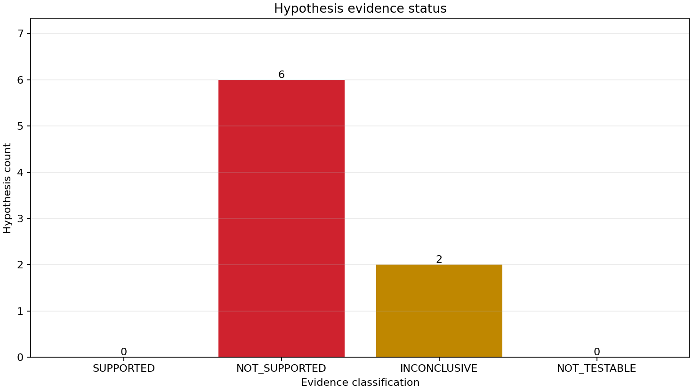
Condition-level paired effects
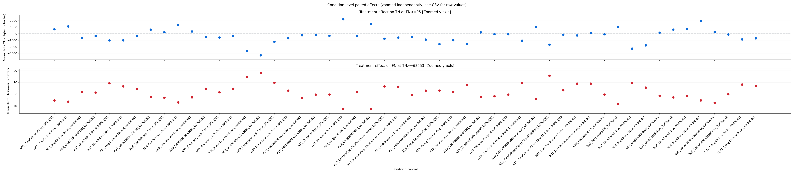
A02 discovery/confirmation seed forest
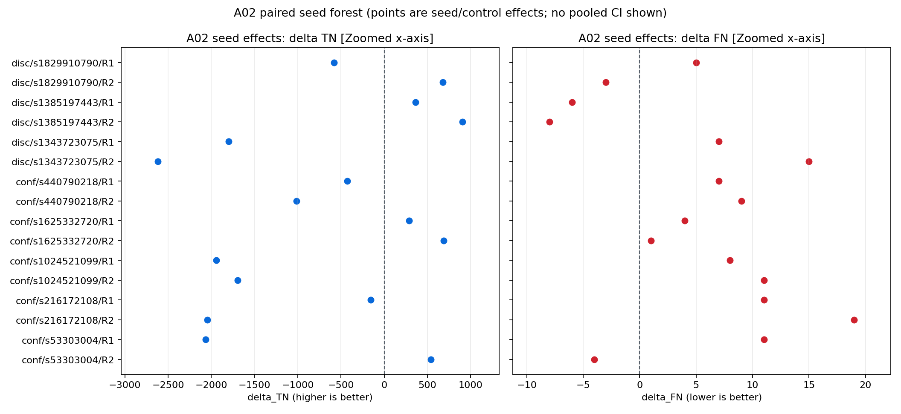
Condition safety/utility plane
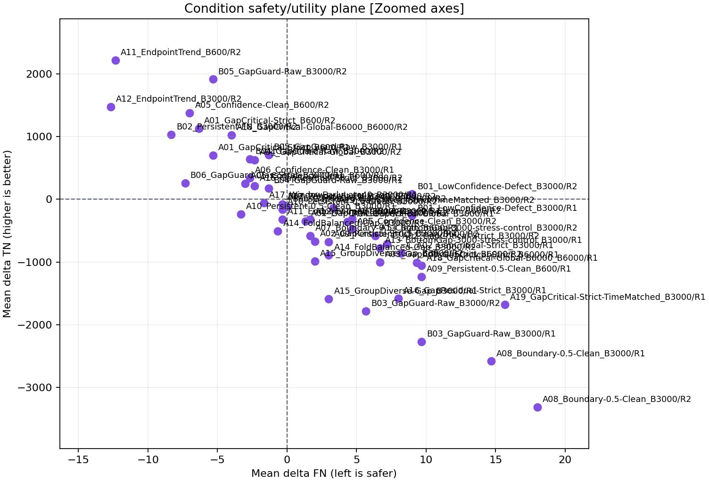
R2 effective unique contrast
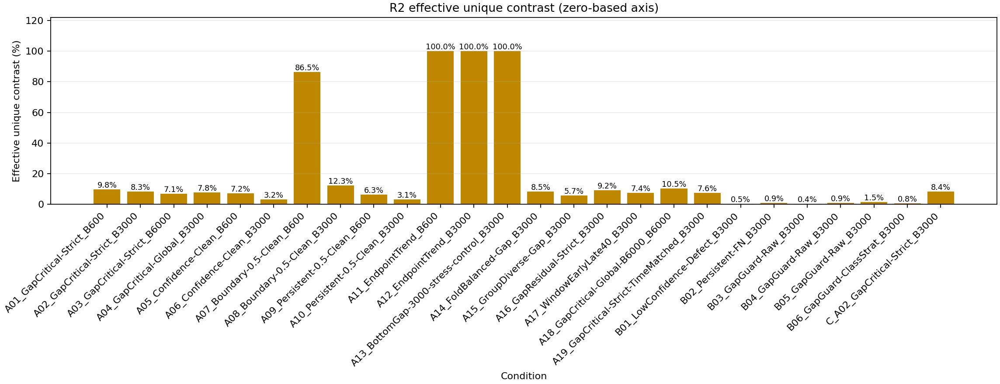
Replay budget response
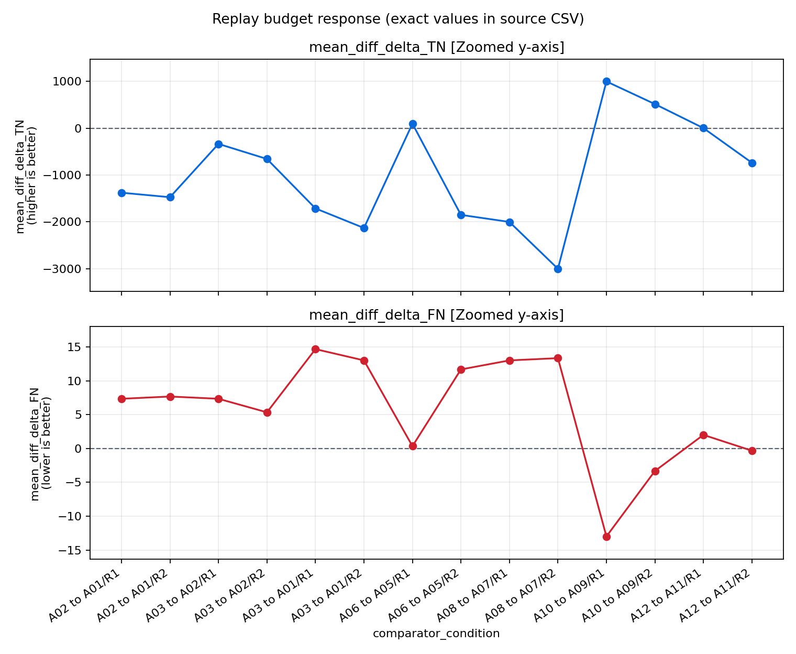
Defect guard response
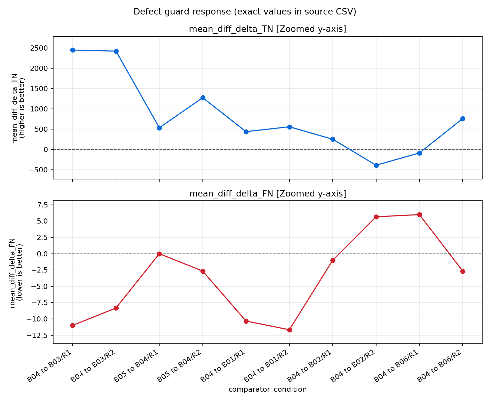
Fixed-tail raw-score movement
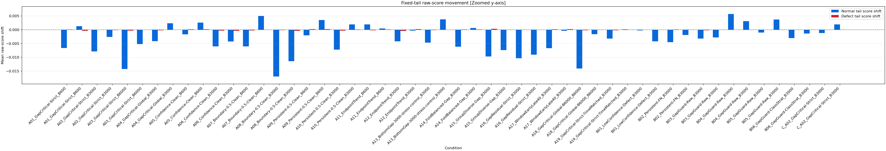
A02 threshold frontier
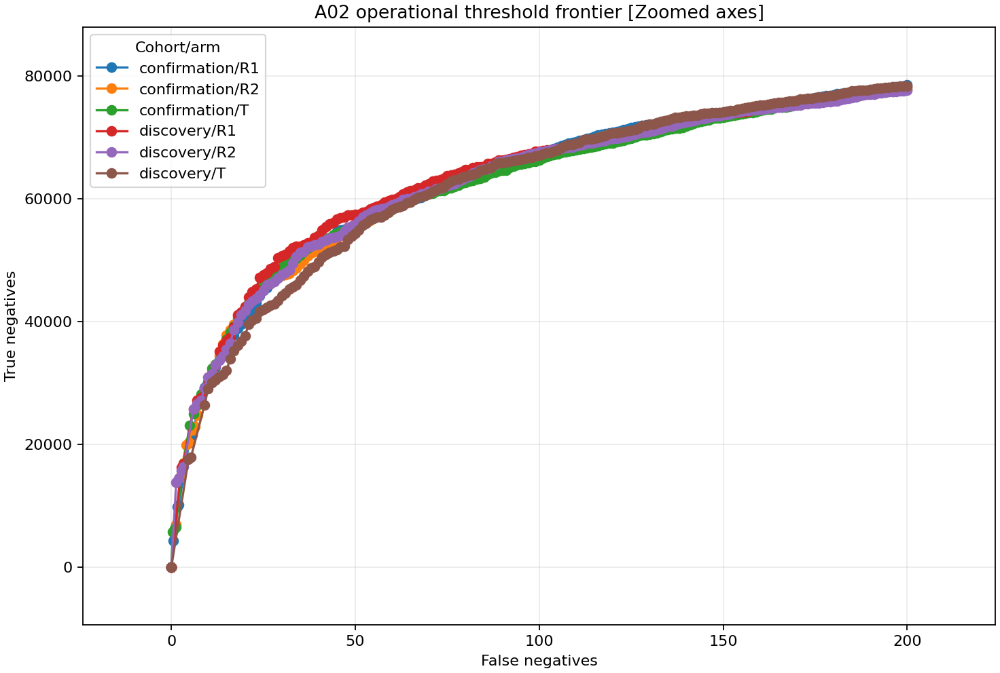
A02 training curves
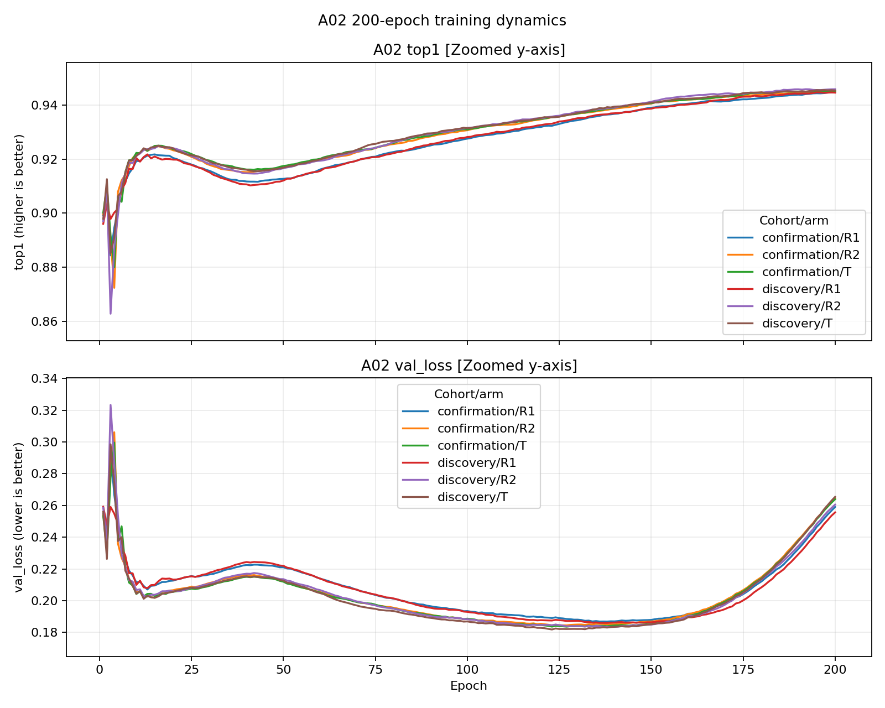
Resume and machine reliability
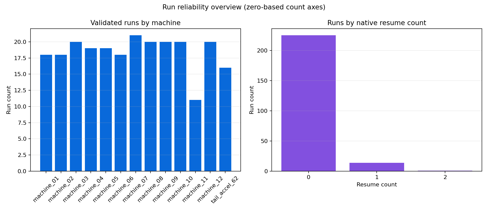
完整分析表
a02_discovery_confirmation_combined
Download complete CSV (6 rows)
| condition_slot | analysis_cohort | control | machine_confounded | n | mean_delta_FN | std_delta_FN | worst_delta_FN | FN_one_sided_95_upper | safety_noninferior | strict_safety_improvement | mean_delta_TN | std_delta_TN | worst_delta_TN | TN_one_sided_95_lower | confirmed_TN_improvement | FN_win_rate | TN_win_rate | median_delta_TN | median_delta_FN | mean_delta_gap_q68_q050 | std_delta_gap_q68_q050 | median_delta_gap_q68_q050 | mean_delta_tail_gap_q90_q05 | std_delta_tail_gap_q90_q05 | median_delta_tail_gap_q90_q05 | mean_delta_normal_q68 | std_delta_normal_q68 | median_delta_normal_q68 | mean_delta_normal_q90 | std_delta_normal_q90 | median_delta_normal_q90 | mean_delta_defect_q50 | std_delta_defect_q50 | median_delta_defect_q50 | mean_delta_defect_q05 | std_delta_defect_q05 | median_delta_defect_q05 | exploratory |
|---|---|---|---|---|---|---|---|---|---|---|---|---|---|---|---|---|---|---|---|---|---|---|---|---|---|---|---|---|---|---|---|---|---|---|---|---|---|---|
| A02 | discovery | R1 | False | 3 | 2.000000 | 7.000000 | 7.0 | 13.800981 | False | False | -673.666667 | 1083.412356 | -1800.0 | -2500.142220 | False | 0.333333 | 0.333333 | -582.0 | 5.0 | 0.000161 | 0.000302 | 0.000040 | -0.018835 | 0.007479 | -0.017602 | 0.000067 | 0.000504 | 0.000005 | -0.007466 | 0.002360 | -0.006806 | 0.000227 | 0.000269 | 0.000101 | -0.026301 | 0.008141 | -0.027688 | True |
| A02 | confirmation | R1 | True | 5 | 8.200000 | 2.949576 | 11.0 | 11.012099 | False | False | -859.000000 | 1075.058603 | -2064.0 | -1883.951053 | False | 0.000000 | 0.200000 | -426.0 | 8.0 | 0.000438 | 0.001086 | 0.000967 | -0.000536 | 0.008537 | 0.000818 | -0.000505 | 0.000694 | -0.000439 | 0.002349 | 0.008040 | 0.006774 | -0.000067 | 0.000604 | 0.000048 | 0.001813 | 0.013657 | 0.006172 | False |
| A02 | pooled | R1 | True | 8 | 5.875000 | 5.409978 | 11.0 | 9.498791 | False | False | -789.500000 | 1002.494888 | -2064.0 | -1461.005852 | False | 0.125000 | 0.250000 | -504.0 | 7.0 | 0.000334 | 0.000849 | 0.000272 | -0.007398 | 0.012138 | -0.006326 | -0.000290 | 0.000660 | -0.000294 | -0.001332 | 0.008021 | -0.003512 | 0.000043 | 0.000502 | 0.000072 | -0.008730 | 0.018364 | -0.012311 | False |
| A02 | discovery | R2 | False | 3 | 1.333333 | 12.096832 | 15.0 | 21.726831 | False | False | -345.666667 | 1973.014023 | -2620.0 | -3671.881158 | False | 0.666667 | 0.666667 | 676.0 | -3.0 | -0.000357 | 0.001400 | -0.000262 | -0.016587 | 0.014287 | -0.012716 | -0.000003 | 0.001299 | -0.000406 | 0.001517 | 0.003748 | 0.001688 | -0.000360 | 0.000304 | -0.000353 | -0.015070 | 0.015632 | -0.015030 | True |
| A02 | confirmation | R2 | True | 5 | 7.200000 | 8.955445 | 19.0 | 15.738040 | False | False | -707.200000 | 1261.763726 | -2048.0 | -1910.154012 | False | 0.200000 | 0.400000 | -1015.0 | 9.0 | -0.000071 | 0.000716 | 0.000167 | -0.004797 | 0.010954 | -0.006785 | 0.000136 | 0.001025 | 0.000629 | 0.002223 | 0.005697 | 0.005495 | 0.000065 | 0.000507 | 0.000056 | -0.002574 | 0.012389 | -0.008142 | False |
| A02 | pooled | R2 | True | 8 | 5.000000 | 9.841603 | 19.0 | 11.592247 | False | False | -571.625000 | 1434.216256 | -2620.0 | -1532.312800 | False | 0.375000 | 0.500000 | -238.0 | 5.0 | -0.000178 | 0.000935 | -0.000047 | -0.009218 | 0.012811 | -0.007346 | 0.000084 | 0.001043 | 0.000112 | 0.001958 | 0.004764 | 0.003432 | -0.000094 | 0.000471 | -0.000190 | -0.007260 | 0.014119 | -0.009614 | False |
a02_extended_sensitivity
Download complete CSV (16 rows)
| condition_slot | control | analysis_set | n | mean_delta_FN | std_delta_FN | worst_delta_FN | FN_one_sided_95_upper | safety_noninferior | strict_safety_improvement | mean_delta_TN | std_delta_TN | worst_delta_TN | TN_one_sided_95_lower | confirmed_TN_improvement | FN_win_rate | TN_win_rate |
|---|---|---|---|---|---|---|---|---|---|---|---|---|---|---|---|---|
| A02 | R1 | all | 8 | 5.875000 | 5.409978 | 11.0 | 9.498791 | False | False | -789.500000 | 1002.494888 | -2064.0 | -1461.005852 | False | 0.125000 | 0.250000 |
| A02 | R1 | current_pair_no_resume | 8 | 5.875000 | 5.409978 | 11.0 | 9.498791 | False | False | -789.500000 | 1002.494888 | -2064.0 | -1461.005852 | False | 0.125000 | 0.250000 |
| A02 | R1 | full_triad_no_resume | 8 | 5.875000 | 5.409978 | 11.0 | 9.498791 | False | False | -789.500000 | 1002.494888 | -2064.0 | -1461.005852 | False | 0.125000 | 0.250000 |
| A02 | R1 | same_machine | 3 | 2.000000 | 7.000000 | 7.0 | 13.800981 | False | False | -673.666667 | 1083.412356 | -1800.0 | -2500.142220 | False | 0.333333 | 0.333333 |
| A02 | R1 | cross_machine | 5 | 8.200000 | 2.949576 | 11.0 | 11.012099 | False | False | -859.000000 | 1075.058603 | -2064.0 | -1883.951053 | False | 0.000000 | 0.200000 |
| A02 | R1 | snapshot_pair:9C51D6B23600CBED36CFFA2537C7DC9C02A093536976ECA80D4968F18691E598__9C51D6B23600CBED36CFFA2537C7DC9C02A093536976ECA80D4968F18691E598 | 7 | 5.571429 | 5.769377 | 11.0 | 9.808766 | False | False | -625.142857 | 959.359930 | -2064.0 | -1329.747742 | False | 0.142857 | 0.285714 |
| A02 | R1 | snapshot_pair:9C51D6B23600CBED36CFFA2537C7DC9C02A093536976ECA80D4968F18691E598__F6EB65A7878DEFF112BC81661D2D227419F9D7B0CF31BCDDBED923AFF4DE3AC8 | 1 | 8.000000 | 0.000000 | 8.0 | NaN | False | False | -1940.000000 | 0.000000 | -1940.0 | NaN | False | 0.000000 | 0.000000 |
| A02 | R1 | resume_pair_max:0 | 8 | 5.875000 | 5.409978 | 11.0 | 9.498791 | False | False | -789.500000 | 1002.494888 | -2064.0 | -1461.005852 | False | 0.125000 | 0.250000 |
| A02 | R2 | all | 8 | 5.000000 | 9.841603 | 19.0 | 11.592247 | False | False | -571.625000 | 1434.216256 | -2620.0 | -1532.312800 | False | 0.375000 | 0.500000 |
| A02 | R2 | current_pair_no_resume | 8 | 5.000000 | 9.841603 | 19.0 | 11.592247 | False | False | -571.625000 | 1434.216256 | -2620.0 | -1532.312800 | False | 0.375000 | 0.500000 |
| A02 | R2 | full_triad_no_resume | 8 | 5.000000 | 9.841603 | 19.0 | 11.592247 | False | False | -571.625000 | 1434.216256 | -2620.0 | -1532.312800 | False | 0.375000 | 0.500000 |
| A02 | R2 | same_machine | 3 | 1.333333 | 12.096832 | 15.0 | 21.726831 | False | False | -345.666667 | 1973.014023 | -2620.0 | -3671.881158 | False | 0.666667 | 0.666667 |
| A02 | R2 | cross_machine | 5 | 7.200000 | 8.955445 | 19.0 | 15.738040 | False | False | -707.200000 | 1261.763726 | -2048.0 | -1910.154012 | False | 0.200000 | 0.400000 |
| A02 | R2 | snapshot_pair:9C51D6B23600CBED36CFFA2537C7DC9C02A093536976ECA80D4968F18691E598__9C51D6B23600CBED36CFFA2537C7DC9C02A093536976ECA80D4968F18691E598 | 7 | 4.142857 | 10.302566 | 19.0 | 11.709608 | False | False | -410.714286 | 1469.062480 | -2620.0 | -1489.671794 | False | 0.428571 | 0.571429 |
| A02 | R2 | snapshot_pair:9C51D6B23600CBED36CFFA2537C7DC9C02A093536976ECA80D4968F18691E598__F6EB65A7878DEFF112BC81661D2D227419F9D7B0CF31BCDDBED923AFF4DE3AC8 | 1 | 11.000000 | 0.000000 | 11.0 | NaN | False | False | -1698.000000 | 0.000000 | -1698.0 | NaN | False | 0.000000 | 0.000000 |
| A02 | R2 | resume_pair_max:0 | 8 | 5.000000 | 9.841603 | 19.0 | 11.592247 | False | False | -571.625000 | 1434.216256 | -2620.0 | -1532.312800 | False | 0.375000 | 0.500000 |
a02_leave_one_seed_out
Download complete CSV (16 rows)
| condition_slot | control | omitted_seed | n | mean_delta_FN | std_delta_FN | worst_delta_FN | FN_one_sided_95_upper | safety_noninferior | strict_safety_improvement | mean_delta_TN | std_delta_TN | worst_delta_TN | TN_one_sided_95_lower | confirmed_TN_improvement | FN_win_rate | TN_win_rate |
|---|---|---|---|---|---|---|---|---|---|---|---|---|---|---|---|---|
| A02 | R1 | 53303004 | 7 | 5.142857 | 5.398412 | 11.0 | 9.107738 | False | False | -607.428571 | 929.029217 | -1940.0 | -1289.756970 | False | 0.142857 | 0.285714 |
| A02 | R1 | 216172108 | 7 | 5.142857 | 5.398412 | 11.0 | 9.107738 | False | False | -880.285714 | 1046.694593 | -2064.0 | -1649.033814 | False | 0.142857 | 0.285714 |
| A02 | R1 | 440790218 | 7 | 5.714286 | 5.822780 | 11.0 | 9.990844 | False | False | -841.428571 | 1071.133645 | -2064.0 | -1628.126009 | False | 0.142857 | 0.285714 |
| A02 | R1 | 1024521099 | 7 | 5.571429 | 5.769377 | 11.0 | 9.808766 | False | False | -625.142857 | 959.359930 | -2064.0 | -1329.747742 | False | 0.142857 | 0.285714 |
| A02 | R1 | 1343723075 | 7 | 5.714286 | 5.822780 | 11.0 | 9.990844 | False | False | -645.142857 | 988.937886 | -2064.0 | -1371.471364 | False | 0.142857 | 0.285714 |
| A02 | R1 | 1385197443 | 7 | 7.571429 | 2.699206 | 11.0 | 9.553869 | False | False | -953.857143 | 959.359930 | -2064.0 | -1658.462028 | False | 0.000000 | 0.142857 |
| A02 | R1 | 1625332720 | 7 | 6.142857 | 5.785861 | 11.0 | 10.392301 | False | False | -943.571429 | 975.161842 | -2064.0 | -1659.782077 | False | 0.142857 | 0.142857 |
| A02 | R1 | 1829910790 | 7 | 6.000000 | 5.830952 | 11.0 | 10.282561 | False | False | -819.142857 | 1079.024626 | -2064.0 | -1611.635850 | False | 0.142857 | 0.285714 |
| A02 | R2 | 53303004 | 7 | 6.285714 | 9.877825 | 19.0 | 13.540514 | False | False | -730.285714 | 1471.344817 | -2620.0 | -1810.919492 | False | 0.285714 | 0.428571 |
| A02 | R2 | 216172108 | 7 | 3.000000 | 8.698659 | 15.0 | 9.388757 | False | False | -360.714286 | 1408.768223 | -2620.0 | -1395.388489 | False | 0.428571 | 0.571429 |
| A02 | R2 | 440790218 | 7 | 4.428571 | 10.485818 | 19.0 | 12.129913 | False | False | -508.285714 | 1536.997583 | -2620.0 | -1637.138371 | False | 0.428571 | 0.571429 |
| A02 | R2 | 1024521099 | 7 | 4.142857 | 10.302566 | 19.0 | 11.709608 | False | False | -410.714286 | 1469.062480 | -2620.0 | -1489.671794 | False | 0.428571 | 0.571429 |
| A02 | R2 | 1343723075 | 7 | 3.571429 | 9.692904 | 19.0 | 10.690412 | False | False | -279.000000 | 1265.147422 | -2048.0 | -1208.191460 | False | 0.428571 | 0.571429 |
| A02 | R2 | 1385197443 | 7 | 6.857143 | 8.989412 | 19.0 | 13.459444 | False | False | -782.857143 | 1408.318670 | -2620.0 | -1817.201171 | False | 0.285714 | 0.428571 |
| A02 | R2 | 1625332720 | 7 | 5.571429 | 10.485818 | 19.0 | 13.272770 | False | False | -751.285714 | 1448.635417 | -2620.0 | -1815.240503 | False | 0.428571 | 0.428571 |
| A02 | R2 | 1829910790 | 7 | 6.142857 | 10.040395 | 19.0 | 13.517056 | False | False | -749.857143 | 1450.281516 | -2620.0 | -1815.020914 | False | 0.285714 | 0.428571 |
a02_shift_subgroups
Download complete CSV (132 rows)
Previewing 20 of 132 rows.
| control | subgroup_dimension | subgroup_value | n | normal_n | defect_n | raw_beneficial_rate | raw_mean_shift | calibrated_beneficial_rate | calibrated_mean_shift |
|---|---|---|---|---|---|---|---|---|---|
| R1 | WaterLevel | 0 | 412088 | 334800 | 77288 | 0.450976 | -0.001353 | 0.539331 | -0.000879 |
| R1 | WaterLevel | 1 | 240 | 240 | 0 | 0.416667 | 0.002542 | 0.504167 | 0.003562 |
| R1 | WaterLevel | 10 | 326424 | 279272 | 47152 | 0.462540 | -0.001031 | 0.529554 | -0.000430 |
| R1 | WaterLevel | 100 | 1312 | 1288 | 24 | 0.502287 | -0.003744 | 0.523628 | -0.003189 |
| R1 | WaterLevel | 2 | 46992 | 41448 | 5544 | 0.446672 | -0.001537 | 0.511938 | -0.000368 |
| R1 | WaterLevel | 20 | 49752 | 41056 | 8696 | 0.445952 | -0.000840 | 0.502814 | 0.000729 |
| R1 | WaterLevel | 30 | 15656 | 13200 | 2456 | 0.454075 | -0.000819 | 0.507601 | 0.001194 |
| R1 | WaterLevel | 4 | 48 | 8 | 40 | 0.395833 | 0.000184 | 0.562500 | 0.007497 |
| R1 | WaterLevel | 40 | 4624 | 3824 | 800 | 0.441393 | -0.000831 | 0.481618 | 0.001893 |
| R1 | WaterLevel | 5 | 97152 | 79776 | 17376 | 0.456367 | -0.001920 | 0.521327 | -0.000681 |
| R1 | WaterLevel | 50 | 3672 | 3232 | 440 | 0.468954 | -0.003834 | 0.490468 | -0.000126 |
| R1 | WaterLevel | 60 | 920 | 840 | 80 | 0.430435 | 0.005640 | 0.443478 | 0.007571 |
| R1 | WaterLevel | 70 | 304 | 272 | 32 | 0.440789 | -0.007555 | 0.493421 | 0.000982 |
| R1 | WaterLevel | 80 | 672 | 616 | 56 | 0.480655 | -0.011243 | 0.507440 | -0.003589 |
| R1 | WaterLevel | 90 | 144 | 128 | 16 | 0.527778 | -0.005524 | 0.548611 | 0.001760 |
| R1 | defect_class | AF | 29608 | 0 | 29608 | 0.319272 | -0.002359 | 0.535801 | -0.000684 |
| R1 | defect_class | DE | 8856 | 0 | 8856 | 0.413505 | -0.005356 | 0.525519 | -0.001337 |
| R1 | defect_class | FS | 112520 | 0 | 112520 | 0.335763 | -0.001233 | 0.533541 | 0.000204 |
| R1 | defect_class | OB | 78288 | 0 | 78288 | 0.346554 | -0.001163 | 0.533913 | 0.000309 |
| R1 | defect_class | PF | 7728 | 0 | 7728 | 0.320911 | -0.004129 | 0.540114 | -0.001564 |
a02_threshold_frontier
Download complete CSV (1,206 rows)
Previewing 20 of 1,206 rows.
| phase | arm | fn_budget | run_count | FN | FN_std | TN | TN_std | analysis_cohort | series |
|---|---|---|---|---|---|---|---|---|---|
| A | R1 | 0 | 3 | 0.000000 | 0.000000 | 0.000000 | 0.000000 | discovery | discovery/R1 |
| A | R1 | 1 | 3 | 0.000000 | 0.000000 | 0.000000 | 0.000000 | discovery | discovery/R1 |
| A | R1 | 2 | 3 | 0.000000 | 0.000000 | 0.000000 | 0.000000 | discovery | discovery/R1 |
| A | R1 | 3 | 3 | 0.000000 | 0.000000 | 0.000000 | 0.000000 | discovery | discovery/R1 |
| A | R1 | 4 | 3 | 2.666667 | 1.885618 | 16203.000000 | 11495.230866 | discovery | discovery/R1 |
| A | R1 | 5 | 3 | 3.333333 | 2.357023 | 16916.666667 | 12064.072539 | discovery | discovery/R1 |
| A | R1 | 6 | 3 | 6.000000 | 0.000000 | 25780.666667 | 3347.093897 | discovery | discovery/R1 |
| A | R1 | 7 | 3 | 7.000000 | 0.000000 | 27175.666667 | 3415.299141 | discovery | discovery/R1 |
| A | R1 | 8 | 3 | 8.000000 | 0.000000 | 27645.000000 | 2991.314204 | discovery | discovery/R1 |
| A | R1 | 9 | 3 | 9.000000 | 0.000000 | 29001.666667 | 2027.829107 | discovery | discovery/R1 |
| A | R1 | 10 | 3 | 10.000000 | 0.000000 | 29719.666667 | 1408.129098 | discovery | discovery/R1 |
| A | R1 | 11 | 3 | 11.000000 | 0.000000 | 30983.666667 | 581.810011 | discovery | discovery/R1 |
| A | R1 | 12 | 3 | 12.000000 | 0.000000 | 32839.333333 | 1074.191272 | discovery | discovery/R1 |
| A | R1 | 13 | 3 | 13.000000 | 0.000000 | 35126.000000 | 1447.854274 | discovery | discovery/R1 |
| A | R1 | 14 | 3 | 14.000000 | 0.000000 | 36157.000000 | 1479.149981 | discovery | discovery/R1 |
| A | R1 | 15 | 3 | 15.000000 | 0.000000 | 36911.666667 | 1852.760343 | discovery | discovery/R1 |
| A | R1 | 16 | 3 | 16.000000 | 0.000000 | 37410.666667 | 1489.125321 | discovery | discovery/R1 |
| A | R1 | 17 | 3 | 17.000000 | 0.000000 | 39062.333333 | 1600.394604 | discovery | discovery/R1 |
| A | R1 | 18 | 3 | 18.000000 | 0.000000 | 41073.333333 | 1558.600298 | discovery | discovery/R1 |
| A | R1 | 19 | 3 | 19.000000 | 0.000000 | 41561.000000 | 1638.396167 | discovery | discovery/R1 |
a02_threshold_frontier_detail
Download complete CSV (4,824 rows)
Previewing 20 of 4,824 rows.
| run_slot | phase | condition_slot | arm | training_seed | fn_budget | constraint_status | threshold | actual_TP | actual_FP | actual_TN | actual_FN | tie_group_size |
|---|---|---|---|---|---|---|---|---|---|---|---|---|
| RUN_010 | A | A02 | T | 1829910790 | 0 | OK | 0.002583 | 20000 | 100000 | 0 | 0 | 19621 |
| RUN_010 | A | A02 | T | 1829910790 | 1 | OK | 0.002583 | 20000 | 100000 | 0 | 0 | 19621 |
| RUN_010 | A | A02 | T | 1829910790 | 2 | OK | 0.002583 | 20000 | 100000 | 0 | 0 | 19621 |
| RUN_010 | A | A02 | T | 1829910790 | 3 | OK | 0.002583 | 20000 | 100000 | 0 | 0 | 19621 |
| RUN_010 | A | A02 | T | 1829910790 | 4 | OK | 0.002583 | 20000 | 100000 | 0 | 0 | 19621 |
| RUN_010 | A | A02 | T | 1829910790 | 5 | OK | 0.002583 | 20000 | 100000 | 0 | 0 | 19621 |
| RUN_010 | A | A02 | T | 1829910790 | 6 | OK | 0.002583 | 20000 | 100000 | 0 | 0 | 19621 |
| RUN_010 | A | A02 | T | 1829910790 | 7 | OK | 0.003179 | 19993 | 76676 | 23324 | 7 | 1 |
| RUN_010 | A | A02 | T | 1829910790 | 8 | OK | 0.003292 | 19992 | 76019 | 23981 | 8 | 1 |
| RUN_010 | A | A02 | T | 1829910790 | 9 | OK | 0.003381 | 19991 | 75504 | 24496 | 9 | 1 |
| RUN_010 | A | A02 | T | 1829910790 | 10 | OK | 0.004503 | 19990 | 69746 | 30254 | 10 | 1 |
| RUN_010 | A | A02 | T | 1829910790 | 11 | OK | 0.004610 | 19989 | 69193 | 30807 | 11 | 1 |
| RUN_010 | A | A02 | T | 1829910790 | 12 | OK | 0.004671 | 19988 | 68927 | 31073 | 12 | 1 |
| RUN_010 | A | A02 | T | 1829910790 | 13 | OK | 0.004835 | 19987 | 68190 | 31810 | 13 | 1 |
| RUN_010 | A | A02 | T | 1829910790 | 14 | OK | 0.004985 | 19986 | 67500 | 32500 | 14 | 1 |
| RUN_010 | A | A02 | T | 1829910790 | 15 | OK | 0.005027 | 19985 | 67335 | 32665 | 15 | 1 |
| RUN_010 | A | A02 | T | 1829910790 | 16 | OK | 0.005624 | 19984 | 64976 | 35024 | 16 | 1 |
| RUN_010 | A | A02 | T | 1829910790 | 17 | OK | 0.006277 | 19983 | 62637 | 37363 | 17 | 1 |
| RUN_010 | A | A02 | T | 1829910790 | 18 | OK | 0.006619 | 19982 | 61481 | 38519 | 18 | 1 |
| RUN_010 | A | A02 | T | 1829910790 | 19 | OK | 0.006620 | 19981 | 61479 | 38521 | 19 | 1 |
a02_training_curves
Download complete CSV (1,200 rows)
Previewing 20 of 1,200 rows.
| discovery_or_confirmation | arm | epoch | run_count | top1_mean | top1_std | val_loss_mean | val_loss_std | train_loss_mean | top1 | val_loss | series |
|---|---|---|---|---|---|---|---|---|---|---|---|
| confirmation | R1 | 1 | 5 | 0.899250 | 0.001772 | 0.254504 | 0.002188 | 0.369902 | 0.899250 | 0.254504 | confirmation/R1 |
| confirmation | R1 | 2 | 5 | 0.905442 | 0.002192 | 0.244920 | 0.004027 | 0.255312 | 0.905442 | 0.244920 | confirmation/R1 |
| confirmation | R1 | 3 | 5 | 0.884358 | 0.008884 | 0.294520 | 0.024790 | 0.255960 | 0.884358 | 0.294520 | confirmation/R1 |
| confirmation | R1 | 4 | 5 | 0.894552 | 0.004116 | 0.266780 | 0.009211 | 0.274444 | 0.894552 | 0.266780 | confirmation/R1 |
| confirmation | R1 | 5 | 5 | 0.901432 | 0.005285 | 0.249050 | 0.011440 | 0.266948 | 0.901432 | 0.249050 | confirmation/R1 |
| confirmation | R1 | 6 | 5 | 0.909798 | 0.002023 | 0.232322 | 0.004831 | 0.261964 | 0.909798 | 0.232322 | confirmation/R1 |
| confirmation | R1 | 7 | 5 | 0.911692 | 0.002862 | 0.226356 | 0.006394 | 0.260908 | 0.911692 | 0.226356 | confirmation/R1 |
| confirmation | R1 | 8 | 5 | 0.914750 | 0.001005 | 0.218962 | 0.002204 | 0.260430 | 0.914750 | 0.218962 | confirmation/R1 |
| confirmation | R1 | 9 | 5 | 0.916660 | 0.001504 | 0.215924 | 0.003601 | 0.260044 | 0.916660 | 0.215924 | confirmation/R1 |
| confirmation | R1 | 10 | 5 | 0.919342 | 0.000933 | 0.211566 | 0.002467 | 0.259826 | 0.919342 | 0.211566 | confirmation/R1 |
| confirmation | R1 | 11 | 5 | 0.919266 | 0.000587 | 0.211896 | 0.001043 | 0.258962 | 0.919266 | 0.211896 | confirmation/R1 |
| confirmation | R1 | 12 | 5 | 0.920566 | 0.001166 | 0.209328 | 0.001749 | 0.259028 | 0.920566 | 0.209328 | confirmation/R1 |
| confirmation | R1 | 13 | 5 | 0.921298 | 0.001039 | 0.207080 | 0.000791 | 0.258074 | 0.921298 | 0.207080 | confirmation/R1 |
| confirmation | R1 | 14 | 5 | 0.921614 | 0.001003 | 0.209362 | 0.001404 | 0.256784 | 0.921614 | 0.209362 | confirmation/R1 |
| confirmation | R1 | 15 | 5 | 0.921768 | 0.000698 | 0.209606 | 0.001356 | 0.256882 | 0.921768 | 0.209606 | confirmation/R1 |
| confirmation | R1 | 16 | 5 | 0.921460 | 0.000620 | 0.210624 | 0.000728 | 0.255276 | 0.921460 | 0.210624 | confirmation/R1 |
| confirmation | R1 | 17 | 5 | 0.921392 | 0.000895 | 0.211788 | 0.001600 | 0.254576 | 0.921392 | 0.211788 | confirmation/R1 |
| confirmation | R1 | 18 | 5 | 0.921298 | 0.000281 | 0.211830 | 0.001492 | 0.254014 | 0.921298 | 0.211830 | confirmation/R1 |
| confirmation | R1 | 19 | 5 | 0.921276 | 0.000557 | 0.212448 | 0.001487 | 0.253396 | 0.921276 | 0.212448 | confirmation/R1 |
| confirmation | R1 | 20 | 5 | 0.920450 | 0.000294 | 0.212662 | 0.001468 | 0.251412 | 0.920450 | 0.212662 | confirmation/R1 |
bottom_gap_signs
Download complete CSV (1 rows)
| condition_slot | score_column | selected_count | negative_count | nonnegative_count | min_score | max_score | mean_score | q00 | q10 | q25 | q50 | q75 | q90 | q100 |
|---|---|---|---|---|---|---|---|---|---|---|---|---|---|---|
| A13 | gap_critical_score | 3000 | 2844 | 156 | -0.938369 | 0.000278 | -0.246304 | -0.938369 | -0.56797 | -0.405499 | -0.185918 | -0.051617 | -0.009676 | 0.000278 |
budget_response
Download complete CSV (14 rows)
| comparison_type | reference_condition | comparator_condition | control | n | mean_diff_delta_FN | std_diff_delta_FN | worst_diff_delta_FN | FN_one_sided_95_upper | safety_noninferior | strict_safety_improvement | mean_diff_delta_TN | std_diff_delta_TN | worst_diff_delta_TN | TN_one_sided_95_lower | confirmed_TN_improvement | FN_win_rate | TN_win_rate | median_diff_delta_TN | median_diff_delta_FN | mean_diff_delta_gap_q68_q050 | std_diff_delta_gap_q68_q050 | median_diff_delta_gap_q68_q050 | mean_diff_delta_tail_gap_q90_q05 | std_diff_delta_tail_gap_q90_q05 | median_diff_delta_tail_gap_q90_q05 | mean_diff_delta_normal_q68 | std_diff_delta_normal_q68 | median_diff_delta_normal_q68 | mean_diff_delta_normal_q90 | std_diff_delta_normal_q90 | median_diff_delta_normal_q90 | mean_diff_delta_defect_q50 | std_diff_delta_defect_q50 | median_diff_delta_defect_q50 | mean_diff_delta_defect_q05 | std_diff_delta_defect_q05 | median_diff_delta_defect_q05 | exploratory |
|---|---|---|---|---|---|---|---|---|---|---|---|---|---|---|---|---|---|---|---|---|---|---|---|---|---|---|---|---|---|---|---|---|---|---|---|---|---|---|
| budget | A02 | A01 | R1 | 3 | 7.333333 | 5.033223 | 12.0 | 15.818615 | False | False | -1377.333333 | 1819.173530 | -3446.0 | -4444.195144 | False | 0.000000 | 0.000000 | -659.0 | 8.0 | -0.000316 | 0.000163 | -0.000244 | -0.030579 | 0.007256 | -0.030966 | 0.000072 | 0.000245 | 0.000135 | 0.002419 | 0.003657 | 0.003706 | -0.000243 | 0.000399 | -0.000065 | -0.028160 | 0.005013 | -0.025708 | True |
| budget | A02 | A01 | R2 | 3 | 7.666667 | 13.650397 | 17.0 | 30.679249 | False | False | -1473.333333 | 2470.727086 | -3038.0 | -5638.619613 | False | 0.333333 | 0.333333 | -2757.0 | 14.0 | -0.001186 | 0.002564 | -0.001373 | -0.016674 | 0.006167 | -0.018828 | 0.000435 | 0.001352 | 0.000520 | 0.002306 | 0.006995 | 0.004121 | -0.000752 | 0.001213 | -0.000853 | -0.014368 | 0.011133 | -0.010614 | True |
| budget | A03 | A02 | R1 | 3 | 7.333333 | 24.006943 | 28.0 | 47.805546 | False | False | -335.666667 | 4083.360911 | -3530.0 | -7219.618875 | False | 0.333333 | 0.333333 | -1742.0 | 13.0 | -0.000496 | 0.001242 | 0.000221 | 0.023315 | 0.013951 | 0.028722 | 0.000824 | 0.002150 | 0.001254 | -0.003813 | 0.001325 | -0.003068 | 0.000328 | 0.001439 | 0.000796 | 0.019503 | 0.013148 | 0.025695 | True |
| budget | A03 | A02 | R2 | 3 | 5.333333 | 10.692677 | 12.0 | 23.359630 | False | False | -657.333333 | 1278.907867 | -2060.0 | -2813.385867 | False | 0.333333 | 0.333333 | -356.0 | 11.0 | -0.000142 | 0.001971 | -0.000151 | 0.014178 | 0.002250 | 0.014602 | -0.000133 | 0.001781 | -0.000456 | -0.003178 | 0.015702 | 0.001846 | -0.000276 | 0.000357 | -0.000322 | 0.011000 | 0.017938 | 0.016448 | True |
| budget | A03 | A01 | R1 | 3 | 14.666667 | 29.022979 | 40.0 | 63.595186 | False | False | -1713.000000 | 5638.568701 | -6976.0 | -11218.806198 | False | 0.333333 | 0.333333 | -2401.0 | 21.0 | -0.000812 | 0.001190 | -0.000282 | -0.007263 | 0.019880 | 0.002787 | 0.000896 | 0.002194 | 0.001055 | -0.001394 | 0.002917 | -0.000083 | 0.000084 | 0.001245 | 0.000773 | -0.008657 | 0.018096 | 0.000850 | True |
| budget | A03 | A01 | R2 | 3 | 13.000000 | 11.789826 | 26.0 | 32.875931 | False | False | -2130.666667 | 2945.459613 | -4817.0 | -7096.282895 | False | 0.000000 | 0.333333 | -2594.0 | 10.0 | -0.001329 | 0.002213 | -0.000642 | -0.002496 | 0.003954 | -0.004225 | 0.000301 | 0.001329 | 0.000829 | -0.000873 | 0.014003 | 0.003980 | -0.001027 | 0.001373 | -0.000751 | -0.003368 | 0.010385 | -0.001310 | True |
| budget | A06 | A05 | R1 | 3 | 0.333333 | 11.060440 | 12.0 | 18.979625 | False | False | 96.000000 | 2457.653963 | -2103.0 | -4047.246896 | False | 0.666667 | 0.333333 | -358.0 | -1.0 | -0.002476 | 0.000890 | -0.002684 | -0.012640 | 0.014122 | -0.020315 | 0.001884 | 0.000990 | 0.001991 | 0.002591 | 0.013596 | 0.000454 | -0.000592 | 0.000694 | -0.000656 | -0.010050 | 0.008556 | -0.006153 | True |
| budget | A06 | A05 | R2 | 3 | 11.666667 | 5.507571 | 17.0 | 20.951629 | False | False | -1851.000000 | 2142.229913 | -3666.0 | -5462.487855 | False | 0.000000 | 0.333333 | -2399.0 | 12.0 | -0.001960 | 0.000532 | -0.002009 | 0.000198 | 0.003251 | -0.001595 | 0.000816 | 0.001251 | 0.000732 | -0.008210 | 0.001875 | -0.008220 | -0.001144 | 0.001533 | -0.000673 | -0.008012 | 0.001844 | -0.008092 | True |
| budget | A08 | A07 | R1 | 3 | 13.000000 | 3.605551 | 16.0 | 19.078435 | False | False | -2001.333333 | 671.596853 | -2776.0 | -3133.547884 | False | 0.000000 | 0.000000 | -1645.0 | 14.0 | -0.003881 | 0.001251 | -0.004292 | -0.025560 | 0.009891 | -0.028340 | 0.003337 | 0.001060 | 0.003491 | -0.004091 | 0.008334 | -0.001198 | -0.000544 | 0.000742 | -0.000267 | -0.029651 | 0.001648 | -0.029539 | True |
| budget | A08 | A07 | R2 | 3 | 13.333333 | 2.309401 | 16.0 | 17.226647 | False | False | -3001.333333 | 532.113083 | -3602.0 | -3898.398548 | False | 0.000000 | 0.000000 | -2813.0 | 12.0 | -0.001903 | 0.002462 | -0.000746 | 0.001976 | 0.015813 | 0.004673 | 0.001943 | 0.000633 | 0.001757 | -0.005726 | 0.010099 | -0.010286 | 0.000039 | 0.001840 | 0.001010 | -0.003750 | 0.006546 | -0.005613 | True |
| budget | A10 | A09 | R1 | 3 | -13.000000 | 8.717798 | -3.0 | 1.696938 | True | True | 997.333333 | 2459.253816 | -1506.0 | -3148.610683 | False | 1.000000 | 0.666667 | 1088.0 | -17.0 | -0.000359 | 0.000918 | -0.000127 | -0.012813 | 0.007107 | -0.010822 | 0.000808 | 0.001898 | 0.000806 | 0.001536 | 0.010502 | 0.006314 | 0.000449 | 0.001023 | 0.000680 | -0.011277 | 0.017555 | -0.004508 | True |
| budget | A10 | A09 | R2 | 3 | -3.333333 | 13.203535 | 11.0 | 18.925905 | False | True | 514.333333 | 2936.228931 | -2856.0 | -4435.721308 | False | 0.666667 | 0.666667 | 1880.0 | -6.0 | 0.000875 | 0.000928 | 0.001208 | -0.010942 | 0.011027 | -0.006739 | -0.000465 | 0.002221 | -0.001358 | 0.002103 | 0.002518 | 0.001512 | 0.000411 | 0.001294 | -0.000151 | -0.008839 | 0.008909 | -0.006806 | True |
| budget | A12 | A11 | R1 | 3 | 2.000000 | 7.000000 | 9.0 | 13.800981 | False | False | 2.000000 | 1081.827620 | -1243.0 | -1821.803920 | False | 0.333333 | 0.666667 | 536.0 | 2.0 | -0.000218 | 0.002848 | 0.000539 | 0.009072 | 0.005049 | 0.007108 | 0.000080 | 0.002514 | 0.000200 | -0.010270 | 0.009856 | -0.012916 | -0.000138 | 0.000802 | -0.000316 | -0.001198 | 0.007986 | -0.003725 | True |
| budget | A12 | A11 | R2 | 3 | -0.333333 | 11.930353 | 13.0 | 19.779506 | False | True | -738.000000 | 2428.276138 | -3358.0 | -4831.720159 | False | 0.666667 | 0.333333 | -293.0 | -4.0 | 0.000227 | 0.001674 | 0.000582 | 0.000510 | 0.016502 | 0.006538 | -0.000204 | 0.001503 | 0.000447 | -0.001740 | 0.017857 | -0.009279 | 0.000022 | 0.000907 | -0.000229 | -0.001230 | 0.001626 | -0.001440 | True |
calibration_diagnostics
Download complete CSV (480 rows)
Previewing 20 of 480 rows.
| run_slot | triad_id | condition_slot | phase | arm | training_seed | split | row_count | auroc | auprc | auroc_raw | auprc_raw | brier | log_loss | ece | ece_bins |
|---|---|---|---|---|---|---|---|---|---|---|---|---|---|---|---|
| RUN_001 | TRIAD_001 | A01 | A | T | 1829910790 | val_cal | 120000 | 0.986270 | 0.946070 | 0.986273 | 0.946072 | 0.040665 | 0.145404 | 0.054268 | 15 |
| RUN_001 | TRIAD_001 | A01 | A | T | 1829910790 | val_op | 120000 | 0.986918 | 0.947346 | 0.986929 | 0.947353 | 0.039890 | 0.143428 | 0.054005 | 15 |
| RUN_002 | TRIAD_001 | A01 | A | R1 | 1829910790 | val_cal | 120000 | 0.986298 | 0.947047 | 0.986297 | 0.947048 | 0.041046 | 0.145622 | 0.054712 | 15 |
| RUN_002 | TRIAD_001 | A01 | A | R1 | 1829910790 | val_op | 120000 | 0.986895 | 0.948319 | 0.986895 | 0.948319 | 0.040583 | 0.144445 | 0.054481 | 15 |
| RUN_003 | TRIAD_001 | A01 | A | R2 | 1829910790 | val_cal | 120000 | 0.986427 | 0.946567 | 0.986416 | 0.946567 | 0.040260 | 0.144457 | 0.053905 | 15 |
| RUN_003 | TRIAD_001 | A01 | A | R2 | 1829910790 | val_op | 120000 | 0.986914 | 0.945313 | 0.986915 | 0.945316 | 0.039812 | 0.144054 | 0.053916 | 15 |
| RUN_004 | TRIAD_002 | A01 | A | T | 1385197443 | val_cal | 120000 | 0.986161 | 0.946255 | 0.986172 | 0.946264 | 0.040271 | 0.144988 | 0.054079 | 15 |
| RUN_004 | TRIAD_002 | A01 | A | T | 1385197443 | val_op | 120000 | 0.986948 | 0.945987 | 0.986953 | 0.945991 | 0.039608 | 0.143489 | 0.053538 | 15 |
| RUN_005 | TRIAD_002 | A01 | A | R1 | 1385197443 | val_cal | 120000 | 0.985933 | 0.945425 | 0.985929 | 0.945427 | 0.041175 | 0.147231 | 0.055127 | 15 |
| RUN_005 | TRIAD_002 | A01 | A | R1 | 1385197443 | val_op | 120000 | 0.986639 | 0.946038 | 0.986638 | 0.946039 | 0.040397 | 0.145208 | 0.054692 | 15 |
| RUN_006 | TRIAD_002 | A01 | A | R2 | 1385197443 | val_cal | 120000 | 0.985770 | 0.943740 | 0.985771 | 0.943743 | 0.041084 | 0.147725 | 0.054959 | 15 |
| RUN_006 | TRIAD_002 | A01 | A | R2 | 1385197443 | val_op | 120000 | 0.986436 | 0.944405 | 0.986437 | 0.944410 | 0.040316 | 0.146104 | 0.054780 | 15 |
| RUN_007 | TRIAD_003 | A01 | A | T | 1343723075 | val_cal | 120000 | 0.985804 | 0.944245 | 0.985802 | 0.944248 | 0.040855 | 0.147012 | 0.054877 | 15 |
| RUN_007 | TRIAD_003 | A01 | A | T | 1343723075 | val_op | 120000 | 0.986446 | 0.945107 | 0.986446 | 0.945111 | 0.040022 | 0.145010 | 0.054487 | 15 |
| RUN_008 | TRIAD_003 | A01 | A | R1 | 1343723075 | val_cal | 120000 | 0.986151 | 0.946171 | 0.986160 | 0.946175 | 0.041139 | 0.146609 | 0.055250 | 15 |
| RUN_008 | TRIAD_003 | A01 | A | R1 | 1343723075 | val_op | 120000 | 0.986748 | 0.946427 | 0.986748 | 0.946427 | 0.040534 | 0.145288 | 0.054869 | 15 |
| RUN_009 | TRIAD_003 | A01 | A | R2 | 1343723075 | val_cal | 120000 | 0.985764 | 0.944082 | 0.985762 | 0.944086 | 0.040942 | 0.147680 | 0.055278 | 15 |
| RUN_009 | TRIAD_003 | A01 | A | R2 | 1343723075 | val_op | 120000 | 0.986518 | 0.945537 | 0.986519 | 0.945541 | 0.040129 | 0.145335 | 0.054627 | 15 |
| RUN_010 | TRIAD_004 | A02 | A | T | 1829910790 | val_cal | 120000 | 0.986151 | 0.945136 | 0.986161 | 0.945143 | 0.040665 | 0.145532 | 0.054119 | 15 |
| RUN_010 | TRIAD_004 | A02 | A | T | 1829910790 | val_op | 120000 | 0.986665 | 0.945716 | 0.986676 | 0.945723 | 0.040023 | 0.144260 | 0.053626 | 15 |
canonical_run_metrics
Download complete CSV (240 rows)
Previewing 20 of 240 rows.
| run_slot | triad_id | phase | condition_slot | condition_id | method | budget | guard_ratio | arm | training_seed | selection_seed | discovery_or_confirmation | attempt_dir | attempt_id | package | machine_id | input_snapshot_id | release_ref | release_commit | selection_sha256 | resume_count | resume_mode | TN_at_FN95 | actual_FN_at_FN95 | threshold_at_FN95 | tie_group_at_FN95 | FN_at_TN68253 | actual_TN_at_TN68253 | threshold_at_TN68253 | tie_group_at_TN68253 | normal_q68 | normal_q90 | defect_q50 | defect_q05 | gap_q68_q050 | tail_gap_q90_q05 | prediction_rows | normal_count | defect_count | metric_version |
|---|---|---|---|---|---|---|---|---|---|---|---|---|---|---|---|---|---|---|---|---|---|---|---|---|---|---|---|---|---|---|---|---|---|---|---|---|---|---|---|
| RUN_001 | TRIAD_001 | A | A01 | A01_GapCritical-Strict_B600 | GapCritical-Strict | 600 | 0.0 | T | 1829910790 | 1228591616 | discovery | C:\baidunetdiskdownload\stage1_gapvalue240_all_uploads_extracted\stage1_gapvalue240_P35_upload\runs\RUN_001\attempt_20260712T115555_T_a9ca77035d | attempt_20260712T115555_T_a9ca77035d | P35 | machine_01 | 9C51D6B23600CBED36CFFA2537C7DC9C02A093536976ECA80D4968F18691E598 | stage1-gapvalue240-runtime-v1.2.0 | 73662c8d4fdcc1dc682308b65c7f021de645f41e | D3294DBA791B624D71A1F2730CA071A656709918262176417BDBC4B67BBB1776 | 0 | native_approximate | 66236 | 95 | 0.026705 | 1 | 107 | 68253 | 0.030245 | 1 | 0.029796 | 0.223300 | 0.990502 | 0.507312 | 0.960706 | 0.284012 | 120000 | 100000 | 20000 | operational_v2_tie_safe |
| RUN_002 | TRIAD_001 | A | A01 | A01_GapCritical-Strict_B600 | GapCritical-Strict | 600 | 0.0 | R1 | 1829910790 | 402136193 | discovery | C:\baidunetdiskdownload\stage1_gapvalue240_all_uploads_extracted\stage1_gapvalue240_P35_upload\runs\RUN_002\attempt_20260713T024032_R1_b14edae899 | attempt_20260713T024032_R1_b14edae899 | P35 | machine_01 | 9C51D6B23600CBED36CFFA2537C7DC9C02A093536976ECA80D4968F18691E598 | stage1-gapvalue240-runtime-v1.2.0 | 73662c8d4fdcc1dc682308b65c7f021de645f41e | 378D10064277231CB20584ACA6D449589EE9CEFEE7817861CC3C8A813BF337CD | 0 | native_approximate | 66159 | 95 | 0.026683 | 1 | 110 | 68253 | 0.030583 | 1 | 0.030071 | 0.232512 | 0.990493 | 0.490941 | 0.960422 | 0.258429 | 120000 | 100000 | 20000 | operational_v2_tie_safe |
| RUN_003 | TRIAD_001 | A | A01 | A01_GapCritical-Strict_B600 | GapCritical-Strict | 600 | 0.0 | R2 | 1829910790 | 496611123 | discovery | C:\baidunetdiskdownload\stage1_gapvalue240_all_uploads_extracted\stage1_gapvalue240_P35_upload\runs\RUN_003\attempt_20260713T163829_R2_8ddb6a6203 | attempt_20260713T163829_R2_8ddb6a6203 | P35 | machine_01 | 9C51D6B23600CBED36CFFA2537C7DC9C02A093536976ECA80D4968F18691E598 | stage1-gapvalue240-runtime-v1.2.0 | 73662c8d4fdcc1dc682308b65c7f021de645f41e | F0B0BB2FE22002B016583B80F4A9A56797009E32520EDE8F9CD5584C0302C9C8 | 0 | native_approximate | 66935 | 95 | 0.027906 | 1 | 102 | 68253 | 0.030362 | 1 | 0.029890 | 0.220196 | 0.991070 | 0.495449 | 0.961180 | 0.275253 | 120000 | 100000 | 20000 | operational_v2_tie_safe |
| RUN_004 | TRIAD_002 | A | A01 | A01_GapCritical-Strict_B600 | GapCritical-Strict | 600 | 0.0 | T | 1385197443 | 1344845072 | discovery | C:\baidunetdiskdownload\stage1_gapvalue240_all_uploads_extracted\stage1_gapvalue240_P63_upload\runs\RUN_004\attempt_20260712T120408_T_a1ddbd27b2 | attempt_20260712T120408_T_a1ddbd27b2 | P63 | machine_02 | 9C51D6B23600CBED36CFFA2537C7DC9C02A093536976ECA80D4968F18691E598 | stage1-gapvalue240-runtime-v1.2.0 | 73662c8d4fdcc1dc682308b65c7f021de645f41e | EB0062DB8248BB5AFCBA301B0CCF5085554A56B8DADD2D6B56E5FBFB42546C12 | 0 | native_approximate | 69127 | 95 | 0.033201 | 1 | 91 | 68253 | 0.031516 | 1 | 0.030988 | 0.216021 | 0.991245 | 0.486977 | 0.960257 | 0.270957 | 120000 | 100000 | 20000 | operational_v2_tie_safe |
| RUN_005 | TRIAD_002 | A | A01 | A01_GapCritical-Strict_B600 | GapCritical-Strict | 600 | 0.0 | R1 | 1385197443 | 1367143950 | discovery | C:\baidunetdiskdownload\stage1_gapvalue240_all_uploads_extracted\stage1_gapvalue240_P63_upload\runs\RUN_005\attempt_20260713T024312_R1_cb3c50f03b | attempt_20260713T024312_R1_cb3c50f03b | P63 | machine_02 | 9C51D6B23600CBED36CFFA2537C7DC9C02A093536976ECA80D4968F18691E598 | stage1-gapvalue240-runtime-v1.2.0 | 73662c8d4fdcc1dc682308b65c7f021de645f41e | 97FC534990FA30D8813A6465A4F145438FE0D9E01CC814CB96F8CD454BA1E273 | 0 | native_approximate | 65320 | 95 | 0.026384 | 1 | 109 | 68253 | 0.031756 | 1 | 0.031193 | 0.228085 | 0.990443 | 0.494930 | 0.959250 | 0.266845 | 120000 | 100000 | 20000 | operational_v2_tie_safe |
| RUN_006 | TRIAD_002 | A | A01 | A01_GapCritical-Strict_B600 | GapCritical-Strict | 600 | 0.0 | R2 | 1385197443 | 1383653485 | discovery | C:\baidunetdiskdownload\stage1_gapvalue240_all_uploads_extracted\stage1_gapvalue240_P63_upload\runs\RUN_006\attempt_20260713T172744_R2_3106b6d45a | attempt_20260713T172744_R2_3106b6d45a | P63 | machine_02 | 9C51D6B23600CBED36CFFA2537C7DC9C02A093536976ECA80D4968F18691E598 | stage1-gapvalue240-runtime-v1.2.0 | 73662c8d4fdcc1dc682308b65c7f021de645f41e | E36DD331CC0E9682A3A88A8A1366898407D5C6F4ACEEE481CBAD1798235A3EAC | 0 | native_approximate | 65463 | 95 | 0.027045 | 1 | 113 | 68253 | 0.031735 | 1 | 0.031280 | 0.222546 | 0.989687 | 0.507085 | 0.958407 | 0.284539 | 120000 | 100000 | 20000 | operational_v2_tie_safe |
| RUN_007 | TRIAD_003 | A | A01 | A01_GapCritical-Strict_B600 | GapCritical-Strict | 600 | 0.0 | T | 1343723075 | 1633096071 | discovery | C:\baidunetdiskdownload\stage1_gapvalue240_all_uploads_extracted\stage1_gapvalue240_P24_upload\runs\RUN_007\attempt_20260712T121828_T_1cd2f197c3 | attempt_20260712T121828_T_1cd2f197c3 | P24 | machine_03 | 9C51D6B23600CBED36CFFA2537C7DC9C02A093536976ECA80D4968F18691E598 | stage1-gapvalue240-runtime-v1.2.0 | 73662c8d4fdcc1dc682308b65c7f021de645f41e | AA2EF0C9950666CED9DFD7871A0AE791B3608CA40B444B04D41E0C08A0ECF2CE | 0 | native_approximate | 65550 | 95 | 0.027530 | 1 | 108 | 68253 | 0.032322 | 1 | 0.031837 | 0.222992 | 0.990909 | 0.491977 | 0.959072 | 0.268985 | 120000 | 100000 | 20000 | operational_v2_tie_safe |
| RUN_008 | TRIAD_003 | A | A01 | A01_GapCritical-Strict_B600 | GapCritical-Strict | 600 | 0.0 | R1 | 1343723075 | 1901889585 | discovery | C:\baidunetdiskdownload\stage1_gapvalue240_all_uploads_extracted\stage1_gapvalue240_P24_upload\runs\RUN_008\attempt_20260713T025633_R1_cad8cd4900 | attempt_20260713T025633_R1_cad8cd4900 | P24 | machine_03 | 9C51D6B23600CBED36CFFA2537C7DC9C02A093536976ECA80D4968F18691E598 | stage1-gapvalue240-runtime-v1.2.0 | 73662c8d4fdcc1dc682308b65c7f021de645f41e | 7E8FE5E9FB3F3D65548FEA1C4E66BD43D857CBD1C23686992BFB054BE51FAE59 | 0 | native_approximate | 67323 | 95 | 0.030045 | 1 | 103 | 68253 | 0.031922 | 1 | 0.031374 | 0.231369 | 0.990308 | 0.494819 | 0.958934 | 0.263450 | 120000 | 100000 | 20000 | operational_v2_tie_safe |
| RUN_009 | TRIAD_003 | A | A01 | A01_GapCritical-Strict_B600 | GapCritical-Strict | 600 | 0.0 | R2 | 1343723075 | 1965280128 | discovery | C:\baidunetdiskdownload\stage1_gapvalue240_all_uploads_extracted\stage1_gapvalue240_P24_upload\runs\RUN_009\attempt_20260713T170753_R2_09a7ee7403 | attempt_20260713T170753_R2_09a7ee7403 | P24 | machine_03 | 9C51D6B23600CBED36CFFA2537C7DC9C02A093536976ECA80D4968F18691E598 | stage1-gapvalue240-runtime-v1.2.0 | 73662c8d4fdcc1dc682308b65c7f021de645f41e | 8A37F633FA749FA49B4A82B1F23240C72B0BE41CD40D3C2585BD2EF22A93F50A | 0 | native_approximate | 65132 | 95 | 0.027681 | 1 | 110 | 68253 | 0.033265 | 1 | 0.032763 | 0.221937 | 0.990723 | 0.485837 | 0.957960 | 0.263900 | 120000 | 100000 | 20000 | operational_v2_tie_safe |
| RUN_010 | TRIAD_004 | A | A02 | A02_GapCritical-Strict_B3000 | GapCritical-Strict | 3000 | 0.0 | T | 1829910790 | 213681350 | discovery | C:\baidunetdiskdownload\stage1_gapvalue240_all_uploads_extracted\stage1_gapvalue240_P25_upload\runs\RUN_010\attempt_20260712T122529_T_6828c0fb93 | attempt_20260712T122529_T_6828c0fb93 | P25 | machine_04 | 9C51D6B23600CBED36CFFA2537C7DC9C02A093536976ECA80D4968F18691E598 | stage1-gapvalue240-runtime-v1.2.0 | 73662c8d4fdcc1dc682308b65c7f021de645f41e | DFDADC5D75B39A78E0C8995BD46F063C5D969BEA1024E4A332A051D00A172689 | 0 | native_approximate | 67594 | 95 | 0.029034 | 1 | 102 | 68253 | 0.030307 | 1 | 0.029804 | 0.221813 | 0.989872 | 0.489604 | 0.960068 | 0.267790 | 120000 | 100000 | 20000 | operational_v2_tie_safe |
| RUN_011 | TRIAD_004 | A | A02 | A02_GapCritical-Strict_B3000 | GapCritical-Strict | 3000 | 0.0 | R1 | 1829910790 | 1871590197 | discovery | C:\baidunetdiskdownload\stage1_gapvalue240_all_uploads_extracted\stage1_gapvalue240_P25_upload\runs\RUN_011\attempt_20260713T025644_R1_796a21ea3b | attempt_20260713T025644_R1_796a21ea3b | P25 | machine_04 | 9C51D6B23600CBED36CFFA2537C7DC9C02A093536976ECA80D4968F18691E598 | stage1-gapvalue240-runtime-v1.2.0 | 73662c8d4fdcc1dc682308b65c7f021de645f41e | 5CE45613F59A3CEB100125F5631C93E79620030AFD9CED5F0CCF5F34F5E8106E | 0 | native_approximate | 68176 | 95 | 0.030180 | 1 | 97 | 68253 | 0.030311 | 1 | 0.029800 | 0.227320 | 0.989827 | 0.507159 | 0.960028 | 0.279839 | 120000 | 100000 | 20000 | operational_v2_tie_safe |
| RUN_012 | TRIAD_004 | A | A02 | A02_GapCritical-Strict_B3000 | GapCritical-Strict | 3000 | 0.0 | R2 | 1829910790 | 274805210 | discovery | C:\baidunetdiskdownload\stage1_gapvalue240_all_uploads_extracted\stage1_gapvalue240_P25_upload\runs\RUN_012\attempt_20260713T172742_R2_d29d456fb7 | attempt_20260713T172742_R2_d29d456fb7 | P25 | machine_04 | 9C51D6B23600CBED36CFFA2537C7DC9C02A093536976ECA80D4968F18691E598 | stage1-gapvalue240-runtime-v1.2.0 | 73662c8d4fdcc1dc682308b65c7f021de645f41e | D0A28038162BABB9AE3013F95C009DFB1855CDA54BC658BB4943E9D9B07037A7 | 0 | native_approximate | 66918 | 95 | 0.028950 | 1 | 105 | 68253 | 0.031327 | 1 | 0.030857 | 0.224128 | 0.989931 | 0.504634 | 0.959074 | 0.280506 | 120000 | 100000 | 20000 | operational_v2_tie_safe |
| RUN_013 | TRIAD_005 | A | A02 | A02_GapCritical-Strict_B3000 | GapCritical-Strict | 3000 | 0.0 | T | 1385197443 | 663082709 | discovery | C:\baidunetdiskdownload\stage1_gapvalue240_all_uploads_extracted\stage1_gapvalue240_P14_upload\runs\RUN_013\attempt_20260712T124648_T_53f15153f5 | attempt_20260712T124648_T_53f15153f5 | P14 | machine_05 | 9C51D6B23600CBED36CFFA2537C7DC9C02A093536976ECA80D4968F18691E598 | stage1-gapvalue240-runtime-v1.2.0 | 73662c8d4fdcc1dc682308b65c7f021de645f41e | DC8D38D80A4404EA215786A92EC58F74123D533FE1E005377485BA0F880C97DC | 0 | native_approximate | 66359 | 95 | 0.028743 | 1 | 107 | 68253 | 0.032011 | 1 | 0.031582 | 0.214521 | 0.990997 | 0.470825 | 0.959415 | 0.256304 | 120000 | 100000 | 20000 | operational_v2_tie_safe |
| RUN_014 | TRIAD_005 | A | A02 | A02_GapCritical-Strict_B3000 | GapCritical-Strict | 3000 | 0.0 | R1 | 1385197443 | 587133428 | discovery | C:\baidunetdiskdownload\stage1_gapvalue240_all_uploads_extracted\stage1_gapvalue240_P14_upload\runs\RUN_014\attempt_20260713T033037_R1_7386867fc7 | attempt_20260713T033037_R1_7386867fc7 | P14 | machine_05 | 9C51D6B23600CBED36CFFA2537C7DC9C02A093536976ECA80D4968F18691E598 | stage1-gapvalue240-runtime-v1.2.0 | 73662c8d4fdcc1dc682308b65c7f021de645f41e | C5F512CE17FF218B345F3C7EA3ABA254EAFD41BB15D062ED74CDE922BC981C1E | 0 | native_approximate | 65998 | 95 | 0.028664 | 1 | 113 | 68253 | 0.032524 | 1 | 0.031985 | 0.221327 | 0.990896 | 0.504486 | 0.958911 | 0.283159 | 120000 | 100000 | 20000 | operational_v2_tie_safe |
| RUN_015 | TRIAD_005 | A | A02 | A02_GapCritical-Strict_B3000 | GapCritical-Strict | 3000 | 0.0 | R2 | 1385197443 | 1066367518 | discovery | C:\baidunetdiskdownload\stage1_gapvalue240_all_uploads_extracted\stage1_gapvalue240_P14_upload\runs\RUN_015\attempt_20260713T181322_R2_a316c7ba8d | attempt_20260713T181322_R2_a316c7ba8d | P14 | machine_05 | 9C51D6B23600CBED36CFFA2537C7DC9C02A093536976ECA80D4968F18691E598 | stage1-gapvalue240-runtime-v1.2.0 | 73662c8d4fdcc1dc682308b65c7f021de645f41e | CECB4EC8183241E73ACE83D9A40CAFE398F2F1112A8761100B2B211311383534 | 0 | native_approximate | 65452 | 95 | 0.026003 | 1 | 115 | 68253 | 0.030597 | 1 | 0.030132 | 0.212833 | 0.991350 | 0.501547 | 0.961218 | 0.288714 | 120000 | 100000 | 20000 | operational_v2_tie_safe |
| RUN_016 | TRIAD_006 | A | A02 | A02_GapCritical-Strict_B3000 | GapCritical-Strict | 3000 | 0.0 | T | 1343723075 | 1331300276 | discovery | C:\baidunetdiskdownload\stage1_gapvalue240_all_uploads_extracted\stage1_gapvalue240_P26_upload\runs\RUN_016\attempt_20260712T125452_T_389b831b8f | attempt_20260712T125452_T_389b831b8f | P26 | machine_06 | 9C51D6B23600CBED36CFFA2537C7DC9C02A093536976ECA80D4968F18691E598 | stage1-gapvalue240-runtime-v1.2.0 | 73662c8d4fdcc1dc682308b65c7f021de645f41e | DFE7F3DCBD3055DFA55795AA9F3A2987E445A716A12BB69DE07A32957593B362 | 0 | native_approximate | 65207 | 95 | 0.025569 | 1 | 112 | 68253 | 0.030649 | 1 | 0.030187 | 0.215182 | 0.990480 | 0.483492 | 0.960293 | 0.268310 | 120000 | 100000 | 20000 | operational_v2_tie_safe |
| RUN_017 | TRIAD_006 | A | A02 | A02_GapCritical-Strict_B3000 | GapCritical-Strict | 3000 | 0.0 | R1 | 1343723075 | 672619350 | discovery | C:\baidunetdiskdownload\stage1_gapvalue240_all_uploads_extracted\stage1_gapvalue240_P26_upload\runs\RUN_017\attempt_20260713T041333_R1_0a2e15565b | attempt_20260713T041333_R1_0a2e15565b | P26 | machine_06 | 9C51D6B23600CBED36CFFA2537C7DC9C02A093536976ECA80D4968F18691E598 | stage1-gapvalue240-runtime-v1.2.0 | 73662c8d4fdcc1dc682308b65c7f021de645f41e | 7AF4CA72283BDBC4DE99FDDFA01B3EDFA92FDFD96FE95701FB4987331F296CCC | 0 | native_approximate | 67007 | 95 | 0.027744 | 1 | 105 | 68253 | 0.030086 | 1 | 0.029589 | 0.225267 | 0.989944 | 0.511179 | 0.960355 | 0.285912 | 120000 | 100000 | 20000 | operational_v2_tie_safe |
| RUN_018 | TRIAD_006 | A | A02 | A02_GapCritical-Strict_B3000 | GapCritical-Strict | 3000 | 0.0 | R2 | 1343723075 | 1774735714 | discovery | C:\baidunetdiskdownload\stage1_gapvalue240_all_uploads_extracted\stage1_gapvalue240_P26_upload\runs\RUN_018\attempt_20260713T191559_R2_c42008e710 | attempt_20260713T191559_R2_c42008e710 | P26 | machine_06 | 9C51D6B23600CBED36CFFA2537C7DC9C02A093536976ECA80D4968F18691E598 | stage1-gapvalue240-runtime-v1.2.0 | 73662c8d4fdcc1dc682308b65c7f021de645f41e | 9F1A04D1958F7BB8852284FAFA573DBC767528B120F0DC315F250F0CE7B7E1D4 | 0 | native_approximate | 67827 | 95 | 0.030302 | 1 | 97 | 68253 | 0.031045 | 1 | 0.030593 | 0.210006 | 0.991147 | 0.482950 | 0.960554 | 0.272944 | 120000 | 100000 | 20000 | operational_v2_tie_safe |
| RUN_019 | TRIAD_007 | A | A03 | A03_GapCritical-Strict_B6000 | GapCritical-Strict | 6000 | 0.0 | T | 1829910790 | 2002562898 | discovery | C:\baidunetdiskdownload\stage1_gapvalue240_all_uploads_extracted\stage1_gapvalue240_P13_upload\runs\RUN_019\attempt_20260712T130910_T_48c2db5463 | attempt_20260712T130910_T_48c2db5463 | P13 | machine_07 | 9C51D6B23600CBED36CFFA2537C7DC9C02A093536976ECA80D4968F18691E598 | stage1-gapvalue240-runtime-v1.2.0 | 73662c8d4fdcc1dc682308b65c7f021de645f41e | 80ECBB8653285AA087624337F8E995ACD0FB3EA05F2D483C809D638D275E7EE2 | 0 | native_approximate | 64554 | 95 | 0.026553 | 1 | 123 | 68253 | 0.032534 | 1 | 0.032034 | 0.218478 | 0.990301 | 0.487803 | 0.958266 | 0.269325 | 120000 | 100000 | 20000 | operational_v2_tie_safe |
| RUN_020 | TRIAD_007 | A | A03 | A03_GapCritical-Strict_B6000 | GapCritical-Strict | 6000 | 0.0 | R1 | 1829910790 | 590395092 | discovery | C:\baidunetdiskdownload\stage1_gapvalue240_all_uploads_extracted\stage1_gapvalue240_P13_upload\runs\RUN_020\attempt_20260713T033545_R1_867a2b4ce4 | attempt_20260713T033545_R1_867a2b4ce4 | P13 | machine_07 | 9C51D6B23600CBED36CFFA2537C7DC9C02A093536976ECA80D4968F18691E598 | stage1-gapvalue240-runtime-v1.2.0 | 73662c8d4fdcc1dc682308b65c7f021de645f41e | F9AD4E858F1188D8BE225492808BBF38F5751A007655395F8DE79D0E9099344B | 0 | native_approximate | 66878 | 95 | 0.027200 | 1 | 105 | 68253 | 0.029846 | 1 | 0.029303 | 0.227052 | 0.989460 | 0.500957 | 0.960156 | 0.273904 | 120000 | 100000 | 20000 | operational_v2_tie_safe |
condition_control_summaries
Download complete CSV (52 rows)
Previewing 20 of 52 rows.
| phase | condition_slot | condition_id | method | budget | guard_ratio | control | n | mean_delta_FN | std_delta_FN | worst_delta_FN | FN_one_sided_95_upper | safety_noninferior | strict_safety_improvement | mean_delta_TN | std_delta_TN | worst_delta_TN | TN_one_sided_95_lower | confirmed_TN_improvement | FN_win_rate | TN_win_rate | median_delta_TN | median_delta_FN | mean_delta_gap_q68_q050 | std_delta_gap_q68_q050 | median_delta_gap_q68_q050 | mean_delta_tail_gap_q90_q05 | std_delta_tail_gap_q90_q05 | median_delta_tail_gap_q90_q05 | mean_delta_normal_q68 | std_delta_normal_q68 | median_delta_normal_q68 | mean_delta_normal_q90 | std_delta_normal_q90 | median_delta_normal_q90 | mean_delta_defect_q50 | std_delta_defect_q50 | median_delta_defect_q50 | mean_delta_defect_q05 | std_delta_defect_q05 | median_delta_defect_q05 | exploratory |
|---|---|---|---|---|---|---|---|---|---|---|---|---|---|---|---|---|---|---|---|---|---|---|---|---|---|---|---|---|---|---|---|---|---|---|---|---|---|---|---|---|---|
| A | A01 | A01_GapCritical-Strict_B600 | GapCritical-Strict | 600 | 0.0 | R1 | 3 | -5.333333 | 11.676187 | 5.0 | 14.351018 | False | True | 703.666667 | 2842.293675 | -1773.0 | -4088.026804 | False | 0.666667 | 0.666667 | 77.0 | -3.0 | 0.000476 | 0.000465 | 0.000284 | 0.011743 | 0.012007 | 0.005535 | -0.000006 | 0.000407 | -0.000205 | -0.009885 | 0.001934 | -0.009212 | 0.000471 | 0.000412 | 0.000601 | 0.001859 | 0.012825 | -0.002843 | True |
| A | A01 | A01_GapCritical-Strict_B600 | GapCritical-Strict | 600 | 0.0 | R2 | 3 | -6.333333 | 14.011900 | 5.0 | 17.288690 | False | True | 1127.666667 | 2266.420599 | -699.0 | -2693.188611 | False | 0.666667 | 0.666667 | 418.0 | -2.0 | 0.000829 | 0.001187 | 0.001112 | 0.000087 | 0.011980 | 0.005084 | -0.000437 | 0.000434 | -0.000292 | -0.000789 | 0.005072 | 0.001055 | 0.000392 | 0.001078 | 0.000186 | -0.000702 | 0.017048 | 0.006139 | True |
| A | A02 | A02_GapCritical-Strict_B3000 | GapCritical-Strict | 3000 | 0.0 | R1 | 3 | 2.000000 | 7.000000 | 7.0 | 13.800981 | False | False | -673.666667 | 1083.412356 | -1800.0 | -2500.142220 | False | 0.333333 | 0.333333 | -582.0 | 5.0 | 0.000161 | 0.000302 | 0.000040 | -0.018835 | 0.007479 | -0.017602 | 0.000067 | 0.000504 | 0.000005 | -0.007466 | 0.002360 | -0.006806 | 0.000227 | 0.000269 | 0.000101 | -0.026301 | 0.008141 | -0.027688 | True |
| A | A02 | A02_GapCritical-Strict_B3000 | GapCritical-Strict | 3000 | 0.0 | R2 | 3 | 1.333333 | 12.096832 | 15.0 | 21.726831 | False | False | -345.666667 | 1973.014023 | -2620.0 | -3671.881158 | False | 0.666667 | 0.666667 | 676.0 | -3.0 | -0.000357 | 0.001400 | -0.000262 | -0.016587 | 0.014287 | -0.012716 | -0.000003 | 0.001299 | -0.000406 | 0.001517 | 0.003748 | 0.001688 | -0.000360 | 0.000304 | -0.000353 | -0.015070 | 0.015632 | -0.015030 | True |
| A | A03 | A03_GapCritical-Strict_B6000 | GapCritical-Strict | 6000 | 0.0 | R1 | 3 | 9.333333 | 18.583146 | 22.0 | 40.661814 | False | False | -1009.333333 | 3038.379557 | -3169.0 | -6131.599064 | False | 0.333333 | 0.333333 | -2324.0 | 18.0 | -0.000335 | 0.001376 | 0.000159 | 0.004480 | 0.008124 | 0.006899 | 0.000890 | 0.001821 | 0.000850 | -0.011278 | 0.002391 | -0.012148 | 0.000555 | 0.001190 | 0.000841 | -0.006798 | 0.005739 | -0.005249 | True |
| A | A03 | A03_GapCritical-Strict_B6000 | GapCritical-Strict | 6000 | 0.0 | R2 | 3 | 6.666667 | 2.309401 | 8.0 | 10.559981 | False | False | -1003.000000 | 1254.742603 | -2176.0 | -3118.313415 | False | 0.000000 | 0.333333 | -1153.0 | 8.0 | -0.000499 | 0.001841 | -0.001115 | -0.002409 | 0.013460 | 0.003469 | -0.000136 | 0.001737 | 0.000734 | -0.001662 | 0.012202 | 0.003533 | -0.000635 | 0.000296 | -0.000565 | -0.004070 | 0.012990 | -0.008489 | True |
| A | A04 | A04_GapCritical-Global_B3000 | GapCritical-Global | 3000 | 0.0 | R1 | 3 | 4.333333 | 4.725816 | 8.0 | 12.300371 | False | False | -354.000000 | 696.967718 | -1144.0 | -1528.986137 | False | 0.333333 | 0.333333 | -92.0 | 6.0 | -0.000003 | 0.000857 | 0.000104 | -0.002557 | 0.010149 | 0.002464 | -0.000031 | 0.000824 | 0.000127 | -0.006923 | 0.000071 | -0.006890 | -0.000034 | 0.000234 | -0.000128 | -0.009480 | 0.010219 | -0.004410 | True |
| A | A04 | A04_GapCritical-Global_B3000 | GapCritical-Global | 3000 | 0.0 | R2 | 3 | -2.333333 | 8.386497 | 3.0 | 11.805080 | False | True | 627.333333 | 2332.398408 | -1629.0 | -3304.750927 | False | 0.333333 | 0.666667 | 482.0 | 2.0 | -0.000133 | 0.000892 | 0.000364 | -0.003512 | 0.008369 | 0.000209 | 0.000240 | 0.000253 | 0.000226 | 0.002472 | 0.009876 | -0.001253 | 0.000107 | 0.000943 | 0.000358 | -0.001040 | 0.003259 | 0.000572 | True |
| A | A05 | A05_Confidence-Clean_B600 | Confidence-Clean | 600 | 0.0 | R1 | 3 | -3.000000 | 6.000000 | 3.0 | 7.115127 | False | True | 249.000000 | 1287.779872 | -919.0 | -1922.009443 | False | 0.666667 | 0.666667 | 36.0 | -3.0 | 0.001182 | 0.000671 | 0.000849 | 0.007064 | 0.011194 | 0.011229 | -0.000915 | 0.000374 | -0.000859 | -0.003602 | 0.005962 | -0.002395 | 0.000267 | 0.000336 | 0.000172 | 0.003462 | 0.006632 | 0.005504 | True |
| A | A05 | A05_Confidence-Clean_B600 | Confidence-Clean | 600 | 0.0 | R2 | 3 | -7.000000 | 3.605551 | -4.0 | -0.921565 | True | True | 1377.000000 | 1054.035578 | 328.0 | -399.950581 | False | 1.000000 | 1.000000 | 1367.0 | -6.0 | 0.001704 | 0.000904 | 0.001971 | 0.004658 | 0.001299 | 0.003972 | -0.000810 | 0.001179 | -0.000316 | 0.001647 | 0.003189 | 0.000478 | 0.000894 | 0.000970 | 0.000382 | 0.006305 | 0.003100 | 0.006634 | True |
| A | A06 | A06_Confidence-Clean_B3000 | Confidence-Clean | 3000 | 0.0 | R1 | 3 | -2.666667 | 5.131601 | 3.0 | 5.984467 | False | True | 345.000000 | 1288.262008 | -473.0 | -1826.822252 | False | 0.666667 | 0.333333 | -322.0 | -4.0 | -0.001294 | 0.000540 | -0.001290 | -0.005576 | 0.003565 | -0.005685 | 0.000969 | 0.000879 | 0.000678 | -0.001011 | 0.007643 | -0.001941 | -0.000325 | 0.000392 | -0.000484 | -0.006587 | 0.006905 | -0.010104 | True |
| A | A06 | A06_Confidence-Clean_B3000 | Confidence-Clean | 3000 | 0.0 | R2 | 3 | 4.666667 | 7.234178 | 13.0 | 16.862438 | False | False | -474.000000 | 1142.255663 | -1230.0 | -2399.676805 | False | 0.000000 | 0.333333 | -1032.0 | 1.0 | -0.000256 | 0.000608 | -0.000494 | 0.004855 | 0.002738 | 0.004394 | 0.000006 | 0.000386 | -0.000050 | -0.006562 | 0.004001 | -0.005851 | -0.000250 | 0.000616 | -0.000291 | -0.001707 | 0.001263 | -0.001458 | True |
| A | A07 | A07_Boundary-0.5-Clean_B600 | Boundary-0.5-Clean | 600 | 0.0 | R1 | 3 | 1.666667 | 1.527525 | 3.0 | 4.241852 | False | False | -581.666667 | 1283.395626 | -1669.0 | -2745.284908 | False | 0.000000 | 0.333333 | -910.0 | 2.0 | 0.001192 | 0.001009 | 0.001594 | 0.017849 | 0.004038 | 0.018658 | -0.000516 | 0.001019 | -0.000324 | -0.003310 | 0.009370 | 0.000401 | 0.000675 | 0.000844 | 0.000437 | 0.014539 | 0.007443 | 0.013868 | True |
| A | A07 | A07_Boundary-0.5-Clean_B600 | Boundary-0.5-Clean | 600 | 0.0 | R2 | 3 | 4.666667 | 14.294521 | 17.0 | 28.765149 | False | False | -311.000000 | 1696.879784 | -2046.0 | -3171.692353 | False | 0.333333 | 0.333333 | -232.0 | 8.0 | 0.000989 | 0.001219 | 0.000569 | 0.000304 | 0.004120 | 0.000014 | -0.000951 | 0.000559 | -0.000853 | 0.002943 | 0.005987 | 0.003203 | 0.000037 | 0.000671 | -0.000285 | 0.003247 | 0.001870 | 0.003217 | True |
| A | A08 | A08_Boundary-0.5-Clean_B3000 | Boundary-0.5-Clean | 3000 | 0.0 | R1 | 3 | 14.666667 | 3.214550 | 17.0 | 20.085931 | False | False | -2583.000000 | 690.413644 | -3314.0 | -3746.936922 | False | 0.000000 | 0.000000 | -2493.0 | 16.0 | -0.002689 | 0.000253 | -0.002698 | -0.007711 | 0.010291 | -0.012341 | 0.002821 | 0.000303 | 0.002694 | -0.007401 | 0.005782 | -0.009849 | 0.000132 | 0.000121 | 0.000170 | -0.015112 | 0.009078 | -0.015671 | True |
| A | A08 | A08_Boundary-0.5-Clean_B3000 | Boundary-0.5-Clean | 3000 | 0.0 | R2 | 3 | 18.000000 | 12.124356 | 29.0 | 38.439899 | False | False | -3312.333333 | 1211.330398 | -4635.0 | -5354.460089 | False | 0.000000 | 0.000000 | -3045.0 | 20.0 | -0.000915 | 0.001260 | -0.000198 | 0.002280 | 0.011713 | 0.004687 | 0.000992 | 0.000097 | 0.000976 | -0.002783 | 0.004984 | -0.003946 | 0.000077 | 0.001170 | 0.000726 | -0.000503 | 0.008375 | -0.002396 | True |
| A | A09 | A09_Persistent-0.5-Clean_B600 | Persistent-0.5-Clean | 600 | 0.0 | R1 | 3 | 9.666667 | 8.144528 | 19.0 | 23.397155 | False | False | -1236.666667 | 1067.306110 | -2170.0 | -3035.989434 | False | 0.000000 | 0.000000 | -1467.0 | 6.0 | -0.001386 | 0.001848 | -0.001409 | 0.000475 | 0.009687 | -0.000073 | 0.001141 | 0.001836 | 0.001449 | -0.002188 | 0.009798 | -0.007292 | -0.000245 | 0.000249 | -0.000357 | -0.001713 | 0.013040 | 0.002044 | True |
| A | A09 | A09_Persistent-0.5-Clean_B600 | Persistent-0.5-Clean | 600 | 0.0 | R2 | 3 | 3.000000 | 6.082763 | 7.0 | 13.254652 | False | False | -678.333333 | 1388.629660 | -1890.0 | -3019.360841 | False | 0.333333 | 0.333333 | -982.0 | 6.0 | -0.001623 | 0.001047 | -0.001388 | 0.004353 | 0.003421 | 0.002388 | 0.001031 | 0.001541 | 0.001468 | 0.002635 | 0.006259 | -0.000615 | -0.000592 | 0.000747 | -0.000461 | 0.006989 | 0.005242 | 0.006974 | True |
| A | A10 | A10_Persistent-0.5-Clean_B3000 | Persistent-0.5-Clean | 3000 | 0.0 | R1 | 3 | -3.333333 | 6.658328 | 1.0 | 7.891639 | False | True | -239.333333 | 1906.223054 | -1579.0 | -3452.947973 | False | 0.333333 | 0.333333 | -1082.0 | 0.0 | -0.001745 | 0.001390 | -0.000988 | -0.012338 | 0.010631 | -0.015840 | 0.001949 | 0.001626 | 0.001877 | -0.000652 | 0.001899 | -0.001397 | 0.000204 | 0.000806 | 0.000261 | -0.012990 | 0.009924 | -0.014334 | True |
| A | A10 | A10_Persistent-0.5-Clean_B3000 | Persistent-0.5-Clean | 3000 | 0.0 | R2 | 3 | -0.333333 | 8.082904 | 7.0 | 13.293266 | False | True | -164.000000 | 1782.994952 | -2019.0 | -3169.869994 | False | 0.333333 | 0.333333 | -10.0 | 1.0 | -0.000748 | 0.000513 | -0.000887 | -0.006589 | 0.013504 | -0.004370 | 0.000566 | 0.000708 | 0.000207 | 0.004738 | 0.008650 | 0.000183 | -0.000182 | 0.000738 | -0.000071 | -0.001851 | 0.006702 | -0.005052 | True |
cross_method_seed_paired
Download complete CSV (32 rows)
Previewing 20 of 32 rows.
| comparison_type | reference_condition | comparator_condition | control | n | mean_diff_delta_FN | std_diff_delta_FN | worst_diff_delta_FN | FN_one_sided_95_upper | safety_noninferior | strict_safety_improvement | mean_diff_delta_TN | std_diff_delta_TN | worst_diff_delta_TN | TN_one_sided_95_lower | confirmed_TN_improvement | FN_win_rate | TN_win_rate | median_diff_delta_TN | median_diff_delta_FN | mean_diff_delta_gap_q68_q050 | std_diff_delta_gap_q68_q050 | median_diff_delta_gap_q68_q050 | mean_diff_delta_tail_gap_q90_q05 | std_diff_delta_tail_gap_q90_q05 | median_diff_delta_tail_gap_q90_q05 | mean_diff_delta_normal_q68 | std_diff_delta_normal_q68 | median_diff_delta_normal_q68 | mean_diff_delta_normal_q90 | std_diff_delta_normal_q90 | median_diff_delta_normal_q90 | mean_diff_delta_defect_q50 | std_diff_delta_defect_q50 | median_diff_delta_defect_q50 | mean_diff_delta_defect_q05 | std_diff_delta_defect_q05 | median_diff_delta_defect_q05 | exploratory |
|---|---|---|---|---|---|---|---|---|---|---|---|---|---|---|---|---|---|---|---|---|---|---|---|---|---|---|---|---|---|---|---|---|---|---|---|---|---|---|
| cross_method | A01 | A05 | R1 | 3 | -2.333333 | 5.859465 | 2.0 | 7.544872 | False | True | 454.666667 | 1557.266944 | -854.0 | -2170.658757 | False | 0.333333 | 0.666667 | 41.0 | 0.0 | -0.000706 | 0.000244 | -0.000711 | 0.004679 | 0.010232 | 0.010005 | 0.000909 | 0.000540 | 0.001108 | -0.006283 | 0.006191 | -0.009669 | 0.000203 | 0.000388 | 0.000161 | -0.001604 | 0.014025 | 0.001108 | True |
| cross_method | A01 | A05 | R2 | 3 | 0.666667 | 17.243356 | 16.0 | 29.736456 | False | False | -249.333333 | 2731.852180 | -3135.0 | -4854.838517 | False | 0.333333 | 0.666667 | 90.0 | 4.0 | -0.000875 | 0.001450 | -0.000594 | -0.004571 | 0.013272 | 0.001112 | 0.000372 | 0.001313 | -0.000137 | -0.002436 | 0.005660 | -0.004201 | -0.000502 | 0.001943 | -0.000196 | -0.007007 | 0.018097 | -0.003089 | True |
| cross_method | A01 | A07 | R1 | 3 | -7.000000 | 10.535654 | 3.0 | 10.761579 | False | True | 1285.333333 | 3683.667240 | -2607.0 | -4924.793515 | False | 0.666667 | 0.666667 | 1746.0 | -6.0 | -0.000715 | 0.000880 | -0.000587 | -0.006105 | 0.009487 | -0.007932 | 0.000511 | 0.000781 | 0.000070 | -0.006575 | 0.010405 | -0.008778 | -0.000205 | 0.001256 | 0.000164 | -0.012680 | 0.019891 | -0.016710 | True |
| cross_method | A01 | A07 | R2 | 3 | -11.000000 | 24.020824 | 16.0 | 29.495614 | False | True | 1438.666667 | 3099.900213 | -2044.0 | -3787.313936 | False | 0.666667 | 0.666667 | 2464.0 | -19.0 | -0.000159 | 0.002320 | 0.001077 | -0.000217 | 0.008413 | 0.004198 | 0.000514 | 0.000969 | 0.000562 | -0.003732 | 0.010884 | -0.002148 | 0.000355 | 0.001623 | 0.000598 | -0.003949 | 0.018820 | 0.002922 | True |
| cross_method | A01 | A09 | R1 | 3 | -15.000000 | 8.544004 | -7.0 | -0.596053 | True | True | 1940.333333 | 2889.680317 | 150.0 | -2931.247119 | False | 1.000000 | 1.000000 | 397.0 | -14.0 | 0.001862 | 0.001421 | 0.001693 | 0.011269 | 0.020992 | 0.005608 | -0.001147 | 0.001565 | -0.001724 | -0.007697 | 0.008523 | -0.003685 | 0.000716 | 0.000651 | 0.001019 | 0.003572 | 0.025148 | -0.009997 | True |
| cross_method | A01 | A09 | R2 | 3 | -9.333333 | 19.035055 | 9.0 | 22.757000 | False | True | 1806.000000 | 3562.394139 | -1536.0 | -4199.678050 | False | 0.666667 | 0.666667 | 1400.0 | -8.0 | 0.002453 | 0.001486 | 0.002564 | -0.004266 | 0.015370 | 0.002697 | -0.001468 | 0.001813 | -0.001562 | -0.003424 | 0.006442 | -0.005196 | 0.000984 | 0.001824 | 0.000647 | -0.007691 | 0.018646 | -0.006099 | True |
| cross_method | A01 | A11 | R1 | 3 | -5.000000 | 27.622455 | 21.0 | 41.567438 | False | True | 1023.333333 | 5124.433269 | -3923.0 | -7615.715353 | False | 0.666667 | 0.666667 | 684.0 | -2.0 | 0.000540 | 0.001591 | 0.001349 | 0.016736 | 0.017545 | 0.024945 | -0.000136 | 0.001631 | -0.000428 | -0.012355 | 0.003572 | -0.012894 | 0.000404 | 0.000483 | 0.000327 | 0.004380 | 0.014155 | 0.012051 | True |
| cross_method | A01 | A11 | R2 | 3 | 6.000000 | 18.000000 | 24.0 | 36.345380 | False | False | -1088.666667 | 3162.430447 | -3878.0 | -6420.064143 | False | 0.333333 | 0.333333 | -1735.0 | 6.0 | 0.000794 | 0.001605 | 0.000702 | -0.000804 | 0.023666 | 0.005180 | -0.000756 | 0.001488 | -0.000248 | -0.000880 | 0.008434 | 0.001438 | 0.000038 | 0.000403 | 0.000011 | -0.001683 | 0.016544 | 0.006618 | True |
| cross_method | A02 | A04 | R1 | 3 | -2.333333 | 3.055050 | 1.0 | 2.817037 | False | True | -319.666667 | 1216.864139 | -1708.0 | -2371.122504 | False | 0.666667 | 0.666667 | 187.0 | -3.0 | 0.000164 | 0.000682 | -0.000167 | -0.016279 | 0.012977 | -0.016153 | 0.000097 | 0.000689 | 0.000471 | -0.000543 | 0.002294 | 0.000067 | 0.000261 | 0.000038 | 0.000251 | -0.016822 | 0.011540 | -0.014769 | True |
| cross_method | A02 | A04 | R2 | 3 | 3.666667 | 9.504385 | 13.0 | 19.689676 | False | False | -973.000000 | 2880.809435 | -3102.0 | -5829.625437 | False | 0.333333 | 0.333333 | -2122.0 | 4.0 | -0.000224 | 0.000739 | -0.000640 | -0.013075 | 0.006166 | -0.012925 | -0.000243 | 0.001271 | -0.000905 | -0.000955 | 0.009730 | 0.002686 | -0.000467 | 0.001075 | -0.000417 | -0.014030 | 0.015716 | -0.010240 | True |
| cross_method | A02 | A06 | R1 | 3 | 4.666667 | 12.096832 | 14.0 | 25.060164 | False | False | -1018.666667 | 2326.694078 | -3630.0 | -4941.134257 | False | 0.333333 | 0.333333 | -260.0 | 9.0 | 0.001454 | 0.000570 | 0.001773 | -0.013259 | 0.006065 | -0.015645 | -0.000902 | 0.000567 | -0.001081 | -0.006455 | 0.005486 | -0.004865 | 0.000552 | 0.000151 | 0.000529 | -0.019714 | 0.002616 | -0.018924 | True |
| cross_method | A02 | A06 | R2 | 3 | -3.333333 | 18.009257 | 15.0 | 27.027653 | False | True | 128.333333 | 3107.631628 | -3460.0 | -5110.681309 | False | 0.666667 | 0.666667 | 1906.0 | -4.0 | -0.000101 | 0.001922 | 0.000446 | -0.021442 | 0.014918 | -0.020511 | -0.000009 | 0.001307 | -0.000703 | 0.008079 | 0.000512 | 0.008141 | -0.000110 | 0.000796 | -0.000376 | -0.013363 | 0.015246 | -0.011954 | True |
| cross_method | A02 | A08 | R1 | 3 | -12.666667 | 9.018500 | -4.0 | 2.537211 | False | True | 1909.333333 | 1531.770653 | 142.0 | -673.009055 | False | 1.000000 | 1.000000 | 2732.0 | -12.0 | 0.002850 | 0.000431 | 0.002978 | -0.011124 | 0.017224 | -0.002729 | -0.002754 | 0.000651 | -0.003098 | -0.000065 | 0.008127 | 0.003043 | 0.000096 | 0.000275 | 0.000105 | -0.011190 | 0.017133 | -0.012017 | True |
| cross_method | A02 | A08 | R2 | 3 | -16.666667 | 10.263203 | -8.0 | 0.635600 | True | True | 2966.666667 | 968.938767 | 2015.0 | 1333.176925 | True | 1.000000 | 1.000000 | 2933.0 | -14.0 | 0.000558 | 0.002551 | -0.000064 | -0.018867 | 0.022916 | -0.009321 | -0.000994 | 0.001388 | -0.001382 | 0.004299 | 0.008704 | 0.005633 | -0.000437 | 0.001442 | -0.001079 | -0.014567 | 0.022085 | -0.007261 | True |
| cross_method | A02 | A10 | R1 | 3 | 5.333333 | 1.527525 | 7.0 | 7.908519 | False | False | -434.333333 | 1312.692018 | -1582.0 | -2647.341027 | False | 0.000000 | 0.333333 | -718.0 | 5.0 | 0.001905 | 0.001210 | 0.001402 | -0.006497 | 0.017288 | 0.003174 | -0.001882 | 0.001372 | -0.002281 | -0.006814 | 0.001981 | -0.007013 | 0.000023 | 0.000806 | 0.000274 | -0.013311 | 0.015532 | -0.005514 | True |
| cross_method | A02 | A10 | R2 | 3 | 1.666667 | 19.347696 | 24.0 | 34.284066 | False | False | -181.666667 | 3555.668338 | -4157.0 | -6176.005996 | False | 0.666667 | 0.666667 | 917.0 | -9.0 | 0.000391 | 0.001138 | 0.000915 | -0.009998 | 0.027292 | -0.008346 | -0.000569 | 0.000616 | -0.000613 | -0.003221 | 0.005690 | -0.001632 | -0.000178 | 0.000598 | 0.000012 | -0.013220 | 0.021914 | -0.009978 | True |
| cross_method | A02 | A12 | R1 | 3 | 0.333333 | 15.821926 | 14.0 | 27.006797 | False | False | -356.000000 | 2533.368706 | -2707.0 | -4626.890934 | False | 0.333333 | 0.333333 | -688.0 | 4.0 | 0.000442 | 0.001197 | 0.000566 | -0.022915 | 0.016660 | -0.017988 | -0.000144 | 0.001082 | -0.000348 | 0.000334 | 0.003899 | 0.001198 | 0.000298 | 0.000142 | 0.000218 | -0.022582 | 0.020008 | -0.014261 | True |
| cross_method | A02 | A12 | R2 | 3 | 14.000000 | 13.114877 | 28.0 | 36.109774 | False | False | -1824.000000 | 1745.613646 | -3558.0 | -4766.850551 | False | 0.000000 | 0.000000 | -1847.0 | 12.0 | -0.000619 | 0.000738 | -0.000626 | -0.017987 | 0.012705 | -0.022833 | -0.000117 | 0.000819 | 0.000012 | 0.003166 | 0.006645 | 0.005299 | -0.000736 | 0.000130 | -0.000724 | -0.014822 | 0.018524 | -0.017534 | True |
| cross_method | A02 | A13 | R1 | 3 | -4.666667 | 13.650397 | 10.0 | 18.345916 | False | True | 100.666667 | 3184.253497 | -3563.0 | -5267.521296 | False | 0.666667 | 0.666667 | 1663.0 | -7.0 | 0.001196 | 0.001793 | 0.001444 | -0.019978 | 0.009322 | -0.022986 | -0.001220 | 0.001330 | -0.000575 | 0.001325 | 0.010980 | -0.002447 | -0.000025 | 0.000963 | 0.000102 | -0.018653 | 0.010089 | -0.013730 | True |
| cross_method | A02 | A13 | R2 | 3 | -5.000000 | 18.520259 | 13.0 | 26.222462 | False | True | 233.000000 | 2616.954528 | -2476.0 | -4178.804464 | False | 0.666667 | 0.666667 | 428.0 | -4.0 | 0.000168 | 0.000421 | -0.000034 | -0.006767 | 0.013316 | -0.000452 | -0.000567 | 0.000931 | -0.000237 | 0.000440 | 0.006117 | -0.000755 | -0.000399 | 0.001273 | -0.000271 | -0.006327 | 0.018137 | 0.001461 | True |
direct_treatment_comparisons
Download complete CSV (48 rows)
Previewing 20 of 48 rows.
| reference_condition | comparator_condition | training_seed | reference_run_slot | comparator_run_slot | reference_machine_id | comparator_machine_id | machine_pair | any_resumed | direct_delta_TN | direct_delta_FN | direct_delta_gap_q68_q050 | direct_delta_tail_gap_q90_q05 | direct_delta_normal_q68 | direct_delta_normal_q90 | direct_delta_defect_q50 | direct_delta_defect_q05 |
|---|---|---|---|---|---|---|---|---|---|---|---|---|---|---|---|---|
| A01 | A05 | 1829910790 | RUN_001 | RUN_037 | machine_01 | machine_03 | cross_machine | False | -1296.0 | 7.0 | 0.000234 | 0.005685 | -0.001156 | -0.001637 | -0.000922 | 0.004049 |
| A01 | A05 | 1385197443 | RUN_004 | RUN_040 | machine_02 | machine_04 | cross_machine | False | 1313.0 | -8.0 | -0.000144 | -0.007453 | 0.000455 | -0.005233 | 0.000311 | -0.012687 |
| A01 | A05 | 1343723075 | RUN_007 | RUN_043 | machine_03 | machine_05 | cross_machine | False | 139.0 | 1.0 | -0.000841 | 0.002959 | 0.000846 | -0.004626 | 0.000005 | -0.001667 |
| A01 | A07 | 1829910790 | RUN_001 | RUN_055 | machine_01 | machine_09 | cross_machine | False | 927.0 | -1.0 | 0.000538 | 0.007149 | -0.001727 | 0.003027 | -0.001189 | 0.010176 |
| A01 | A07 | 1385197443 | RUN_004 | RUN_058 | machine_02 | machine_10 | cross_machine | False | 3414.0 | -21.0 | 0.000332 | -0.006154 | 0.000301 | -0.013448 | 0.000633 | -0.019602 |
| A01 | A07 | 1343723075 | RUN_007 | RUN_061 | machine_03 | machine_01 | cross_machine | False | -780.0 | -4.0 | -0.000750 | -0.002041 | 0.000795 | -0.006135 | 0.000044 | -0.008176 |
| A01 | A09 | 1829910790 | RUN_001 | RUN_073 | machine_01 | machine_05 | cross_machine | False | -165.0 | -6.0 | 0.003109 | 0.023575 | -0.002300 | -0.005016 | 0.000809 | 0.018559 |
| A01 | A09 | 1385197443 | RUN_004 | RUN_076 | machine_02 | machine_06 | cross_machine | False | 4013.0 | -23.0 | 0.000942 | -0.001998 | 0.000266 | -0.002264 | 0.001208 | -0.004262 |
| A01 | A09 | 1343723075 | RUN_007 | RUN_079 | machine_03 | machine_07 | cross_machine | True | -1034.0 | 2.0 | 0.002006 | 0.001675 | -0.001000 | -0.008780 | 0.001006 | -0.007106 |
| A01 | A11 | 1829910790 | RUN_001 | RUN_091 | machine_01 | machine_01 | same_machine | True | -641.0 | 2.0 | 0.000599 | 0.011329 | -0.000604 | -0.000841 | -0.000006 | 0.010488 |
| A01 | A11 | 1385197443 | RUN_004 | RUN_094 | machine_02 | machine_02 | same_machine | False | 2165.0 | -12.0 | 0.000138 | -0.008231 | -0.000372 | -0.005594 | -0.000234 | -0.013825 |
| A01 | A11 | 1343723075 | RUN_007 | RUN_097 | machine_03 | machine_03 | same_machine | False | -3104.0 | 15.0 | 0.001042 | 0.014851 | -0.001016 | -0.010591 | 0.000026 | 0.004260 |
| A02 | A04 | 1829910790 | RUN_010 | RUN_028 | machine_04 | machine_10 | cross_machine | False | 3513.0 | -17.0 | 0.000477 | -0.006531 | -0.001019 | 0.002401 | -0.000542 | -0.004130 |
| A02 | A04 | 1385197443 | RUN_013 | RUN_031 | machine_05 | machine_01 | cross_machine | False | -558.0 | 1.0 | 0.000004 | -0.012009 | 0.000711 | -0.011670 | 0.000715 | -0.023679 |
| A02 | A04 | 1343723075 | RUN_016 | RUN_034 | machine_06 | machine_02 | cross_machine | False | -1349.0 | 0.0 | 0.001887 | -0.005209 | -0.001884 | -0.007233 | 0.000003 | -0.012442 |
| A02 | A06 | 1829910790 | RUN_010 | RUN_046 | machine_04 | machine_06 | cross_machine | False | 1022.0 | 0.0 | 0.002521 | 0.004165 | -0.002725 | -0.003801 | -0.000204 | 0.000365 |
| A02 | A06 | 1385197443 | RUN_013 | RUN_049 | machine_05 | machine_07 | cross_machine | False | 1330.0 | -12.0 | 0.000858 | -0.004612 | -0.000590 | -0.004752 | 0.000269 | -0.009365 |
| A02 | A06 | 1343723075 | RUN_016 | RUN_052 | machine_06 | machine_08 | cross_machine | False | -1383.0 | 5.0 | 0.002916 | -0.007470 | -0.002897 | -0.000101 | 0.000019 | -0.007571 |
| A02 | A08 | 1829910790 | RUN_010 | RUN_064 | machine_04 | machine_02 | cross_machine | False | 3955.0 | -16.0 | 0.003086 | 0.004557 | -0.003031 | 0.002516 | 0.000055 | 0.007073 |
| A02 | A08 | 1385197443 | RUN_013 | RUN_067 | machine_05 | machine_03 | cross_machine | True | 2627.0 | -19.0 | 0.002260 | -0.016545 | -0.001977 | -0.002659 | 0.000283 | -0.019204 |
guard_policy_contrasts
Download complete CSV (10 rows)
| comparison_type | reference_condition | comparator_condition | control | n | mean_diff_delta_FN | std_diff_delta_FN | worst_diff_delta_FN | FN_one_sided_95_upper | safety_noninferior | strict_safety_improvement | mean_diff_delta_TN | std_diff_delta_TN | worst_diff_delta_TN | TN_one_sided_95_lower | confirmed_TN_improvement | FN_win_rate | TN_win_rate | median_diff_delta_TN | median_diff_delta_FN | mean_diff_delta_gap_q68_q050 | std_diff_delta_gap_q68_q050 | median_diff_delta_gap_q68_q050 | mean_diff_delta_tail_gap_q90_q05 | std_diff_delta_tail_gap_q90_q05 | median_diff_delta_tail_gap_q90_q05 | mean_diff_delta_normal_q68 | std_diff_delta_normal_q68 | median_diff_delta_normal_q68 | mean_diff_delta_normal_q90 | std_diff_delta_normal_q90 | median_diff_delta_normal_q90 | mean_diff_delta_defect_q50 | std_diff_delta_defect_q50 | median_diff_delta_defect_q50 | mean_diff_delta_defect_q05 | std_diff_delta_defect_q05 | median_diff_delta_defect_q05 | exploratory |
|---|---|---|---|---|---|---|---|---|---|---|---|---|---|---|---|---|---|---|---|---|---|---|---|---|---|---|---|---|---|---|---|---|---|---|---|---|---|---|
| guard | B04 | B03 | R1 | 3 | -11.000000 | 4.358899 | -8.0 | -3.651531 | True | True | 2447.333333 | 1542.237768 | 672.0 | -152.655088 | False | 1.000000 | 1.000000 | 3214.0 | -9.0 | -0.000166 | 0.000935 | -0.000444 | -0.014375 | 0.011034 | -0.015415 | 0.000136 | 0.001301 | 0.000766 | 0.007802 | 0.006502 | 0.009088 | -0.000030 | 0.000535 | -0.000166 | -0.006574 | 0.015707 | -0.001851 | True |
| guard | B04 | B03 | R2 | 3 | -8.333333 | 22.722969 | 16.0 | 29.974286 | False | True | 2421.666667 | 3428.307794 | -1060.0 | -3357.961322 | False | 0.666667 | 0.666667 | 2531.0 | -12.0 | -0.001146 | 0.000440 | -0.001311 | -0.008205 | 0.010498 | -0.013655 | 0.001094 | 0.001166 | 0.000428 | 0.004665 | 0.019770 | 0.010727 | -0.000051 | 0.000936 | -0.000231 | -0.003540 | 0.024253 | 0.005837 | True |
| guard | B05 | B04 | R1 | 3 | 0.000000 | 15.716234 | 17.0 | 26.495283 | False | True | 534.000000 | 3873.594068 | -3476.0 | -5996.315838 | False | 0.666667 | 0.666667 | 823.0 | -3.0 | 0.001297 | 0.002123 | 0.001729 | 0.014284 | 0.006255 | 0.013229 | -0.000819 | 0.002332 | -0.000596 | -0.007748 | 0.010791 | -0.010820 | 0.000477 | 0.000614 | 0.000384 | 0.006535 | 0.017026 | 0.002409 | True |
| guard | B05 | B04 | R2 | 3 | -2.666667 | 12.055428 | 10.0 | 17.657030 | False | True | 1274.333333 | 3428.915912 | -2185.0 | -4506.319853 | False | 0.666667 | 0.666667 | 1336.0 | -4.0 | 0.000058 | 0.000863 | -0.000059 | -0.008389 | 0.002315 | -0.008574 | 0.000124 | 0.000553 | 0.000060 | -0.003027 | 0.018009 | -0.008821 | 0.000183 | 0.000345 | 0.000001 | -0.011416 | 0.018545 | -0.014809 | True |
| guard | B04 | B01 | R1 | 3 | -10.333333 | 10.692677 | -1.0 | 7.692963 | False | True | 438.333333 | 2393.513178 | -1253.0 | -3596.781535 | False | 1.000000 | 0.333333 | -609.0 | -8.0 | 0.000414 | 0.000306 | 0.000540 | -0.000440 | 0.008036 | -0.003004 | -0.000688 | 0.000721 | -0.000601 | 0.009655 | 0.005323 | 0.010637 | -0.000274 | 0.000470 | -0.000060 | 0.009215 | 0.009264 | 0.007537 | True |
| guard | B04 | B01 | R2 | 3 | -11.666667 | 21.361960 | 4.0 | 24.346489 | False | True | 558.333333 | 3229.192056 | -1917.0 | -4885.614499 | False | 0.666667 | 0.333333 | -619.0 | -3.0 | -0.000264 | 0.000879 | -0.000549 | 0.001815 | 0.006506 | 0.003877 | -0.000107 | 0.001030 | -0.000489 | 0.004526 | 0.007849 | 0.007313 | -0.000371 | 0.001294 | 0.000234 | 0.006342 | 0.009855 | 0.001841 | True |
| guard | B04 | B02 | R1 | 3 | -1.000000 | 10.583005 | 7.0 | 16.841407 | False | True | 251.000000 | 2496.001402 | -1566.0 | -3956.895098 | False | 0.333333 | 0.333333 | -778.0 | 3.0 | -0.001511 | 0.001782 | -0.001427 | -0.016963 | 0.003098 | -0.016230 | 0.000954 | 0.002196 | 0.001603 | 0.013028 | 0.001582 | 0.013146 | -0.000557 | 0.000721 | -0.000581 | -0.003936 | 0.003814 | -0.004839 | True |
| guard | B04 | B02 | R2 | 3 | 5.666667 | 16.921387 | 20.0 | 34.193662 | False | False | -388.666667 | 2063.531035 | -2379.0 | -3867.479667 | False | 0.333333 | 0.333333 | -528.0 | 10.0 | -0.001430 | 0.000890 | -0.001819 | -0.000010 | 0.004819 | -0.000631 | 0.001246 | 0.000830 | 0.001460 | 0.008912 | 0.004091 | 0.009048 | -0.000184 | 0.000153 | -0.000110 | 0.008902 | 0.007535 | 0.012303 | True |
| guard | B04 | B06 | R1 | 3 | 6.000000 | 30.265492 | 30.0 | 57.023215 | False | False | -87.000000 | 5677.012947 | -4153.0 | -9657.617601 | False | 0.333333 | 0.333333 | -2507.0 | 16.0 | -0.001485 | 0.001759 | -0.001367 | -0.018419 | 0.015619 | -0.019896 | 0.001152 | 0.001817 | 0.001823 | 0.011012 | 0.021587 | 0.007505 | -0.000333 | 0.000684 | -0.000692 | -0.007407 | 0.018407 | 0.000891 | True |
| guard | B04 | B06 | R2 | 3 | -2.666667 | 26.025628 | 24.0 | 41.208755 | False | True | 760.333333 | 3915.782723 | -3649.0 | -5841.106438 | False | 0.666667 | 0.666667 | 2098.0 | -4.0 | -0.000621 | 0.000802 | -0.000835 | -0.009811 | 0.023844 | -0.014366 | 0.000307 | 0.000209 | 0.000404 | 0.003568 | 0.025996 | 0.008534 | -0.000314 | 0.000614 | -0.000386 | -0.006243 | 0.031761 | -0.004326 | True |
guard_vs_a02_normal_only_direct
Download complete CSV (18 rows)
| reference_condition | comparator_condition | training_seed | reference_run_slot | comparator_run_slot | reference_machine_id | comparator_machine_id | machine_pair | any_resumed | direct_delta_TN | direct_delta_FN | direct_delta_gap_q68_q050 | direct_delta_tail_gap_q90_q05 | direct_delta_normal_q68 | direct_delta_normal_q90 | direct_delta_defect_q50 | direct_delta_defect_q05 |
|---|---|---|---|---|---|---|---|---|---|---|---|---|---|---|---|---|
| B01 | A02 | 1829910790 | RUN_172 | RUN_010 | machine_08 | machine_04 | cross_machine | False | -2444.0 | 29.0 | -0.000498 | 0.010454 | 0.002269 | -0.006174 | 0.001771 | 0.004281 |
| B01 | A02 | 1385197443 | RUN_175 | RUN_013 | machine_09 | machine_05 | cross_machine | False | 551.0 | 3.0 | -0.000709 | 0.010392 | -0.000340 | 0.004382 | -0.001049 | 0.014773 |
| B01 | A02 | 1343723075 | RUN_178 | RUN_016 | machine_10 | machine_06 | cross_machine | False | 1873.0 | -9.0 | -0.000868 | 0.009722 | 0.000966 | 0.004523 | 0.000098 | 0.014246 |
| B02 | A02 | 1829910790 | RUN_181 | RUN_010 | machine_01 | machine_04 | cross_machine | False | 432.0 | -3.0 | 0.000948 | 0.009909 | 0.000303 | -0.004153 | 0.001252 | 0.005755 |
| B02 | A02 | 1385197443 | RUN_184 | RUN_013 | machine_02 | machine_05 | cross_machine | False | -58.0 | -1.0 | 0.001533 | 0.021151 | -0.001791 | -0.002991 | -0.000258 | 0.018159 |
| B02 | A02 | 1343723075 | RUN_187 | RUN_016 | machine_03 | machine_06 | cross_machine | False | 853.0 | -5.0 | -0.000431 | 0.005186 | 0.000892 | 0.007215 | 0.000462 | 0.012401 |
| B03 | A02 | 1829910790 | RUN_190 | RUN_010 | machine_04 | machine_04 | same_machine | False | -2306.0 | 11.0 | 0.000432 | 0.016716 | 0.000988 | -0.004665 | 0.001420 | 0.012050 |
| B03 | A02 | 1385197443 | RUN_193 | RUN_013 | machine_05 | machine_05 | same_machine | False | -3483.0 | 16.0 | 0.001174 | 0.032903 | -0.001226 | 0.001485 | -0.000052 | 0.034388 |
| B03 | A02 | 1343723075 | RUN_196 | RUN_016 | machine_06 | machine_06 | same_machine | False | 508.0 | -9.0 | -0.000011 | 0.017039 | 0.000495 | -0.001068 | 0.000484 | 0.015971 |
| B04 | A02 | 1829910790 | RUN_199 | RUN_010 | machine_07 | machine_04 | cross_machine | False | -1303.0 | 3.0 | -0.000688 | 0.014590 | 0.001626 | 0.000074 | 0.000938 | 0.014663 |
| B04 | A02 | 1385197443 | RUN_202 | RUN_013 | machine_08 | machine_05 | cross_machine | False | -784.0 | 11.0 | 0.000089 | 0.014643 | -0.000655 | 0.001837 | -0.000566 | 0.016480 |
| B04 | A02 | 1343723075 | RUN_205 | RUN_016 | machine_09 | machine_06 | cross_machine | False | 2023.0 | -11.0 | -0.000156 | 0.007578 | 0.000793 | 0.010790 | 0.000637 | 0.018368 |
| B05 | A02 | 1829910790 | RUN_208 | RUN_010 | machine_10 | machine_04 | cross_machine | False | -2073.0 | 11.0 | 0.000474 | 0.021417 | 0.000645 | -0.009834 | 0.001118 | 0.011583 |
| B05 | A02 | 1385197443 | RUN_211 | RUN_013 | machine_01 | machine_05 | cross_machine | False | -420.0 | 4.0 | 0.000530 | 0.022597 | -0.000883 | 0.004361 | -0.000353 | 0.026958 |
| B05 | A02 | 1343723075 | RUN_214 | RUN_016 | machine_07 | machine_06 | cross_machine | False | 3008.0 | -16.0 | 0.001026 | 0.005756 | -0.000863 | -0.000046 | 0.000162 | 0.005710 |
| B06 | A02 | 1829910790 | RUN_217 | RUN_010 | machine_03 | machine_04 | cross_machine | False | -1444.0 | 3.0 | 0.000233 | 0.008625 | 0.000294 | -0.004229 | 0.000527 | 0.004397 |
| B06 | A02 | 1385197443 | RUN_220 | RUN_013 | machine_12 | machine_05 | cross_machine | False | 998.0 | -7.0 | 0.000509 | 0.031759 | -0.000673 | 0.011175 | -0.000164 | 0.042934 |
| B06 | A02 | 1343723075 | RUN_223 | RUN_016 | machine_05 | machine_06 | cross_machine | False | -1282.0 | 4.0 | 0.001006 | 0.024778 | -0.000204 | -0.007525 | 0.000802 | 0.017252 |
historical_failed_attempts
Download complete CSV (2 rows)
| run_slot | package | attempt_id | state |
|---|---|---|---|
| RUN_044 | P14 | attempt_20260716T200732_R1_c993a3567f.inprogress | FAILED_TRAIN |
| RUN_095 | P63 | evidence_INVALID_ARTIFACT_attempt_20260719T100010_R1_a793421eac.inprogress | INVALID_ARTIFACT |
metric_recompute_audit
Download complete CSV (240 rows)
Previewing 20 of 240 rows.
| run_slot | recomputed | exact_match | integer_fields_exact | max_float_abs_error | metric_issue |
|---|---|---|---|---|---|
| RUN_001 | True | True | True | 1.110223e-16 | NaN |
| RUN_002 | True | True | True | 9.367507e-17 | NaN |
| RUN_003 | True | True | True | 6.591949e-17 | NaN |
| RUN_004 | True | True | True | 1.110223e-16 | NaN |
| RUN_005 | True | True | True | 1.110223e-16 | NaN |
| RUN_006 | True | True | True | 9.714451e-17 | NaN |
| RUN_007 | True | True | True | 1.110223e-16 | NaN |
| RUN_008 | True | True | True | 9.020562e-17 | NaN |
| RUN_009 | True | True | True | 2.220446e-16 | NaN |
| RUN_010 | True | True | True | 7.285839e-17 | NaN |
| RUN_011 | True | True | True | 1.110223e-16 | NaN |
| RUN_012 | True | True | True | 1.110223e-16 | NaN |
| RUN_013 | True | True | True | 1.110223e-16 | NaN |
| RUN_014 | True | True | True | 1.110223e-16 | NaN |
| RUN_015 | True | True | True | 1.110223e-16 | NaN |
| RUN_016 | True | True | True | 2.220446e-16 | NaN |
| RUN_017 | True | True | True | 1.110223e-16 | NaN |
| RUN_018 | True | True | True | 1.110223e-16 | NaN |
| RUN_019 | True | True | True | 1.110223e-16 | NaN |
| RUN_020 | True | True | True | 8.326673e-17 | NaN |
prediction_identity_audit
Download complete CSV (480 rows)
Previewing 20 of 480 rows.
| run_slot | split | row_count | normal_count | defect_count | unique_sample_count | sample_ids_exact | labels_exact | status |
|---|---|---|---|---|---|---|---|---|
| RUN_001 | val_cal | 120000 | 100000 | 20000 | 120000 | True | True | PASS |
| RUN_001 | val_op | 120000 | 100000 | 20000 | 120000 | True | True | PASS |
| RUN_002 | val_cal | 120000 | 100000 | 20000 | 120000 | True | True | PASS |
| RUN_002 | val_op | 120000 | 100000 | 20000 | 120000 | True | True | PASS |
| RUN_003 | val_cal | 120000 | 100000 | 20000 | 120000 | True | True | PASS |
| RUN_003 | val_op | 120000 | 100000 | 20000 | 120000 | True | True | PASS |
| RUN_004 | val_cal | 120000 | 100000 | 20000 | 120000 | True | True | PASS |
| RUN_004 | val_op | 120000 | 100000 | 20000 | 120000 | True | True | PASS |
| RUN_005 | val_cal | 120000 | 100000 | 20000 | 120000 | True | True | PASS |
| RUN_005 | val_op | 120000 | 100000 | 20000 | 120000 | True | True | PASS |
| RUN_006 | val_cal | 120000 | 100000 | 20000 | 120000 | True | True | PASS |
| RUN_006 | val_op | 120000 | 100000 | 20000 | 120000 | True | True | PASS |
| RUN_007 | val_cal | 120000 | 100000 | 20000 | 120000 | True | True | PASS |
| RUN_007 | val_op | 120000 | 100000 | 20000 | 120000 | True | True | PASS |
| RUN_008 | val_cal | 120000 | 100000 | 20000 | 120000 | True | True | PASS |
| RUN_008 | val_op | 120000 | 100000 | 20000 | 120000 | True | True | PASS |
| RUN_009 | val_cal | 120000 | 100000 | 20000 | 120000 | True | True | PASS |
| RUN_009 | val_op | 120000 | 100000 | 20000 | 120000 | True | True | PASS |
| RUN_010 | val_cal | 120000 | 100000 | 20000 | 120000 | True | True | PASS |
| RUN_010 | val_op | 120000 | 100000 | 20000 | 120000 | True | True | PASS |
prediction_tail_detail
Download complete CSV (1,920 rows)
Previewing 20 of 1,920 rows.
| label | scope | score_type | n | mean_shift | median_shift | std_shift | beneficial_rate | harmed_rate | neutral_rate | triad_id | condition_slot | condition_id | phase | training_seed | control | machine_pair | any_resumed |
|---|---|---|---|---|---|---|---|---|---|---|---|---|---|---|---|---|---|
| normal | all | raw | 100000 | -0.002120 | -4.330774e-07 | 0.096838 | 0.644540 | 0.355340 | 0.000120 | TRIAD_001 | A01 | A01_GapCritical-Strict_B600 | A | 1829910790 | R1 | same_machine | False |
| normal | all | calibrated | 100000 | -0.000777 | 8.157353e-04 | 0.067663 | 0.428000 | 0.572000 | 0.000000 | TRIAD_001 | A01 | A01_GapCritical-Strict_B600 | A | 1829910790 | R1 | same_machine | False |
| normal | operational | raw | 31747 | -0.006615 | -2.576769e-04 | 0.171761 | 0.574290 | 0.425332 | 0.000378 | TRIAD_001 | A01 | A01_GapCritical-Strict_B600 | A | 1829910790 | R1 | same_machine | False |
| normal | operational | calibrated | 31747 | -0.003315 | -1.596253e-03 | 0.118767 | 0.512678 | 0.487322 | 0.000000 | TRIAD_001 | A01 | A01_GapCritical-Strict_B600 | A | 1829910790 | R1 | same_machine | False |
| normal | tail_gap | raw | 10000 | -0.016262 | -6.258488e-06 | 0.285490 | 0.505500 | 0.493300 | 0.001200 | TRIAD_001 | A01 | A01_GapCritical-Strict_B600 | A | 1829910790 | R1 | same_machine | False |
| normal | tail_gap | calibrated | 10000 | -0.008480 | -2.955332e-03 | 0.174458 | 0.515700 | 0.484300 | 0.000000 | TRIAD_001 | A01 | A01_GapCritical-Strict_B600 | A | 1829910790 | R1 | same_machine | False |
| defect | all | raw | 20000 | 0.001574 | 1.192093e-07 | 0.093780 | 0.519900 | 0.295950 | 0.184150 | TRIAD_001 | A01 | A01_GapCritical-Strict_B600 | A | 1829910790 | R1 | same_machine | False |
| defect | all | calibrated | 20000 | 0.001032 | -1.103035e-03 | 0.069423 | 0.385350 | 0.614650 | 0.000000 | TRIAD_001 | A01 | A01_GapCritical-Strict_B600 | A | 1829910790 | R1 | same_machine | False |
| defect | operational | raw | 95 | -0.000126 | -2.696881e-06 | 0.000724 | 0.442105 | 0.557895 | 0.000000 | TRIAD_001 | A01 | A01_GapCritical-Strict_B600 | A | 1829910790 | R1 | same_machine | False |
| defect | operational | calibrated | 95 | 0.000469 | 3.220573e-03 | 0.020467 | 0.547368 | 0.452632 | 0.000000 | TRIAD_001 | A01 | A01_GapCritical-Strict_B600 | A | 1829910790 | R1 | same_machine | False |
| defect | tail_gap | raw | 1000 | 0.005407 | -5.743802e-05 | 0.297873 | 0.471000 | 0.529000 | 0.000000 | TRIAD_001 | A01 | A01_GapCritical-Strict_B600 | A | 1829910790 | R1 | same_machine | False |
| defect | tail_gap | calibrated | 1000 | 0.007332 | 3.813614e-03 | 0.174702 | 0.524000 | 0.476000 | 0.000000 | TRIAD_001 | A01 | A01_GapCritical-Strict_B600 | A | 1829910790 | R1 | same_machine | False |
| normal | all | raw | 100000 | 0.002219 | 7.872666e-09 | 0.099881 | 0.478150 | 0.521600 | 0.000250 | TRIAD_001 | A01 | A01_GapCritical-Strict_B600 | A | 1829910790 | R2 | same_machine | False |
| normal | all | calibrated | 100000 | 0.000145 | -5.306539e-04 | 0.068626 | 0.599890 | 0.400110 | 0.000000 | TRIAD_001 | A01 | A01_GapCritical-Strict_B600 | A | 1829910790 | R2 | same_machine | False |
| normal | operational | raw | 31747 | 0.006966 | 8.568639e-05 | 0.177159 | 0.450058 | 0.549154 | 0.000787 | TRIAD_001 | A01 | A01_GapCritical-Strict_B600 | A | 1829910790 | R2 | same_machine | False |
| normal | operational | calibrated | 31747 | 0.001692 | 9.575373e-04 | 0.120457 | 0.491007 | 0.508993 | 0.000000 | TRIAD_001 | A01 | A01_GapCritical-Strict_B600 | A | 1829910790 | R2 | same_machine | False |
| normal | tail_gap | raw | 10000 | 0.015970 | 2.938509e-05 | 0.296076 | 0.480000 | 0.517500 | 0.002500 | TRIAD_001 | A01 | A01_GapCritical-Strict_B600 | A | 1829910790 | R2 | same_machine | False |
| normal | tail_gap | calibrated | 10000 | 0.002112 | 8.317447e-04 | 0.177686 | 0.493300 | 0.506700 | 0.000000 | TRIAD_001 | A01 | A01_GapCritical-Strict_B600 | A | 1829910790 | R2 | same_machine | False |
| defect | all | raw | 20000 | 0.001752 | 0.000000e+00 | 0.099005 | 0.347000 | 0.425050 | 0.227950 | TRIAD_001 | A01 | A01_GapCritical-Strict_B600 | A | 1829910790 | R2 | same_machine | False |
| defect | all | calibrated | 20000 | -0.000190 | 3.948672e-04 | 0.072060 | 0.618700 | 0.381300 | 0.000000 | TRIAD_001 | A01 | A01_GapCritical-Strict_B600 | A | 1829910790 | R2 | same_machine | False |
prediction_tail_summary
Download complete CSV (52 rows)
Previewing 20 of 52 rows.
| condition_id | condition_slot | control | delta_defect_tail_score | delta_normal_tail_score | comparison_count |
|---|---|---|---|---|---|
| A01_GapCritical-Strict_B600 | A01 | R1 | 0.000101 | -0.006615 | 3 |
| A01_GapCritical-Strict_B600 | A01 | R2 | -0.000371 | 0.001315 | 3 |
| A02_GapCritical-Strict_B3000 | A02 | R1 | -0.000015 | -0.007857 | 3 |
| A02_GapCritical-Strict_B3000 | A02 | R2 | -0.000136 | -0.002609 | 3 |
| A03_GapCritical-Strict_B6000 | A03 | R1 | -0.000268 | -0.014204 | 3 |
| A03_GapCritical-Strict_B6000 | A03 | R2 | -0.000022 | -0.005164 | 3 |
| A04_GapCritical-Global_B3000 | A04 | R1 | -0.000162 | -0.004137 | 3 |
| A04_GapCritical-Global_B3000 | A04 | R2 | -0.000018 | 0.002338 | 3 |
| A05_Confidence-Clean_B600 | A05 | R1 | 0.000190 | -0.001674 | 3 |
| A05_Confidence-Clean_B600 | A05 | R2 | 0.000199 | 0.002573 | 3 |
| A06_Confidence-Clean_B3000 | A06 | R1 | -0.000315 | -0.006018 | 3 |
| A06_Confidence-Clean_B3000 | A06 | R2 | -0.000366 | -0.004242 | 3 |
| A07_Boundary-0.5-Clean_B600 | A07 | R1 | -0.000234 | -0.006022 | 3 |
| A07_Boundary-0.5-Clean_B600 | A07 | R2 | 0.000044 | 0.005022 | 3 |
| A08_Boundary-0.5-Clean_B3000 | A08 | R1 | -0.000086 | -0.016958 | 3 |
| A08_Boundary-0.5-Clean_B3000 | A08 | R2 | -0.000355 | -0.011414 | 3 |
| A09_Persistent-0.5-Clean_B600 | A09 | R1 | 0.000234 | -0.002014 | 3 |
| A09_Persistent-0.5-Clean_B600 | A09 | R2 | 0.000266 | 0.003525 | 3 |
| A10_Persistent-0.5-Clean_B3000 | A10 | R1 | -0.000263 | -0.007227 | 3 |
| A10_Persistent-0.5-Clean_B3000 | A10 | R2 | 0.000144 | 0.001944 | 3 |
r2_overlap_power_audit
Download complete CSV (80 rows)
Previewing 20 of 80 rows.
| triad_id | phase | budget | guard_ratio | control | scope | treatment_count | control_count | overlap_count | overlap_rate | jaccard | unique_to_treatment | unique_to_control | effective_unique_contrast | condition_id | condition_slot | effective_unique_contrast_rate |
|---|---|---|---|---|---|---|---|---|---|---|---|---|---|---|---|---|
| TRIAD_001 | A | 600 | 0.0 | R2 | all | 600 | 600 | 552 | 0.920000 | 0.851852 | 48 | 48 | 0.080000 | A01_GapCritical-Strict_B600 | A01 | 0.080000 |
| TRIAD_002 | A | 600 | 0.0 | R2 | all | 600 | 600 | 541 | 0.901667 | 0.820941 | 59 | 59 | 0.098333 | A01_GapCritical-Strict_B600 | A01 | 0.098333 |
| TRIAD_003 | A | 600 | 0.0 | R2 | all | 600 | 600 | 531 | 0.885000 | 0.793722 | 69 | 69 | 0.115000 | A01_GapCritical-Strict_B600 | A01 | 0.115000 |
| TRIAD_004 | A | 3000 | 0.0 | R2 | all | 3000 | 3000 | 2753 | 0.917667 | 0.847860 | 247 | 247 | 0.082333 | A02_GapCritical-Strict_B3000 | A02 | 0.082333 |
| TRIAD_005 | A | 3000 | 0.0 | R2 | all | 3000 | 3000 | 2744 | 0.914667 | 0.842752 | 256 | 256 | 0.085333 | A02_GapCritical-Strict_B3000 | A02 | 0.085333 |
| TRIAD_006 | A | 3000 | 0.0 | R2 | all | 3000 | 3000 | 2759 | 0.919667 | 0.851280 | 241 | 241 | 0.080333 | A02_GapCritical-Strict_B3000 | A02 | 0.080333 |
| TRIAD_007 | A | 6000 | 0.0 | R2 | all | 6000 | 6000 | 5576 | 0.929333 | 0.867995 | 424 | 424 | 0.070667 | A03_GapCritical-Strict_B6000 | A03 | 0.070667 |
| TRIAD_008 | A | 6000 | 0.0 | R2 | all | 6000 | 6000 | 5578 | 0.929667 | 0.868577 | 422 | 422 | 0.070333 | A03_GapCritical-Strict_B6000 | A03 | 0.070333 |
| TRIAD_009 | A | 6000 | 0.0 | R2 | all | 6000 | 6000 | 5576 | 0.929333 | 0.867995 | 424 | 424 | 0.070667 | A03_GapCritical-Strict_B6000 | A03 | 0.070667 |
| TRIAD_010 | A | 3000 | 0.0 | R2 | all | 3000 | 3000 | 2761 | 0.920333 | 0.852424 | 239 | 239 | 0.079667 | A04_GapCritical-Global_B3000 | A04 | 0.079667 |
| TRIAD_011 | A | 3000 | 0.0 | R2 | all | 3000 | 3000 | 2777 | 0.925667 | 0.861620 | 223 | 223 | 0.074333 | A04_GapCritical-Global_B3000 | A04 | 0.074333 |
| TRIAD_012 | A | 3000 | 0.0 | R2 | all | 3000 | 3000 | 2756 | 0.918667 | 0.849568 | 244 | 244 | 0.081333 | A04_GapCritical-Global_B3000 | A04 | 0.081333 |
| TRIAD_013 | A | 600 | 0.0 | R2 | all | 600 | 600 | 556 | 0.926667 | 0.863354 | 44 | 44 | 0.073333 | A05_Confidence-Clean_B600 | A05 | 0.073333 |
| TRIAD_014 | A | 600 | 0.0 | R2 | all | 600 | 600 | 554 | 0.923333 | 0.857585 | 46 | 46 | 0.076667 | A05_Confidence-Clean_B600 | A05 | 0.076667 |
| TRIAD_015 | A | 600 | 0.0 | R2 | all | 600 | 600 | 561 | 0.935000 | 0.877934 | 39 | 39 | 0.065000 | A05_Confidence-Clean_B600 | A05 | 0.065000 |
| TRIAD_016 | A | 3000 | 0.0 | R2 | all | 3000 | 3000 | 2905 | 0.968333 | 0.938611 | 95 | 95 | 0.031667 | A06_Confidence-Clean_B3000 | A06 | 0.031667 |
| TRIAD_017 | A | 3000 | 0.0 | R2 | all | 3000 | 3000 | 2903 | 0.967667 | 0.937359 | 97 | 97 | 0.032333 | A06_Confidence-Clean_B3000 | A06 | 0.032333 |
| TRIAD_018 | A | 3000 | 0.0 | R2 | all | 3000 | 3000 | 2907 | 0.969000 | 0.939864 | 93 | 93 | 0.031000 | A06_Confidence-Clean_B3000 | A06 | 0.031000 |
| TRIAD_019 | A | 600 | 0.0 | R2 | all | 600 | 600 | 64 | 0.106667 | 0.056338 | 536 | 536 | 0.893333 | A07_Boundary-0.5-Clean_B600 | A07 | 0.893333 |
| TRIAD_020 | A | 600 | 0.0 | R2 | all | 600 | 600 | 87 | 0.145000 | 0.078167 | 513 | 513 | 0.855000 | A07_Boundary-0.5-Clean_B600 | A07 | 0.855000 |
reliability_by_machine
Download complete CSV (13 rows)
| machine_id | run_count | resumed_run_count | duration_complete_run_count | duration_missing_run_count | optimizer_steps_total | total_training_hours | mean_training_hours | mean_final_top1 | mean_final_val_loss |
|---|---|---|---|---|---|---|---|---|---|
| machine_01 | 18 | 2 | 16 | 2 | 3427200 | 216.194965 | 13.512185 | 0.944978 | 0.261461 |
| machine_02 | 18 | 1 | 17 | 1 | 3442800 | 241.878268 | 14.228133 | 0.944661 | 0.260993 |
| machine_03 | 20 | 1 | 20 | 0 | 3826000 | 274.641045 | 13.732052 | 0.945128 | 0.260277 |
| machine_04 | 19 | 2 | 17 | 2 | 3655400 | 233.367757 | 13.727515 | 0.945064 | 0.259947 |
| machine_05 | 19 | 2 | 17 | 2 | 3630200 | 229.506628 | 13.500390 | 0.945139 | 0.260680 |
| machine_06 | 18 | 2 | 16 | 2 | 3448800 | 242.946071 | 15.184129 | 0.945125 | 0.261516 |
| machine_07 | 21 | 1 | 20 | 1 | 4039800 | 266.299280 | 13.314964 | 0.944580 | 0.262807 |
| machine_08 | 20 | 1 | 20 | 0 | 3858400 | 272.762512 | 13.638126 | 0.944786 | 0.264548 |
| machine_09 | 20 | 1 | 20 | 0 | 3847600 | 282.289214 | 14.114461 | 0.944864 | 0.262197 |
| machine_10 | 20 | 1 | 20 | 0 | 3833200 | 275.952317 | 13.797616 | 0.945008 | 0.262739 |
| machine_11 | 11 | 1 | 10 | 1 | 2114200 | 206.755365 | 20.675537 | 0.945140 | 0.261531 |
| machine_12 | 20 | 0 | 20 | 0 | 3844000 | 267.368285 | 13.368414 | 0.944955 | 0.264853 |
| tail_accel_62 | 16 | 0 | 16 | 0 | 3084800 | 267.267115 | 16.704195 | 0.944983 | 0.264280 |
resume_sensitivity
Download complete CSV (3 rows)
| resume_group | resume_count | run_count | mean_TN_at_FN95 | mean_FN_at_TN68253 | mean_final_top1 |
|---|---|---|---|---|---|
| continuous | 0 | 225 | 66105.711111 | 108.595556 | 0.944943 |
| resumed | 1 | 14 | 65692.428571 | 110.357143 | 0.945027 |
| resumed | 2 | 1 | 66584.000000 | 106.000000 | 0.944250 |
run_execution_reliability
Download complete CSV (240 rows)
Previewing 20 of 240 rows.
| run_slot | machine_id | resume_count | segment_count | training_duration_seconds | training_duration_hours | duration_complete | optimizer_steps_total | epochs |
|---|---|---|---|---|---|---|---|---|
| RUN_001 | machine_01 | 0 | 1 | 49226.929974 | 13.674147 | True | 188600 | 200 |
| RUN_002 | machine_01 | 0 | 1 | 48862.215272 | 13.572838 | True | 188600 | 200 |
| RUN_003 | machine_01 | 0 | 1 | 48676.750071 | 13.521319 | True | 188600 | 200 |
| RUN_004 | machine_02 | 0 | 1 | 50689.228510 | 14.080341 | True | 188600 | 200 |
| RUN_005 | machine_02 | 0 | 1 | 51456.947868 | 14.293597 | True | 188600 | 200 |
| RUN_006 | machine_02 | 0 | 1 | 51381.148552 | 14.272541 | True | 188600 | 200 |
| RUN_007 | machine_03 | 0 | 1 | 50159.504031 | 13.933196 | True | 188600 | 200 |
| RUN_008 | machine_03 | 0 | 1 | 49454.098520 | 13.737250 | True | 188600 | 200 |
| RUN_009 | machine_03 | 0 | 1 | 49472.235105 | 13.742288 | True | 188600 | 200 |
| RUN_010 | machine_04 | 0 | 1 | 50447.059680 | 14.013072 | True | 192200 | 200 |
| RUN_011 | machine_04 | 0 | 1 | 50722.958102 | 14.089711 | True | 192200 | 200 |
| RUN_012 | machine_04 | 0 | 1 | 50518.269349 | 14.032853 | True | 192200 | 200 |
| RUN_013 | machine_05 | 0 | 1 | 51047.610922 | 14.179892 | True | 192200 | 200 |
| RUN_014 | machine_05 | 0 | 1 | 51464.047616 | 14.295569 | True | 192200 | 200 |
| RUN_015 | machine_05 | 0 | 1 | 50351.549927 | 13.986542 | True | 192200 | 200 |
| RUN_016 | machine_06 | 0 | 1 | 53338.914738 | 14.816365 | True | 192200 | 200 |
| RUN_017 | machine_06 | 0 | 1 | 52582.902262 | 14.606362 | True | 192200 | 200 |
| RUN_018 | machine_06 | 0 | 1 | 52941.218516 | 14.705894 | True | 192200 | 200 |
| RUN_019 | machine_07 | 0 | 1 | 50161.124700 | 13.933646 | True | 197000 | 200 |
| RUN_020 | machine_07 | 0 | 1 | 50361.087998 | 13.989191 | True | 197000 | 200 |
selection_composition
Download complete CSV (894 rows)
Previewing 20 of 894 rows.
| run_slot | triad_id | condition_slot | phase | method | budget | guard_ratio | arm | y_true | replay_role | dynamic_bucket | count | share |
|---|---|---|---|---|---|---|---|---|---|---|---|---|
| RUN_001 | TRIAD_001 | A01 | A | GapCritical-Strict | 600 | 0.0 | T | 0 | normal_replay | learnable_hard | 600 | 1.000000 |
| RUN_002 | TRIAD_001 | A01 | A | GapCritical-Strict | 600 | 0.0 | R1 | 0 | normal_replay | easy_clean | 448 | 0.746667 |
| RUN_002 | TRIAD_001 | A01 | A | GapCritical-Strict | 600 | 0.0 | R1 | 0 | normal_replay | learnable_hard | 96 | 0.160000 |
| RUN_002 | TRIAD_001 | A01 | A | GapCritical-Strict | 600 | 0.0 | R1 | 0 | normal_replay | ordinary | 37 | 0.061667 |
| RUN_002 | TRIAD_001 | A01 | A | GapCritical-Strict | 600 | 0.0 | R1 | 0 | normal_replay | persistent_hard | 8 | 0.013333 |
| RUN_002 | TRIAD_001 | A01 | A | GapCritical-Strict | 600 | 0.0 | R1 | 0 | normal_replay | unstable_boundary | 11 | 0.018333 |
| RUN_003 | TRIAD_001 | A01 | A | GapCritical-Strict | 600 | 0.0 | R2 | 0 | normal_replay | learnable_hard | 595 | 0.991667 |
| RUN_003 | TRIAD_001 | A01 | A | GapCritical-Strict | 600 | 0.0 | R2 | 0 | normal_replay | ordinary | 3 | 0.005000 |
| RUN_003 | TRIAD_001 | A01 | A | GapCritical-Strict | 600 | 0.0 | R2 | 0 | normal_replay | persistent_hard | 2 | 0.003333 |
| RUN_004 | TRIAD_002 | A01 | A | GapCritical-Strict | 600 | 0.0 | T | 0 | normal_replay | learnable_hard | 600 | 1.000000 |
| RUN_005 | TRIAD_002 | A01 | A | GapCritical-Strict | 600 | 0.0 | R1 | 0 | normal_replay | easy_clean | 466 | 0.776667 |
| RUN_005 | TRIAD_002 | A01 | A | GapCritical-Strict | 600 | 0.0 | R1 | 0 | normal_replay | learnable_hard | 99 | 0.165000 |
| RUN_005 | TRIAD_002 | A01 | A | GapCritical-Strict | 600 | 0.0 | R1 | 0 | normal_replay | ordinary | 27 | 0.045000 |
| RUN_005 | TRIAD_002 | A01 | A | GapCritical-Strict | 600 | 0.0 | R1 | 0 | normal_replay | persistent_hard | 4 | 0.006667 |
| RUN_005 | TRIAD_002 | A01 | A | GapCritical-Strict | 600 | 0.0 | R1 | 0 | normal_replay | unstable_boundary | 4 | 0.006667 |
| RUN_006 | TRIAD_002 | A01 | A | GapCritical-Strict | 600 | 0.0 | R2 | 0 | normal_replay | learnable_hard | 592 | 0.986667 |
| RUN_006 | TRIAD_002 | A01 | A | GapCritical-Strict | 600 | 0.0 | R2 | 0 | normal_replay | ordinary | 5 | 0.008333 |
| RUN_006 | TRIAD_002 | A01 | A | GapCritical-Strict | 600 | 0.0 | R2 | 0 | normal_replay | persistent_hard | 3 | 0.005000 |
| RUN_007 | TRIAD_003 | A01 | A | GapCritical-Strict | 600 | 0.0 | T | 0 | normal_replay | learnable_hard | 600 | 1.000000 |
| RUN_008 | TRIAD_003 | A01 | A | GapCritical-Strict | 600 | 0.0 | R1 | 0 | normal_replay | easy_clean | 448 | 0.746667 |
selection_feature_smd
Download complete CSV (160 rows)
Previewing 20 of 160 rows.
| triad_id | condition_slot | control | smd_mean_p_defect | smd_correct_rate | smd_std_p_defect | max_abs_smd |
|---|---|---|---|---|---|---|
| TRIAD_001 | A01 | R1 | 3.138844 | -3.434990 | 5.042555 | 5.042555 |
| TRIAD_001 | A01 | R2 | 0.037933 | -0.040090 | 0.098336 | 0.098336 |
| TRIAD_002 | A01 | R1 | 3.526376 | -3.925865 | 5.731138 | 5.731138 |
| TRIAD_002 | A01 | R2 | 0.037796 | -0.055829 | 0.099636 | 0.099636 |
| TRIAD_003 | A01 | R1 | 3.042228 | -3.229457 | 5.557913 | 5.557913 |
| TRIAD_003 | A01 | R2 | 0.062207 | -0.077560 | 0.099123 | 0.099123 |
| TRIAD_004 | A02 | R1 | 2.035793 | -1.356569 | 3.474793 | 3.474793 |
| TRIAD_004 | A02 | R2 | 0.055722 | -0.064006 | 0.099916 | 0.099916 |
| TRIAD_005 | A02 | R1 | 1.996153 | -1.330275 | 3.478142 | 3.478142 |
| TRIAD_005 | A02 | R2 | 0.051954 | -0.061873 | 0.099895 | 0.099895 |
| TRIAD_006 | A02 | R1 | 1.976931 | -1.311418 | 3.499385 | 3.499385 |
| TRIAD_006 | A02 | R2 | 0.062865 | -0.069505 | 0.099449 | 0.099449 |
| TRIAD_007 | A03 | R1 | 1.475807 | -0.832326 | 2.457432 | 2.457432 |
| TRIAD_007 | A03 | R2 | 0.069920 | -0.052886 | 0.099865 | 0.099865 |
| TRIAD_008 | A03 | R1 | 1.407686 | -0.791295 | 2.382226 | 2.382226 |
| TRIAD_008 | A03 | R2 | 0.072160 | -0.056318 | 0.099862 | 0.099862 |
| TRIAD_009 | A03 | R1 | 1.433484 | -0.811488 | 2.442029 | 2.442029 |
| TRIAD_009 | A03 | R2 | 0.075564 | -0.057556 | 0.099921 | 0.099921 |
| TRIAD_010 | A04 | R1 | 2.147995 | -1.452856 | 3.515481 | 3.515481 |
| TRIAD_010 | A04 | R2 | 0.058586 | -0.067466 | 0.099347 | 0.099347 |
selection_identity_quality
Download complete CSV (240 rows)
Previewing 20 of 240 rows.
| run_slot | triad_id | condition_slot | arm | budget | training_seed | unique_group_count | largest_group_share | group_entropy | normalized_group_entropy | fold_counts_json | fold_total_variation_from_uniform | primary_class_counts_json | mean_p_defect_mean | mean_p_defect_std | correct_rate_mean | correct_rate_std | std_p_defect_mean | std_p_defect_std |
|---|---|---|---|---|---|---|---|---|---|---|---|---|---|---|---|---|---|---|
| RUN_001 | TRIAD_001 | A01 | T | 600 | 1829910790 | 419 | 0.013333 | 5.915791 | 0.979781 | {"00": 47, "01": 43, "02": 48, "03": 62, "04": 70, "05": 77, "06": 66, "07": 63, "08": 74, "09": 50} | 0.086667 | {"Normal": 600} | 0.485286 | 0.130193 | 0.447933 | 0.154641 | 0.294615 | 0.035463 |
| RUN_002 | TRIAD_001 | A01 | R1 | 600 | 1829910790 | 454 | 0.008333 | 6.026434 | 0.985018 | {"00": 55, "01": 53, "02": 65, "03": 42, "04": 68, "05": 51, "06": 55, "07": 79, "08": 73, "09": 59} | 0.075000 | {"Normal": 600} | 0.067540 | 0.135706 | 0.960508 | 0.143340 | 0.045695 | 0.060065 |
| RUN_003 | TRIAD_001 | A01 | R2 | 600 | 1829910790 | 412 | 0.013333 | 5.896226 | 0.979273 | {"00": 45, "01": 47, "02": 42, "03": 57, "04": 70, "05": 79, "06": 67, "07": 60, "08": 75, "09": 58} | 0.085000 | {"Normal": 600} | 0.480318 | 0.131551 | 0.454217 | 0.158538 | 0.291110 | 0.035759 |
| RUN_004 | TRIAD_002 | A01 | T | 600 | 1385197443 | 419 | 0.013333 | 5.915791 | 0.979781 | {"00": 47, "01": 43, "02": 48, "03": 62, "04": 70, "05": 77, "06": 66, "07": 63, "08": 74, "09": 50} | 0.086667 | {"Normal": 600} | 0.485286 | 0.130193 | 0.447933 | 0.154641 | 0.294615 | 0.035463 |
| RUN_005 | TRIAD_002 | A01 | R1 | 600 | 1385197443 | 441 | 0.008333 | 5.994959 | 0.984548 | {"00": 58, "01": 63, "02": 60, "03": 48, "04": 50, "05": 60, "06": 56, "07": 56, "08": 75, "09": 74} | 0.053333 | {"Normal": 600} | 0.056927 | 0.111857 | 0.977308 | 0.111314 | 0.041455 | 0.051364 |
| RUN_006 | TRIAD_002 | A01 | R2 | 600 | 1385197443 | 416 | 0.013333 | 5.908390 | 0.979721 | {"00": 43, "01": 47, "02": 38, "03": 66, "04": 74, "05": 78, "06": 62, "07": 58, "08": 76, "09": 58} | 0.093333 | {"Normal": 600} | 0.480320 | 0.132365 | 0.456708 | 0.159415 | 0.291019 | 0.036634 |
| RUN_007 | TRIAD_003 | A01 | T | 600 | 1343723075 | 419 | 0.013333 | 5.915791 | 0.979781 | {"00": 47, "01": 43, "02": 48, "03": 62, "04": 70, "05": 77, "06": 66, "07": 63, "08": 74, "09": 50} | 0.086667 | {"Normal": 600} | 0.485286 | 0.130193 | 0.447933 | 0.154641 | 0.294615 | 0.035463 |
| RUN_008 | TRIAD_003 | A01 | R1 | 600 | 1343723075 | 440 | 0.006667 | 6.000828 | 0.985880 | {"00": 69, "01": 42, "02": 48, "03": 54, "04": 58, "05": 57, "06": 67, "07": 79, "08": 63, "09": 63} | 0.068333 | {"Normal": 600} | 0.067954 | 0.143610 | 0.958667 | 0.161322 | 0.042587 | 0.053367 |
| RUN_009 | TRIAD_003 | A01 | R2 | 600 | 1343723075 | 415 | 0.013333 | 5.912303 | 0.980761 | {"00": 51, "01": 46, "02": 44, "03": 61, "04": 64, "05": 79, "06": 66, "07": 53, "08": 75, "09": 61} | 0.076667 | {"Normal": 600} | 0.477126 | 0.131947 | 0.460125 | 0.159439 | 0.291081 | 0.035782 |
| RUN_010 | TRIAD_004 | A02 | T | 3000 | 1829910790 | 959 | 0.007000 | 6.642504 | 0.967464 | {"00": 263, "01": 223, "02": 226, "03": 377, "04": 317, "05": 334, "06": 300, "07": 319, "08": 358, "09": 283} | 0.068333 | {"Normal": 3000} | 0.356856 | 0.168045 | 0.682202 | 0.271594 | 0.217024 | 0.053373 |
| RUN_011 | TRIAD_004 | A02 | R1 | 3000 | 1829910790 | 955 | 0.004667 | 6.661373 | 0.970803 | {"00": 285, "01": 305, "02": 294, "03": 304, "04": 323, "05": 305, "06": 307, "07": 315, "08": 294, "09": 268} | 0.019667 | {"Normal": 3000} | 0.057272 | 0.122709 | 0.971457 | 0.130907 | 0.038431 | 0.049323 |
| RUN_012 | TRIAD_004 | A02 | R2 | 3000 | 1829910790 | 962 | 0.006667 | 6.645153 | 0.967410 | {"00": 259, "01": 228, "02": 250, "03": 376, "04": 318, "05": 322, "06": 292, "07": 315, "08": 365, "09": 275} | 0.065333 | {"Normal": 3000} | 0.347423 | 0.170486 | 0.699665 | 0.273990 | 0.211658 | 0.054011 |
| RUN_013 | TRIAD_005 | A02 | T | 3000 | 1385197443 | 959 | 0.007000 | 6.642504 | 0.967464 | {"00": 263, "01": 223, "02": 226, "03": 377, "04": 317, "05": 334, "06": 300, "07": 319, "08": 358, "09": 283} | 0.068333 | {"Normal": 3000} | 0.356856 | 0.168045 | 0.682202 | 0.271594 | 0.217024 | 0.053373 |
| RUN_014 | TRIAD_005 | A02 | R1 | 3000 | 1385197443 | 951 | 0.003667 | 6.678802 | 0.973939 | {"00": 306, "01": 306, "02": 309, "03": 313, "04": 271, "05": 297, "06": 304, "07": 298, "08": 301, "09": 295} | 0.013000 | {"Normal": 3000} | 0.059169 | 0.127380 | 0.969322 | 0.139195 | 0.038849 | 0.048969 |
| RUN_015 | TRIAD_005 | A02 | R2 | 3000 | 1385197443 | 970 | 0.007333 | 6.651341 | 0.967145 | {"00": 268, "01": 226, "02": 242, "03": 379, "04": 318, "05": 314, "06": 293, "07": 313, "08": 368, "09": 279} | 0.064000 | {"Normal": 3000} | 0.348069 | 0.170161 | 0.699077 | 0.273782 | 0.211653 | 0.054128 |
| RUN_016 | TRIAD_006 | A02 | T | 3000 | 1343723075 | 959 | 0.007000 | 6.642504 | 0.967464 | {"00": 263, "01": 223, "02": 226, "03": 377, "04": 317, "05": 334, "06": 300, "07": 319, "08": 358, "09": 283} | 0.068333 | {"Normal": 3000} | 0.356856 | 0.168045 | 0.682202 | 0.271594 | 0.217024 | 0.053373 |
| RUN_017 | TRIAD_006 | A02 | R1 | 3000 | 1343723075 | 936 | 0.003667 | 6.659896 | 0.973439 | {"00": 321, "01": 301, "02": 308, "03": 294, "04": 324, "05": 279, "06": 287, "07": 284, "08": 294, "09": 308} | 0.020667 | {"Normal": 3000} | 0.059758 | 0.130059 | 0.967270 | 0.143904 | 0.038660 | 0.048430 |
| RUN_018 | TRIAD_006 | A02 | R2 | 3000 | 1343723075 | 966 | 0.006667 | 6.649376 | 0.967440 | {"00": 265, "01": 226, "02": 238, "03": 374, "04": 329, "05": 319, "06": 294, "07": 314, "08": 360, "09": 281} | 0.065333 | {"Normal": 3000} | 0.346237 | 0.169732 | 0.701133 | 0.273071 | 0.211682 | 0.054025 |
| RUN_019 | TRIAD_007 | A03 | T | 6000 | 1829910790 | 1083 | 0.006167 | 6.772456 | 0.969226 | {"00": 518, "01": 535, "02": 491, "03": 773, "04": 642, "05": 614, "06": 596, "07": 574, "08": 649, "09": 608} | 0.047667 | {"Normal": 6000} | 0.270687 | 0.182987 | 0.802523 | 0.269280 | 0.169267 | 0.064331 |
| RUN_020 | TRIAD_007 | A03 | R1 | 6000 | 1829910790 | 1060 | 0.003000 | 6.775915 | 0.972709 | {"00": 567, "01": 631, "02": 578, "03": 598, "04": 597, "05": 606, "06": 582, "07": 635, "08": 577, "09": 629} | 0.016833 | {"Normal": 6000} | 0.047147 | 0.111330 | 0.976269 | 0.120936 | 0.032947 | 0.044887 |
selection_method_overlap
Download complete CSV (276 rows)
Previewing 20 of 276 rows.
| phase | budget | training_seed | left_condition | right_condition | left_method | right_method | overlap_count | jaccard | left_overlap_rate | right_overlap_rate |
|---|---|---|---|---|---|---|---|---|---|---|
| A | 600 | 1343723075 | A01 | A05 | GapCritical-Strict | Confidence-Clean | 40 | 0.034483 | 0.066667 | 0.066667 |
| A | 600 | 1343723075 | A01 | A07 | GapCritical-Strict | Boundary-0.5-Clean | 105 | 0.095890 | 0.175000 | 0.175000 |
| A | 600 | 1343723075 | A01 | A09 | GapCritical-Strict | Persistent-0.5-Clean | 2 | 0.001669 | 0.003333 | 0.003333 |
| A | 600 | 1343723075 | A01 | A11 | GapCritical-Strict | EndpointTrend | 170 | 0.165049 | 0.283333 | 0.283333 |
| A | 600 | 1343723075 | A05 | A07 | Confidence-Clean | Boundary-0.5-Clean | 0 | 0.000000 | 0.000000 | 0.000000 |
| A | 600 | 1343723075 | A05 | A09 | Confidence-Clean | Persistent-0.5-Clean | 406 | 0.511335 | 0.676667 | 0.676667 |
| A | 600 | 1343723075 | A05 | A11 | Confidence-Clean | EndpointTrend | 53 | 0.046207 | 0.088333 | 0.088333 |
| A | 600 | 1343723075 | A07 | A09 | Boundary-0.5-Clean | Persistent-0.5-Clean | 0 | 0.000000 | 0.000000 | 0.000000 |
| A | 600 | 1343723075 | A07 | A11 | Boundary-0.5-Clean | EndpointTrend | 40 | 0.034483 | 0.066667 | 0.066667 |
| A | 600 | 1343723075 | A09 | A11 | Persistent-0.5-Clean | EndpointTrend | 23 | 0.019541 | 0.038333 | 0.038333 |
| A | 600 | 1385197443 | A01 | A05 | GapCritical-Strict | Confidence-Clean | 40 | 0.034483 | 0.066667 | 0.066667 |
| A | 600 | 1385197443 | A01 | A07 | GapCritical-Strict | Boundary-0.5-Clean | 105 | 0.095890 | 0.175000 | 0.175000 |
| A | 600 | 1385197443 | A01 | A09 | GapCritical-Strict | Persistent-0.5-Clean | 2 | 0.001669 | 0.003333 | 0.003333 |
| A | 600 | 1385197443 | A01 | A11 | GapCritical-Strict | EndpointTrend | 170 | 0.165049 | 0.283333 | 0.283333 |
| A | 600 | 1385197443 | A05 | A07 | Confidence-Clean | Boundary-0.5-Clean | 0 | 0.000000 | 0.000000 | 0.000000 |
| A | 600 | 1385197443 | A05 | A09 | Confidence-Clean | Persistent-0.5-Clean | 406 | 0.511335 | 0.676667 | 0.676667 |
| A | 600 | 1385197443 | A05 | A11 | Confidence-Clean | EndpointTrend | 53 | 0.046207 | 0.088333 | 0.088333 |
| A | 600 | 1385197443 | A07 | A09 | Boundary-0.5-Clean | Persistent-0.5-Clean | 0 | 0.000000 | 0.000000 | 0.000000 |
| A | 600 | 1385197443 | A07 | A11 | Boundary-0.5-Clean | EndpointTrend | 40 | 0.034483 | 0.066667 | 0.066667 |
| A | 600 | 1385197443 | A09 | A11 | Persistent-0.5-Clean | EndpointTrend | 23 | 0.019541 | 0.038333 | 0.038333 |
selection_run_audit
Download complete CSV (240 rows)
Previewing 20 of 240 rows.
| run_slot | triad_id | condition_slot | phase | method | budget | guard_ratio | arm | training_seed | rows | unique_samples | overlap_count | overlap_rate | jaccard | forced_overlap_count | effective_unique_contrast | max_abs_smd | fallback_L0 | fallback_L1 | fallback_L2 | fallback_L3 | fallback_L4_forced_overlap | fallback_counts_json | fold_total_variation | bucket_total_variation |
|---|---|---|---|---|---|---|---|---|---|---|---|---|---|---|---|---|---|---|---|---|---|---|---|---|
| RUN_001 | TRIAD_001 | A01 | A | GapCritical-Strict | 600 | 0.0 | T | 1829910790 | 600 | 600 | NaN | NaN | NaN | NaN | NaN | NaN | 0 | 0 | 0 | 0 | 0 | {} | NaN | NaN |
| RUN_002 | TRIAD_001 | A01 | A | GapCritical-Strict | 600 | 0.0 | R1 | 1829910790 | 600 | 600 | 0.0 | NaN | NaN | NaN | NaN | NaN | 0 | 0 | 0 | 0 | 0 | {} | NaN | NaN |
| RUN_003 | TRIAD_001 | A01 | A | GapCritical-Strict | 600 | 0.0 | R2 | 1829910790 | 600 | 600 | 552.0 | 0.920000 | 0.851852 | 552.0 | 0.080000 | 0.098336 | 48 | 0 | 0 | 0 | 552 | {"L0": 48, "L4_FORCED_OVERLAP": 552} | 0.026667 | 0.008333 |
| RUN_004 | TRIAD_002 | A01 | A | GapCritical-Strict | 600 | 0.0 | T | 1385197443 | 600 | 600 | NaN | NaN | NaN | NaN | NaN | NaN | 0 | 0 | 0 | 0 | 0 | {} | NaN | NaN |
| RUN_005 | TRIAD_002 | A01 | A | GapCritical-Strict | 600 | 0.0 | R1 | 1385197443 | 600 | 600 | 0.0 | NaN | NaN | NaN | NaN | NaN | 0 | 0 | 0 | 0 | 0 | {} | NaN | NaN |
| RUN_006 | TRIAD_002 | A01 | A | GapCritical-Strict | 600 | 0.0 | R2 | 1385197443 | 600 | 600 | 541.0 | 0.901667 | 0.820941 | 541.0 | 0.098333 | 0.099636 | 59 | 0 | 0 | 0 | 541 | {"L0": 59, "L4_FORCED_OVERLAP": 541} | 0.038333 | 0.013333 |
| RUN_007 | TRIAD_003 | A01 | A | GapCritical-Strict | 600 | 0.0 | T | 1343723075 | 600 | 600 | NaN | NaN | NaN | NaN | NaN | NaN | 0 | 0 | 0 | 0 | 0 | {} | NaN | NaN |
| RUN_008 | TRIAD_003 | A01 | A | GapCritical-Strict | 600 | 0.0 | R1 | 1343723075 | 600 | 600 | 0.0 | NaN | NaN | NaN | NaN | NaN | 0 | 0 | 0 | 0 | 0 | {} | NaN | NaN |
| RUN_009 | TRIAD_003 | A01 | A | GapCritical-Strict | 600 | 0.0 | R2 | 1343723075 | 600 | 600 | 531.0 | 0.885000 | 0.793722 | 531.0 | 0.115000 | 0.099123 | 69 | 0 | 0 | 0 | 531 | {"L0": 69, "L4_FORCED_OVERLAP": 531} | 0.035000 | 0.023333 |
| RUN_010 | TRIAD_004 | A02 | A | GapCritical-Strict | 3000 | 0.0 | T | 1829910790 | 3000 | 3000 | NaN | NaN | NaN | NaN | NaN | NaN | 0 | 0 | 0 | 0 | 0 | {} | NaN | NaN |
| RUN_011 | TRIAD_004 | A02 | A | GapCritical-Strict | 3000 | 0.0 | R1 | 1829910790 | 3000 | 3000 | 0.0 | NaN | NaN | NaN | NaN | NaN | 0 | 0 | 0 | 0 | 0 | {} | NaN | NaN |
| RUN_012 | TRIAD_004 | A02 | A | GapCritical-Strict | 3000 | 0.0 | R2 | 1829910790 | 3000 | 3000 | 2753.0 | 0.917667 | 0.847860 | 2753.0 | 0.082333 | 0.099916 | 231 | 15 | 0 | 1 | 2753 | {"L0": 231, "L1": 15, "L3": 1, "L4_FORCED_OVERLAP": 2753} | 0.012333 | 0.019667 |
| RUN_013 | TRIAD_005 | A02 | A | GapCritical-Strict | 3000 | 0.0 | T | 1385197443 | 3000 | 3000 | NaN | NaN | NaN | NaN | NaN | NaN | 0 | 0 | 0 | 0 | 0 | {} | NaN | NaN |
| RUN_014 | TRIAD_005 | A02 | A | GapCritical-Strict | 3000 | 0.0 | R1 | 1385197443 | 3000 | 3000 | 0.0 | NaN | NaN | NaN | NaN | NaN | 0 | 0 | 0 | 0 | 0 | {} | NaN | NaN |
| RUN_015 | TRIAD_005 | A02 | A | GapCritical-Strict | 3000 | 0.0 | R2 | 1385197443 | 3000 | 3000 | 2744.0 | 0.914667 | 0.842752 | 2744.0 | 0.085333 | 0.099895 | 246 | 10 | 0 | 0 | 2744 | {"L0": 246, "L1": 10, "L4_FORCED_OVERLAP": 2744} | 0.012333 | 0.019667 |
| RUN_016 | TRIAD_006 | A02 | A | GapCritical-Strict | 3000 | 0.0 | T | 1343723075 | 3000 | 3000 | NaN | NaN | NaN | NaN | NaN | NaN | 0 | 0 | 0 | 0 | 0 | {} | NaN | NaN |
| RUN_017 | TRIAD_006 | A02 | A | GapCritical-Strict | 3000 | 0.0 | R1 | 1343723075 | 3000 | 3000 | 0.0 | NaN | NaN | NaN | NaN | NaN | 0 | 0 | 0 | 0 | 0 | {} | NaN | NaN |
| RUN_018 | TRIAD_006 | A02 | A | GapCritical-Strict | 3000 | 0.0 | R2 | 1343723075 | 3000 | 3000 | 2759.0 | 0.919667 | 0.851280 | 2759.0 | 0.080333 | 0.099449 | 226 | 15 | 0 | 0 | 2759 | {"L0": 226, "L1": 15, "L4_FORCED_OVERLAP": 2759} | 0.010333 | 0.017000 |
| RUN_019 | TRIAD_007 | A03 | A | GapCritical-Strict | 6000 | 0.0 | T | 1829910790 | 6000 | 6000 | NaN | NaN | NaN | NaN | NaN | NaN | 0 | 0 | 0 | 0 | 0 | {} | NaN | NaN |
| RUN_020 | TRIAD_007 | A03 | A | GapCritical-Strict | 6000 | 0.0 | R1 | 1829910790 | 6000 | 6000 | 0.0 | NaN | NaN | NaN | NaN | NaN | 0 | 0 | 0 | 0 | 0 | {} | NaN | NaN |
selection_sha_audit
Download complete CSV (240 rows)
Previewing 20 of 240 rows.
| run_slot | expected_selection_sha256 | actual_selection_sha256 | exact_match |
|---|---|---|---|
| RUN_001 | D3294DBA791B624D71A1F2730CA071A656709918262176417BDBC4B67BBB1776 | D3294DBA791B624D71A1F2730CA071A656709918262176417BDBC4B67BBB1776 | True |
| RUN_002 | 378D10064277231CB20584ACA6D449589EE9CEFEE7817861CC3C8A813BF337CD | 378D10064277231CB20584ACA6D449589EE9CEFEE7817861CC3C8A813BF337CD | True |
| RUN_003 | F0B0BB2FE22002B016583B80F4A9A56797009E32520EDE8F9CD5584C0302C9C8 | F0B0BB2FE22002B016583B80F4A9A56797009E32520EDE8F9CD5584C0302C9C8 | True |
| RUN_004 | EB0062DB8248BB5AFCBA301B0CCF5085554A56B8DADD2D6B56E5FBFB42546C12 | EB0062DB8248BB5AFCBA301B0CCF5085554A56B8DADD2D6B56E5FBFB42546C12 | True |
| RUN_005 | 97FC534990FA30D8813A6465A4F145438FE0D9E01CC814CB96F8CD454BA1E273 | 97FC534990FA30D8813A6465A4F145438FE0D9E01CC814CB96F8CD454BA1E273 | True |
| RUN_006 | E36DD331CC0E9682A3A88A8A1366898407D5C6F4ACEEE481CBAD1798235A3EAC | E36DD331CC0E9682A3A88A8A1366898407D5C6F4ACEEE481CBAD1798235A3EAC | True |
| RUN_007 | AA2EF0C9950666CED9DFD7871A0AE791B3608CA40B444B04D41E0C08A0ECF2CE | AA2EF0C9950666CED9DFD7871A0AE791B3608CA40B444B04D41E0C08A0ECF2CE | True |
| RUN_008 | 7E8FE5E9FB3F3D65548FEA1C4E66BD43D857CBD1C23686992BFB054BE51FAE59 | 7E8FE5E9FB3F3D65548FEA1C4E66BD43D857CBD1C23686992BFB054BE51FAE59 | True |
| RUN_009 | 8A37F633FA749FA49B4A82B1F23240C72B0BE41CD40D3C2585BD2EF22A93F50A | 8A37F633FA749FA49B4A82B1F23240C72B0BE41CD40D3C2585BD2EF22A93F50A | True |
| RUN_010 | DFDADC5D75B39A78E0C8995BD46F063C5D969BEA1024E4A332A051D00A172689 | DFDADC5D75B39A78E0C8995BD46F063C5D969BEA1024E4A332A051D00A172689 | True |
| RUN_011 | 5CE45613F59A3CEB100125F5631C93E79620030AFD9CED5F0CCF5F34F5E8106E | 5CE45613F59A3CEB100125F5631C93E79620030AFD9CED5F0CCF5F34F5E8106E | True |
| RUN_012 | D0A28038162BABB9AE3013F95C009DFB1855CDA54BC658BB4943E9D9B07037A7 | D0A28038162BABB9AE3013F95C009DFB1855CDA54BC658BB4943E9D9B07037A7 | True |
| RUN_013 | DC8D38D80A4404EA215786A92EC58F74123D533FE1E005377485BA0F880C97DC | DC8D38D80A4404EA215786A92EC58F74123D533FE1E005377485BA0F880C97DC | True |
| RUN_014 | C5F512CE17FF218B345F3C7EA3ABA254EAFD41BB15D062ED74CDE922BC981C1E | C5F512CE17FF218B345F3C7EA3ABA254EAFD41BB15D062ED74CDE922BC981C1E | True |
| RUN_015 | CECB4EC8183241E73ACE83D9A40CAFE398F2F1112A8761100B2B211311383534 | CECB4EC8183241E73ACE83D9A40CAFE398F2F1112A8761100B2B211311383534 | True |
| RUN_016 | DFE7F3DCBD3055DFA55795AA9F3A2987E445A716A12BB69DE07A32957593B362 | DFE7F3DCBD3055DFA55795AA9F3A2987E445A716A12BB69DE07A32957593B362 | True |
| RUN_017 | 7AF4CA72283BDBC4DE99FDDFA01B3EDFA92FDFD96FE95701FB4987331F296CCC | 7AF4CA72283BDBC4DE99FDDFA01B3EDFA92FDFD96FE95701FB4987331F296CCC | True |
| RUN_018 | 9F1A04D1958F7BB8852284FAFA573DBC767528B120F0DC315F250F0CE7B7E1D4 | 9F1A04D1958F7BB8852284FAFA573DBC767528B120F0DC315F250F0CE7B7E1D4 | True |
| RUN_019 | 80ECBB8653285AA087624337F8E995ACD0FB3EA05F2D483C809D638D275E7EE2 | 80ECBB8653285AA087624337F8E995ACD0FB3EA05F2D483C809D638D275E7EE2 | True |
| RUN_020 | F9AD4E858F1188D8BE225492808BBF38F5751A007655395F8DE79D0E9099344B | F9AD4E858F1188D8BE225492808BBF38F5751A007655395F8DE79D0E9099344B | True |
selection_triad_overlap
Download complete CSV (480 rows)
Previewing 20 of 480 rows.
| triad_id | condition_slot | phase | budget | guard_ratio | control | scope | treatment_count | control_count | overlap_count | overlap_rate | jaccard | unique_to_treatment | unique_to_control | effective_unique_contrast |
|---|---|---|---|---|---|---|---|---|---|---|---|---|---|---|
| TRIAD_001 | A01 | A | 600 | 0.0 | R1 | all | 600 | 600 | 0 | 0.000000 | 0.000000 | 600 | 600 | 1.000000 |
| TRIAD_001 | A01 | A | 600 | 0.0 | R1 | normal | 600 | 600 | 0 | 0.000000 | 0.000000 | 600 | 600 | 1.000000 |
| TRIAD_001 | A01 | A | 600 | 0.0 | R1 | defect | 0 | 0 | 0 | NaN | NaN | 0 | 0 | NaN |
| TRIAD_001 | A01 | A | 600 | 0.0 | R2 | all | 600 | 600 | 552 | 0.920000 | 0.851852 | 48 | 48 | 0.080000 |
| TRIAD_001 | A01 | A | 600 | 0.0 | R2 | normal | 600 | 600 | 552 | 0.920000 | 0.851852 | 48 | 48 | 0.080000 |
| TRIAD_001 | A01 | A | 600 | 0.0 | R2 | defect | 0 | 0 | 0 | NaN | NaN | 0 | 0 | NaN |
| TRIAD_002 | A01 | A | 600 | 0.0 | R1 | all | 600 | 600 | 0 | 0.000000 | 0.000000 | 600 | 600 | 1.000000 |
| TRIAD_002 | A01 | A | 600 | 0.0 | R1 | normal | 600 | 600 | 0 | 0.000000 | 0.000000 | 600 | 600 | 1.000000 |
| TRIAD_002 | A01 | A | 600 | 0.0 | R1 | defect | 0 | 0 | 0 | NaN | NaN | 0 | 0 | NaN |
| TRIAD_002 | A01 | A | 600 | 0.0 | R2 | all | 600 | 600 | 541 | 0.901667 | 0.820941 | 59 | 59 | 0.098333 |
| TRIAD_002 | A01 | A | 600 | 0.0 | R2 | normal | 600 | 600 | 541 | 0.901667 | 0.820941 | 59 | 59 | 0.098333 |
| TRIAD_002 | A01 | A | 600 | 0.0 | R2 | defect | 0 | 0 | 0 | NaN | NaN | 0 | 0 | NaN |
| TRIAD_003 | A01 | A | 600 | 0.0 | R1 | all | 600 | 600 | 0 | 0.000000 | 0.000000 | 600 | 600 | 1.000000 |
| TRIAD_003 | A01 | A | 600 | 0.0 | R1 | normal | 600 | 600 | 0 | 0.000000 | 0.000000 | 600 | 600 | 1.000000 |
| TRIAD_003 | A01 | A | 600 | 0.0 | R1 | defect | 0 | 0 | 0 | NaN | NaN | 0 | 0 | NaN |
| TRIAD_003 | A01 | A | 600 | 0.0 | R2 | all | 600 | 600 | 531 | 0.885000 | 0.793722 | 69 | 69 | 0.115000 |
| TRIAD_003 | A01 | A | 600 | 0.0 | R2 | normal | 600 | 600 | 531 | 0.885000 | 0.793722 | 69 | 69 | 0.115000 |
| TRIAD_003 | A01 | A | 600 | 0.0 | R2 | defect | 0 | 0 | 0 | NaN | NaN | 0 | 0 | NaN |
| TRIAD_004 | A02 | A | 3000 | 0.0 | R1 | all | 3000 | 3000 | 0 | 0.000000 | 0.000000 | 3000 | 3000 | 1.000000 |
| TRIAD_004 | A02 | A | 3000 | 0.0 | R1 | normal | 3000 | 3000 | 0 | 0.000000 | 0.000000 | 3000 | 3000 | 1.000000 |
sensitivity_results
Download complete CSV (161 rows)
Previewing 20 of 161 rows.
| condition_slot | condition_id | control | analysis_set | n | mean_delta_FN | std_delta_FN | worst_delta_FN | FN_one_sided_95_upper | safety_noninferior | strict_safety_improvement | mean_delta_TN | std_delta_TN | worst_delta_TN | TN_one_sided_95_lower | confirmed_TN_improvement | FN_win_rate | TN_win_rate | median_delta_TN | median_delta_FN | mean_delta_gap_q68_q050 | std_delta_gap_q68_q050 | median_delta_gap_q68_q050 | mean_delta_tail_gap_q90_q05 | std_delta_tail_gap_q90_q05 | median_delta_tail_gap_q90_q05 | mean_delta_normal_q68 | std_delta_normal_q68 | median_delta_normal_q68 | mean_delta_normal_q90 | std_delta_normal_q90 | median_delta_normal_q90 | mean_delta_defect_q50 | std_delta_defect_q50 | median_delta_defect_q50 | mean_delta_defect_q05 | std_delta_defect_q05 | median_delta_defect_q05 | exploratory |
|---|---|---|---|---|---|---|---|---|---|---|---|---|---|---|---|---|---|---|---|---|---|---|---|---|---|---|---|---|---|---|---|---|---|---|---|---|---|---|
| A01 | A01_GapCritical-Strict_B600 | R1 | all | 3 | -5.333333 | 11.676187 | 5.0 | 14.351018 | False | True | 703.666667 | 2842.293675 | -1773.0 | -4088.026804 | False | 0.666667 | 0.666667 | 77.0 | -3.0 | 0.000476 | 0.000465 | 0.000284 | 0.011743 | 0.012007 | 0.005535 | -0.000006 | 0.000407 | -0.000205 | -0.009885 | 0.001934 | -0.009212 | 0.000471 | 0.000412 | 0.000601 | 0.001859 | 0.012825 | -0.002843 | True |
| A01 | A01_GapCritical-Strict_B600 | R1 | same_machine | 3 | -5.333333 | 11.676187 | 5.0 | 14.351018 | False | True | 703.666667 | 2842.293675 | -1773.0 | -4088.026804 | False | 0.666667 | 0.666667 | 77.0 | -3.0 | 0.000476 | 0.000465 | 0.000284 | 0.011743 | 0.012007 | 0.005535 | -0.000006 | 0.000407 | -0.000205 | -0.009885 | 0.001934 | -0.009212 | 0.000471 | 0.000412 | 0.000601 | 0.001859 | 0.012825 | -0.002843 | True |
| A01 | A01_GapCritical-Strict_B600 | R1 | no_resume | 3 | -5.333333 | 11.676187 | 5.0 | 14.351018 | False | True | 703.666667 | 2842.293675 | -1773.0 | -4088.026804 | False | 0.666667 | 0.666667 | 77.0 | -3.0 | 0.000476 | 0.000465 | 0.000284 | 0.011743 | 0.012007 | 0.005535 | -0.000006 | 0.000407 | -0.000205 | -0.009885 | 0.001934 | -0.009212 | 0.000471 | 0.000412 | 0.000601 | 0.001859 | 0.012825 | -0.002843 | True |
| A01 | A01_GapCritical-Strict_B600 | R2 | all | 3 | -6.333333 | 14.011900 | 5.0 | 17.288690 | False | True | 1127.666667 | 2266.420599 | -699.0 | -2693.188611 | False | 0.666667 | 0.666667 | 418.0 | -2.0 | 0.000829 | 0.001187 | 0.001112 | 0.000087 | 0.011980 | 0.005084 | -0.000437 | 0.000434 | -0.000292 | -0.000789 | 0.005072 | 0.001055 | 0.000392 | 0.001078 | 0.000186 | -0.000702 | 0.017048 | 0.006139 | True |
| A01 | A01_GapCritical-Strict_B600 | R2 | same_machine | 3 | -6.333333 | 14.011900 | 5.0 | 17.288690 | False | True | 1127.666667 | 2266.420599 | -699.0 | -2693.188611 | False | 0.666667 | 0.666667 | 418.0 | -2.0 | 0.000829 | 0.001187 | 0.001112 | 0.000087 | 0.011980 | 0.005084 | -0.000437 | 0.000434 | -0.000292 | -0.000789 | 0.005072 | 0.001055 | 0.000392 | 0.001078 | 0.000186 | -0.000702 | 0.017048 | 0.006139 | True |
| A01 | A01_GapCritical-Strict_B600 | R2 | no_resume | 3 | -6.333333 | 14.011900 | 5.0 | 17.288690 | False | True | 1127.666667 | 2266.420599 | -699.0 | -2693.188611 | False | 0.666667 | 0.666667 | 418.0 | -2.0 | 0.000829 | 0.001187 | 0.001112 | 0.000087 | 0.011980 | 0.005084 | -0.000437 | 0.000434 | -0.000292 | -0.000789 | 0.005072 | 0.001055 | 0.000392 | 0.001078 | 0.000186 | -0.000702 | 0.017048 | 0.006139 | True |
| A02 | A02_GapCritical-Strict_B3000 | R1 | all | 3 | 2.000000 | 7.000000 | 7.0 | 13.800981 | False | False | -673.666667 | 1083.412356 | -1800.0 | -2500.142220 | False | 0.333333 | 0.333333 | -582.0 | 5.0 | 0.000161 | 0.000302 | 0.000040 | -0.018835 | 0.007479 | -0.017602 | 0.000067 | 0.000504 | 0.000005 | -0.007466 | 0.002360 | -0.006806 | 0.000227 | 0.000269 | 0.000101 | -0.026301 | 0.008141 | -0.027688 | True |
| A02 | A02_GapCritical-Strict_B3000 | R1 | same_machine | 3 | 2.000000 | 7.000000 | 7.0 | 13.800981 | False | False | -673.666667 | 1083.412356 | -1800.0 | -2500.142220 | False | 0.333333 | 0.333333 | -582.0 | 5.0 | 0.000161 | 0.000302 | 0.000040 | -0.018835 | 0.007479 | -0.017602 | 0.000067 | 0.000504 | 0.000005 | -0.007466 | 0.002360 | -0.006806 | 0.000227 | 0.000269 | 0.000101 | -0.026301 | 0.008141 | -0.027688 | True |
| A02 | A02_GapCritical-Strict_B3000 | R1 | no_resume | 3 | 2.000000 | 7.000000 | 7.0 | 13.800981 | False | False | -673.666667 | 1083.412356 | -1800.0 | -2500.142220 | False | 0.333333 | 0.333333 | -582.0 | 5.0 | 0.000161 | 0.000302 | 0.000040 | -0.018835 | 0.007479 | -0.017602 | 0.000067 | 0.000504 | 0.000005 | -0.007466 | 0.002360 | -0.006806 | 0.000227 | 0.000269 | 0.000101 | -0.026301 | 0.008141 | -0.027688 | True |
| A02 | A02_GapCritical-Strict_B3000 | R2 | all | 3 | 1.333333 | 12.096832 | 15.0 | 21.726831 | False | False | -345.666667 | 1973.014023 | -2620.0 | -3671.881158 | False | 0.666667 | 0.666667 | 676.0 | -3.0 | -0.000357 | 0.001400 | -0.000262 | -0.016587 | 0.014287 | -0.012716 | -0.000003 | 0.001299 | -0.000406 | 0.001517 | 0.003748 | 0.001688 | -0.000360 | 0.000304 | -0.000353 | -0.015070 | 0.015632 | -0.015030 | True |
| A02 | A02_GapCritical-Strict_B3000 | R2 | same_machine | 3 | 1.333333 | 12.096832 | 15.0 | 21.726831 | False | False | -345.666667 | 1973.014023 | -2620.0 | -3671.881158 | False | 0.666667 | 0.666667 | 676.0 | -3.0 | -0.000357 | 0.001400 | -0.000262 | -0.016587 | 0.014287 | -0.012716 | -0.000003 | 0.001299 | -0.000406 | 0.001517 | 0.003748 | 0.001688 | -0.000360 | 0.000304 | -0.000353 | -0.015070 | 0.015632 | -0.015030 | True |
| A02 | A02_GapCritical-Strict_B3000 | R2 | no_resume | 3 | 1.333333 | 12.096832 | 15.0 | 21.726831 | False | False | -345.666667 | 1973.014023 | -2620.0 | -3671.881158 | False | 0.666667 | 0.666667 | 676.0 | -3.0 | -0.000357 | 0.001400 | -0.000262 | -0.016587 | 0.014287 | -0.012716 | -0.000003 | 0.001299 | -0.000406 | 0.001517 | 0.003748 | 0.001688 | -0.000360 | 0.000304 | -0.000353 | -0.015070 | 0.015632 | -0.015030 | True |
| A02 | C_A02_GapCritical-Strict_B3000 | R1 | all | 5 | 8.200000 | 2.949576 | 11.0 | 11.012099 | False | False | -859.000000 | 1075.058603 | -2064.0 | -1883.951053 | False | 0.000000 | 0.200000 | -426.0 | 8.0 | 0.000438 | 0.001086 | 0.000967 | -0.000536 | 0.008537 | 0.000818 | -0.000505 | 0.000694 | -0.000439 | 0.002349 | 0.008040 | 0.006774 | -0.000067 | 0.000604 | 0.000048 | 0.001813 | 0.013657 | 0.006172 | False |
| A02 | C_A02_GapCritical-Strict_B3000 | R1 | cross_machine | 5 | 8.200000 | 2.949576 | 11.0 | 11.012099 | False | False | -859.000000 | 1075.058603 | -2064.0 | -1883.951053 | False | 0.000000 | 0.200000 | -426.0 | 8.0 | 0.000438 | 0.001086 | 0.000967 | -0.000536 | 0.008537 | 0.000818 | -0.000505 | 0.000694 | -0.000439 | 0.002349 | 0.008040 | 0.006774 | -0.000067 | 0.000604 | 0.000048 | 0.001813 | 0.013657 | 0.006172 | False |
| A02 | C_A02_GapCritical-Strict_B3000 | R1 | no_resume | 5 | 8.200000 | 2.949576 | 11.0 | 11.012099 | False | False | -859.000000 | 1075.058603 | -2064.0 | -1883.951053 | False | 0.000000 | 0.200000 | -426.0 | 8.0 | 0.000438 | 0.001086 | 0.000967 | -0.000536 | 0.008537 | 0.000818 | -0.000505 | 0.000694 | -0.000439 | 0.002349 | 0.008040 | 0.006774 | -0.000067 | 0.000604 | 0.000048 | 0.001813 | 0.013657 | 0.006172 | False |
| A02 | C_A02_GapCritical-Strict_B3000 | R2 | all | 5 | 7.200000 | 8.955445 | 19.0 | 15.738040 | False | False | -707.200000 | 1261.763726 | -2048.0 | -1910.154012 | False | 0.200000 | 0.400000 | -1015.0 | 9.0 | -0.000071 | 0.000716 | 0.000167 | -0.004797 | 0.010954 | -0.006785 | 0.000136 | 0.001025 | 0.000629 | 0.002223 | 0.005697 | 0.005495 | 0.000065 | 0.000507 | 0.000056 | -0.002574 | 0.012389 | -0.008142 | False |
| A02 | C_A02_GapCritical-Strict_B3000 | R2 | cross_machine | 5 | 7.200000 | 8.955445 | 19.0 | 15.738040 | False | False | -707.200000 | 1261.763726 | -2048.0 | -1910.154012 | False | 0.200000 | 0.400000 | -1015.0 | 9.0 | -0.000071 | 0.000716 | 0.000167 | -0.004797 | 0.010954 | -0.006785 | 0.000136 | 0.001025 | 0.000629 | 0.002223 | 0.005697 | 0.005495 | 0.000065 | 0.000507 | 0.000056 | -0.002574 | 0.012389 | -0.008142 | False |
| A02 | C_A02_GapCritical-Strict_B3000 | R2 | no_resume | 5 | 7.200000 | 8.955445 | 19.0 | 15.738040 | False | False | -707.200000 | 1261.763726 | -2048.0 | -1910.154012 | False | 0.200000 | 0.400000 | -1015.0 | 9.0 | -0.000071 | 0.000716 | 0.000167 | -0.004797 | 0.010954 | -0.006785 | 0.000136 | 0.001025 | 0.000629 | 0.002223 | 0.005697 | 0.005495 | 0.000065 | 0.000507 | 0.000056 | -0.002574 | 0.012389 | -0.008142 | False |
| A03 | A03_GapCritical-Strict_B6000 | R1 | all | 3 | 9.333333 | 18.583146 | 22.0 | 40.661814 | False | False | -1009.333333 | 3038.379557 | -3169.0 | -6131.599064 | False | 0.333333 | 0.333333 | -2324.0 | 18.0 | -0.000335 | 0.001376 | 0.000159 | 0.004480 | 0.008124 | 0.006899 | 0.000890 | 0.001821 | 0.000850 | -0.011278 | 0.002391 | -0.012148 | 0.000555 | 0.001190 | 0.000841 | -0.006798 | 0.005739 | -0.005249 | True |
| A03 | A03_GapCritical-Strict_B6000 | R1 | same_machine | 3 | 9.333333 | 18.583146 | 22.0 | 40.661814 | False | False | -1009.333333 | 3038.379557 | -3169.0 | -6131.599064 | False | 0.333333 | 0.333333 | -2324.0 | 18.0 | -0.000335 | 0.001376 | 0.000159 | 0.004480 | 0.008124 | 0.006899 | 0.000890 | 0.001821 | 0.000850 | -0.011278 | 0.002391 | -0.012148 | 0.000555 | 0.001190 | 0.000841 | -0.006798 | 0.005739 | -0.005249 | True |
snapshot_sensitivity
Download complete CSV (2 rows)
| input_snapshot_id | run_count | resumed_run_count | mean_TN_at_FN95 | mean_FN_at_TN68253 | mean_gap |
|---|---|---|---|---|---|
| 9C51D6B23600CBED36CFFA2537C7DC9C02A093536976ECA80D4968F18691E598 | 220 | 15 | 66074.054545 | 108.840909 | 0.959498 |
| F6EB65A7878DEFF112BC81661D2D227419F9D7B0CF31BCDDBED923AFF4DE3AC8 | 20 | 0 | 66188.550000 | 107.000000 | 0.959903 |
subgroup_field_availability
Download complete CSV (8 rows)
| field | available | details |
|---|---|---|
| canonical_image_relpath | True | True |
| WaterLevel | True | True |
| target_labels | True | True |
| source_csv_path | True | True |
| primary_defect_class | False | False |
| primary_defect_class_source | False | NaN |
| category_columns | True | ["VA", "RB", "OB", "PF", "DE", "FS", "IS", "RO", "IN", "AF", "BE", "FO", "GR", "PH", "PB", "OS", "OP", "OK", "ND", "Defect"] |
| source_basename | True | True |
training_contract_audit
Download complete CSV (240 rows)
Previewing 20 of 240 rows.
| run_slot | budget | completed_epochs | expected_steps_per_epoch_by_budget | recorded_steps_per_epoch | simple_expected_optimizer_steps | recorded_optimizer_steps_total | epochs_exact | steps_per_epoch_exact | optimizer_steps_exact | partial_step_reconciled | discarded_partial_optimizer_steps | resume_count | status |
|---|---|---|---|---|---|---|---|---|---|---|---|---|---|
| RUN_001 | 600 | 200 | 943 | 943 | 188600 | 188600 | True | True | True | False | 0 | 0 | PASS |
| RUN_002 | 600 | 200 | 943 | 943 | 188600 | 188600 | True | True | True | False | 0 | 0 | PASS |
| RUN_003 | 600 | 200 | 943 | 943 | 188600 | 188600 | True | True | True | False | 0 | 0 | PASS |
| RUN_004 | 600 | 200 | 943 | 943 | 188600 | 188600 | True | True | True | False | 0 | 0 | PASS |
| RUN_005 | 600 | 200 | 943 | 943 | 188600 | 188600 | True | True | True | False | 0 | 0 | PASS |
| RUN_006 | 600 | 200 | 943 | 943 | 188600 | 188600 | True | True | True | False | 0 | 0 | PASS |
| RUN_007 | 600 | 200 | 943 | 943 | 188600 | 188600 | True | True | True | False | 0 | 0 | PASS |
| RUN_008 | 600 | 200 | 943 | 943 | 188600 | 188600 | True | True | True | False | 0 | 0 | PASS |
| RUN_009 | 600 | 200 | 943 | 943 | 188600 | 188600 | True | True | True | False | 0 | 0 | PASS |
| RUN_010 | 3000 | 200 | 961 | 961 | 192200 | 192200 | True | True | True | False | 0 | 0 | PASS |
| RUN_011 | 3000 | 200 | 961 | 961 | 192200 | 192200 | True | True | True | False | 0 | 0 | PASS |
| RUN_012 | 3000 | 200 | 961 | 961 | 192200 | 192200 | True | True | True | False | 0 | 0 | PASS |
| RUN_013 | 3000 | 200 | 961 | 961 | 192200 | 192200 | True | True | True | False | 0 | 0 | PASS |
| RUN_014 | 3000 | 200 | 961 | 961 | 192200 | 192200 | True | True | True | False | 0 | 0 | PASS |
| RUN_015 | 3000 | 200 | 961 | 961 | 192200 | 192200 | True | True | True | False | 0 | 0 | PASS |
| RUN_016 | 3000 | 200 | 961 | 961 | 192200 | 192200 | True | True | True | False | 0 | 0 | PASS |
| RUN_017 | 3000 | 200 | 961 | 961 | 192200 | 192200 | True | True | True | False | 0 | 0 | PASS |
| RUN_018 | 3000 | 200 | 961 | 961 | 192200 | 192200 | True | True | True | False | 0 | 0 | PASS |
| RUN_019 | 6000 | 200 | 985 | 985 | 197000 | 197000 | True | True | True | False | 0 | 0 | PASS |
| RUN_020 | 6000 | 200 | 985 | 985 | 197000 | 197000 | True | True | True | False | 0 | 0 | PASS |
training_curve_summary
Download complete CSV (240 rows)
Previewing 20 of 240 rows.
| run_slot | completed_epochs | expected_steps_per_epoch | optimizer_steps_total | loss_finite | best_top1_epoch | best_top1 | final_top1 | final_train_loss | final_val_loss | last_window_epochs | last_window_top1_mean | last_window_top1_std | last_window_val_loss_mean | last_window_val_loss_std | last_window_val_loss_slope | top1_normalized_auc |
|---|---|---|---|---|---|---|---|---|---|---|---|---|---|---|---|---|
| RUN_001 | 200 | 943 | 188600 | True | 194 | 0.94500 | 0.94475 | 0.02806 | 0.25974 | 20 | 0.944666 | 0.000247 | 0.233965 | 0.015010 | 0.002594 | 0.928787 |
| RUN_002 | 200 | 943 | 188600 | True | 190 | 0.94442 | 0.94313 | 0.02974 | 0.25933 | 20 | 0.943617 | 0.000608 | 0.234506 | 0.014800 | 0.002563 | 0.927967 |
| RUN_003 | 200 | 943 | 188600 | True | 186 | 0.94471 | 0.94450 | 0.02761 | 0.25590 | 20 | 0.944442 | 0.000190 | 0.231549 | 0.013717 | 0.002367 | 0.928246 |
| RUN_004 | 200 | 943 | 188600 | True | 200 | 0.94533 | 0.94533 | 0.02852 | 0.25785 | 20 | 0.944469 | 0.000535 | 0.232860 | 0.014322 | 0.002478 | 0.928874 |
| RUN_005 | 200 | 943 | 188600 | True | 197 | 0.94488 | 0.94442 | 0.02950 | 0.26366 | 20 | 0.943563 | 0.000715 | 0.238785 | 0.015100 | 0.002616 | 0.927866 |
| RUN_006 | 200 | 943 | 188600 | True | 199 | 0.94475 | 0.94475 | 0.02779 | 0.26070 | 20 | 0.943870 | 0.000476 | 0.237268 | 0.013854 | 0.002401 | 0.928720 |
| RUN_007 | 200 | 943 | 188600 | True | 200 | 0.94467 | 0.94467 | 0.02956 | 0.26101 | 20 | 0.943955 | 0.000312 | 0.234645 | 0.015650 | 0.002705 | 0.928684 |
| RUN_008 | 200 | 943 | 188600 | True | 191 | 0.94542 | 0.94479 | 0.02980 | 0.25694 | 20 | 0.944720 | 0.000432 | 0.231498 | 0.014849 | 0.002569 | 0.927827 |
| RUN_009 | 200 | 943 | 188600 | True | 199 | 0.94504 | 0.94479 | 0.02888 | 0.26141 | 20 | 0.943929 | 0.000708 | 0.236343 | 0.014576 | 0.002518 | 0.928545 |
| RUN_010 | 200 | 961 | 192200 | True | 196 | 0.94563 | 0.94492 | 0.02564 | 0.26308 | 20 | 0.944800 | 0.000507 | 0.238243 | 0.014942 | 0.002590 | 0.930230 |
| RUN_011 | 200 | 961 | 192200 | True | 199 | 0.94417 | 0.94379 | 0.03031 | 0.25533 | 20 | 0.943105 | 0.000628 | 0.232683 | 0.013403 | 0.002322 | 0.927555 |
| RUN_012 | 200 | 961 | 192200 | True | 189 | 0.94671 | 0.94558 | 0.02616 | 0.25930 | 20 | 0.946010 | 0.000393 | 0.234684 | 0.014925 | 0.002585 | 0.930031 |
| RUN_013 | 200 | 961 | 192200 | True | 197 | 0.94546 | 0.94538 | 0.02654 | 0.26876 | 20 | 0.944962 | 0.000364 | 0.242898 | 0.015611 | 0.002705 | 0.930810 |
| RUN_014 | 200 | 961 | 192200 | True | 200 | 0.94596 | 0.94596 | 0.02965 | 0.25529 | 20 | 0.945056 | 0.000628 | 0.231282 | 0.013956 | 0.002413 | 0.927643 |
| RUN_015 | 200 | 961 | 192200 | True | 200 | 0.94542 | 0.94542 | 0.02603 | 0.25589 | 20 | 0.944661 | 0.000329 | 0.235112 | 0.012426 | 0.002151 | 0.930469 |
| RUN_016 | 200 | 961 | 192200 | True | 199 | 0.94625 | 0.94608 | 0.02615 | 0.26441 | 20 | 0.945639 | 0.000412 | 0.237685 | 0.015659 | 0.002709 | 0.930967 |
| RUN_017 | 200 | 961 | 192200 | True | 187 | 0.94483 | 0.94421 | 0.03003 | 0.25629 | 20 | 0.944539 | 0.000224 | 0.231022 | 0.015103 | 0.002613 | 0.927979 |
| RUN_018 | 200 | 961 | 192200 | True | 192 | 0.94687 | 0.94675 | 0.02703 | 0.26646 | 20 | 0.946157 | 0.000673 | 0.240774 | 0.015153 | 0.002618 | 0.930777 |
| RUN_019 | 200 | 985 | 197000 | True | 200 | 0.94583 | 0.94583 | 0.02589 | 0.26907 | 20 | 0.944974 | 0.000428 | 0.242974 | 0.015922 | 0.002756 | 0.930044 |
| RUN_020 | 200 | 985 | 197000 | True | 199 | 0.94458 | 0.94446 | 0.02912 | 0.25552 | 20 | 0.943480 | 0.000574 | 0.231506 | 0.013918 | 0.002408 | 0.927014 |
triad_control_deltas
Download complete CSV (160 rows)
Previewing 20 of 160 rows.
| triad_id | phase | condition_slot | condition_id | method | budget | guard_ratio | training_seed | discovery_or_confirmation | control | t_run_slot | control_run_slot | t_selection_seed | control_selection_seed | t_machine_id | control_machine_id | machine_pair | same_machine | t_resume_count | control_resume_count | any_resumed | t_input_snapshot_id | control_input_snapshot_id | same_input_snapshot | delta_TN | delta_FN | delta_gap_q68_q050 | delta_tail_gap_q90_q05 | delta_normal_q68 | delta_normal_q90 | delta_defect_q50 | delta_defect_q05 |
|---|---|---|---|---|---|---|---|---|---|---|---|---|---|---|---|---|---|---|---|---|---|---|---|---|---|---|---|---|---|---|---|
| TRIAD_001 | A | A01 | A01_GapCritical-Strict_B600 | GapCritical-Strict | 600 | 0.0 | 1829910790 | discovery | R1 | RUN_001 | RUN_002 | 1228591616 | 402136193 | machine_01 | machine_01 | same_machine | True | 0 | 0 | False | 9C51D6B23600CBED36CFFA2537C7DC9C02A093536976ECA80D4968F18691E598 | 9C51D6B23600CBED36CFFA2537C7DC9C02A093536976ECA80D4968F18691E598 | True | 77.0 | -3.0 | 0.000284 | 0.025583 | -0.000275 | -0.009212 | 0.000009 | 0.016371 |
| TRIAD_001 | A | A01 | A01_GapCritical-Strict_B600 | GapCritical-Strict | 600 | 0.0 | 1829910790 | discovery | R2 | RUN_001 | RUN_003 | 1228591616 | 496611123 | machine_01 | machine_01 | same_machine | True | 0 | 0 | False | 9C51D6B23600CBED36CFFA2537C7DC9C02A093536976ECA80D4968F18691E598 | 9C51D6B23600CBED36CFFA2537C7DC9C02A093536976ECA80D4968F18691E598 | True | -699.0 | 5.0 | -0.000473 | 0.008759 | -0.000095 | 0.003104 | -0.000568 | 0.011863 |
| TRIAD_002 | A | A01 | A01_GapCritical-Strict_B600 | GapCritical-Strict | 600 | 0.0 | 1385197443 | discovery | R1 | RUN_004 | RUN_005 | 1344845072 | 1367143950 | machine_02 | machine_02 | same_machine | True | 0 | 0 | False | 9C51D6B23600CBED36CFFA2537C7DC9C02A093536976ECA80D4968F18691E598 | 9C51D6B23600CBED36CFFA2537C7DC9C02A093536976ECA80D4968F18691E598 | True | 3807.0 | -18.0 | 0.001007 | 0.004112 | -0.000205 | -0.012065 | 0.000802 | -0.007953 |
| TRIAD_002 | A | A01 | A01_GapCritical-Strict_B600 | GapCritical-Strict | 600 | 0.0 | 1385197443 | discovery | R2 | RUN_004 | RUN_006 | 1344845072 | 1383653485 | machine_02 | machine_02 | same_machine | True | 0 | 0 | False | 9C51D6B23600CBED36CFFA2537C7DC9C02A093536976ECA80D4968F18691E598 | 9C51D6B23600CBED36CFFA2537C7DC9C02A093536976ECA80D4968F18691E598 | True | 3664.0 | -22.0 | 0.001850 | -0.013582 | -0.000292 | -0.006526 | 0.001558 | -0.020108 |
| TRIAD_003 | A | A01 | A01_GapCritical-Strict_B600 | GapCritical-Strict | 600 | 0.0 | 1343723075 | discovery | R1 | RUN_007 | RUN_008 | 1633096071 | 1901889585 | machine_03 | machine_03 | same_machine | True | 0 | 0 | False | 9C51D6B23600CBED36CFFA2537C7DC9C02A093536976ECA80D4968F18691E598 | 9C51D6B23600CBED36CFFA2537C7DC9C02A093536976ECA80D4968F18691E598 | True | -1773.0 | 5.0 | 0.000138 | 0.005535 | 0.000463 | -0.008377 | 0.000601 | -0.002843 |
| TRIAD_003 | A | A01 | A01_GapCritical-Strict_B600 | GapCritical-Strict | 600 | 0.0 | 1343723075 | discovery | R2 | RUN_007 | RUN_009 | 1633096071 | 1965280128 | machine_03 | machine_03 | same_machine | True | 0 | 0 | False | 9C51D6B23600CBED36CFFA2537C7DC9C02A093536976ECA80D4968F18691E598 | 9C51D6B23600CBED36CFFA2537C7DC9C02A093536976ECA80D4968F18691E598 | True | 418.0 | -2.0 | 0.001112 | 0.005084 | -0.000926 | 0.001055 | 0.000186 | 0.006139 |
| TRIAD_004 | A | A02 | A02_GapCritical-Strict_B3000 | GapCritical-Strict | 3000 | 0.0 | 1829910790 | discovery | R1 | RUN_010 | RUN_011 | 213681350 | 1871590197 | machine_04 | machine_04 | same_machine | True | 0 | 0 | False | 9C51D6B23600CBED36CFFA2537C7DC9C02A093536976ECA80D4968F18691E598 | 9C51D6B23600CBED36CFFA2537C7DC9C02A093536976ECA80D4968F18691E598 | True | -582.0 | 5.0 | 0.000040 | -0.012049 | 0.000005 | -0.005506 | 0.000045 | -0.017556 |
| TRIAD_004 | A | A02 | A02_GapCritical-Strict_B3000 | GapCritical-Strict | 3000 | 0.0 | 1829910790 | discovery | R2 | RUN_010 | RUN_012 | 213681350 | 274805210 | machine_04 | machine_04 | same_machine | True | 0 | 0 | False | 9C51D6B23600CBED36CFFA2537C7DC9C02A093536976ECA80D4968F18691E598 | 9C51D6B23600CBED36CFFA2537C7DC9C02A093536976ECA80D4968F18691E598 | True | 676.0 | -3.0 | 0.000993 | -0.012716 | -0.001052 | -0.002314 | -0.000059 | -0.015030 |
| TRIAD_005 | A | A02 | A02_GapCritical-Strict_B3000 | GapCritical-Strict | 3000 | 0.0 | 1385197443 | discovery | R1 | RUN_013 | RUN_014 | 663082709 | 587133428 | machine_05 | machine_05 | same_machine | True | 0 | 0 | False | 9C51D6B23600CBED36CFFA2537C7DC9C02A093536976ECA80D4968F18691E598 | 9C51D6B23600CBED36CFFA2537C7DC9C02A093536976ECA80D4968F18691E598 | True | 361.0 | -6.0 | 0.000505 | -0.026854 | -0.000403 | -0.006806 | 0.000101 | -0.033660 |
| TRIAD_005 | A | A02 | A02_GapCritical-Strict_B3000 | GapCritical-Strict | 3000 | 0.0 | 1385197443 | discovery | R2 | RUN_013 | RUN_015 | 663082709 | 1066367518 | machine_05 | machine_05 | same_machine | True | 0 | 0 | False | 9C51D6B23600CBED36CFFA2537C7DC9C02A093536976ECA80D4968F18691E598 | 9C51D6B23600CBED36CFFA2537C7DC9C02A093536976ECA80D4968F18691E598 | True | 907.0 | -8.0 | -0.001802 | -0.032410 | 0.001450 | 0.001688 | -0.000353 | -0.030722 |
| TRIAD_006 | A | A02 | A02_GapCritical-Strict_B3000 | GapCritical-Strict | 3000 | 0.0 | 1343723075 | discovery | R1 | RUN_016 | RUN_017 | 1331300276 | 672619350 | machine_06 | machine_06 | same_machine | True | 0 | 0 | False | 9C51D6B23600CBED36CFFA2537C7DC9C02A093536976ECA80D4968F18691E598 | 9C51D6B23600CBED36CFFA2537C7DC9C02A093536976ECA80D4968F18691E598 | True | -1800.0 | 7.0 | -0.000063 | -0.017602 | 0.000598 | -0.010085 | 0.000536 | -0.027688 |
| TRIAD_006 | A | A02 | A02_GapCritical-Strict_B3000 | GapCritical-Strict | 3000 | 0.0 | 1343723075 | discovery | R2 | RUN_016 | RUN_018 | 1331300276 | 1774735714 | machine_06 | machine_06 | same_machine | True | 0 | 0 | False | 9C51D6B23600CBED36CFFA2537C7DC9C02A093536976ECA80D4968F18691E598 | 9C51D6B23600CBED36CFFA2537C7DC9C02A093536976ECA80D4968F18691E598 | True | -2620.0 | 15.0 | -0.000262 | -0.004634 | -0.000406 | 0.005176 | -0.000667 | 0.000542 |
| TRIAD_007 | A | A03 | A03_GapCritical-Strict_B6000 | GapCritical-Strict | 6000 | 0.0 | 1829910790 | discovery | R1 | RUN_019 | RUN_020 | 2002562898 | 590395092 | machine_07 | machine_07 | same_machine | True | 0 | 0 | False | 9C51D6B23600CBED36CFFA2537C7DC9C02A093536976ECA80D4968F18691E598 | 9C51D6B23600CBED36CFFA2537C7DC9C02A093536976ECA80D4968F18691E598 | True | -2324.0 | 18.0 | -0.001890 | -0.004579 | 0.002731 | -0.008575 | 0.000841 | -0.013153 |
| TRIAD_007 | A | A03 | A03_GapCritical-Strict_B6000 | GapCritical-Strict | 6000 | 0.0 | 1829910790 | discovery | R2 | RUN_019 | RUN_021 | 2002562898 | 1003637770 | machine_07 | machine_07 | same_machine | True | 0 | 0 | False | 9C51D6B23600CBED36CFFA2537C7DC9C02A093536976ECA80D4968F18691E598 | 9C51D6B23600CBED36CFFA2537C7DC9C02A093536976ECA80D4968F18691E598 | True | 320.0 | 8.0 | -0.001115 | 0.003469 | 0.000734 | 0.007083 | -0.000381 | 0.010553 |
| TRIAD_008 | A | A03 | A03_GapCritical-Strict_B6000 | GapCritical-Strict | 6000 | 0.0 | 1385197443 | discovery | R1 | RUN_022 | RUN_023 | 201779297 | 1733888523 | machine_08 | machine_08 | same_machine | True | 0 | 0 | False | 9C51D6B23600CBED36CFFA2537C7DC9C02A093536976ECA80D4968F18691E598 | 9C51D6B23600CBED36CFFA2537C7DC9C02A093536976ECA80D4968F18691E598 | True | -3169.0 | 22.0 | 0.000725 | 0.006899 | 0.000850 | -0.012148 | 0.001575 | -0.005249 |
| TRIAD_008 | A | A03 | A03_GapCritical-Strict_B6000 | GapCritical-Strict | 6000 | 0.0 | 1385197443 | discovery | R2 | RUN_022 | RUN_024 | 201779297 | 487722083 | machine_08 | machine_08 | same_machine | True | 0 | 0 | False | 9C51D6B23600CBED36CFFA2537C7DC9C02A093536976ECA80D4968F18691E598 | 9C51D6B23600CBED36CFFA2537C7DC9C02A093536976ECA80D4968F18691E598 | True | -1153.0 | 4.0 | -0.001953 | -0.017808 | 0.000994 | 0.003533 | -0.000960 | -0.014275 |
| TRIAD_009 | A | A03 | A03_GapCritical-Strict_B6000 | GapCritical-Strict | 6000 | 0.0 | 1343723075 | discovery | R1 | RUN_025 | RUN_026 | 1424869338 | 369244063 | machine_09 | machine_09 | same_machine | True | 0 | 0 | False | 9C51D6B23600CBED36CFFA2537C7DC9C02A093536976ECA80D4968F18691E598 | 9C51D6B23600CBED36CFFA2537C7DC9C02A093536976ECA80D4968F18691E598 | True | 2465.0 | -12.0 | 0.000159 | 0.011120 | -0.000911 | -0.013113 | -0.000752 | -0.001993 |
| TRIAD_009 | A | A03 | A03_GapCritical-Strict_B6000 | GapCritical-Strict | 6000 | 0.0 | 1343723075 | discovery | R2 | RUN_025 | RUN_027 | 1424869338 | 1689982801 | machine_09 | machine_09 | same_machine | True | 0 | 0 | False | 9C51D6B23600CBED36CFFA2537C7DC9C02A093536976ECA80D4968F18691E598 | 9C51D6B23600CBED36CFFA2537C7DC9C02A093536976ECA80D4968F18691E598 | True | -2176.0 | 8.0 | 0.001571 | 0.007112 | -0.002136 | -0.015601 | -0.000565 | -0.008489 |
| TRIAD_010 | A | A04 | A04_GapCritical-Global_B3000 | GapCritical-Global | 3000 | 0.0 | 1829910790 | discovery | R1 | RUN_028 | RUN_029 | 26275082 | 1613901897 | machine_10 | machine_10 | same_machine | True | 0 | 0 | False | 9C51D6B23600CBED36CFFA2537C7DC9C02A093536976ECA80D4968F18691E598 | 9C51D6B23600CBED36CFFA2537C7DC9C02A093536976ECA80D4968F18691E598 | True | -1144.0 | 8.0 | -0.000909 | 0.004103 | 0.000702 | -0.006890 | -0.000207 | -0.002786 |
| TRIAD_010 | A | A04 | A04_GapCritical-Global_B3000 | GapCritical-Global | 3000 | 0.0 | 1829910790 | discovery | R2 | RUN_028 | RUN_030 | 26275082 | 2028548297 | machine_10 | machine_10 | same_machine | True | 0 | 0 | False | 9C51D6B23600CBED36CFFA2537C7DC9C02A093536976ECA80D4968F18691E598 | 9C51D6B23600CBED36CFFA2537C7DC9C02A093536976ECA80D4968F18691E598 | True | -1629.0 | 3.0 | 0.000364 | 0.000209 | -0.000006 | -0.005000 | 0.000358 | -0.004791 |
hypothesis_registry
Download complete CSV (8 rows)
| hypothesis_id | hypothesis | status | rationale | causal_claim_allowed |
|---|---|---|---|---|
| H1_A02_vs_R1 | GapCritical-Strict B3000 outperforms global random | NOT_SUPPORTED | A02 contract pooled-8 fails registered evidence vs R1; mean delta_FN=5.875, FN upper95=9.499, worst delta_FN=11.000, mean delta_TN=-789.500, TN lower95=-1461.006. | False |
| H2_A02_vs_R2 | GapCritical-Strict B3000 outperforms matched random | NOT_SUPPORTED | A02 contract pooled-8 fails registered evidence vs R2; mean delta_FN=5.000, FN upper95=11.592, worst delta_FN=19.000, mean delta_TN=-571.625, TN lower95=-1532.313. Median effective unique contrast=0.076; R2 is a high-overlap, low-power near-treatment control. | False |
| H3_vs_traditional_rankings | GapCritical is stronger than traditional static rankings | NOT_SUPPORTED | Cross-method effect tables are required for interpretation; condition summaries alone do not create a causal ranking. | False |
| H4_directional_negative_control | GapCritical and BottomGap produce opposite directions | NOT_SUPPORTED | Requires dual-control positive A02 evidence and dual-control opposite-direction A13 evidence. | False |
| H5_budget_response | Replay response varies coherently across B600/B3000/B6000 | NOT_SUPPORTED | Budget contrasts are exploratory because optimizer steps differ by budget. | False |
| H6_not_simple_early_late | Gap-linked dynamics add evidence beyond simple early/late change | NOT_SUPPORTED | Residual and time-matched ablations are descriptive n=3 evidence. | False |
| H7_defect_guard | Defect guard protects FN without sacrificing TN | INCONCLUSIVE | Guard contrasts are exploratory; mixed-machine Phase B evidence cannot establish an unqualified causal guard effect. | False |
| H8_robust_to_execution_factors | A02 evidence is robust to machine, resume, and snapshot factors | INCONCLUSIVE | Pooled A02 confirmation is machine-confounded; sensitivity tables must be consulted rather than statistically correcting it away. | False |